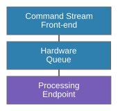
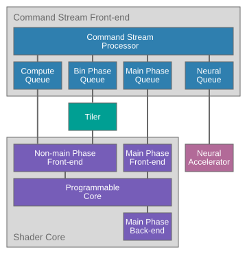
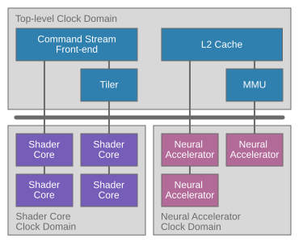
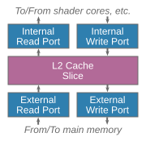
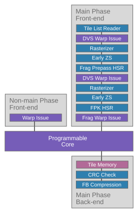
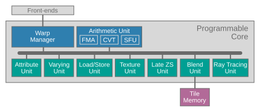

Arm Mali G2
Home / Arm® Mali™ G2 Performance Counter Reference Filtered
Introduction
This document applies to Mali G2-Ultra, Mali G2-Premium, and Mali G2-Pro.
Arm GPUs provide you with a wide range of performance counters that can be used to understand your application's performance characteristics and to identify optimization opportunities. This guide documents the counters available for Mali G2 in the Arm 5th Generation architecture family.
To use these counters effectively, you need a basic mental model of how workloads move through the GPU. This guide starts by summarizing the 5th Generation execution model, then introduces the major hardware blocks and clock domains that expose counters. Finally, it describes a profiling workflow for using those counters to distinguish scheduling limits, oversized workloads, and execution inefficiencies. You can use this approach to choose the right counters for an initial performance triage before investigating specific bottlenecks in more detail.
GPU workload execution
Arm 5th Generation GPUs process command streams submitted by the application. The GPU Command Stream Front-end (CSF) executes the commands in the stream to update the stream render state and submit workloads to the rest of the GPU for processing. When a workload needs to be processed, the CSF adds a job to a hardware queue. The hardware queue breaks up the job into smaller tasks and distributes them to the correct type of processing endpoint inside the GPU.

Schedulable workloads that can be queued by the CSF correspond to the application workloads visible in the high-level API. They are:
- Render passes
- Compute dispatches
- Ray tracing pipeline dispatches
- Data graph dispatches
- Transfers
Render passes and tile-based rendering
Render passes are a special type of workload because Arm GPUs are tile-based GPUs. Tile-based GPUs optimize fragment shading efficiency by splitting the output framebuffer into small tiles and rendering the output image tile-by-tile. Individual tiles are small enough to allow the GPU framebuffer working set to be kept in on-chip RAM, avoiding unnecessary memory bandwidth from framebuffer read-modify-write operations.
To support this approach, a render pass must be processed in two phases. The first phase determines which primitives contribute to which screen-space tiles. The second phase processes the render pass tile-by-tile and writes the final framebuffer state for each tile back to memory. A single render pass workload in the API therefore corresponds to two hardware workloads that must be scheduled.
Arm 5th Generation GPUs introduce Deferred Vertex Shading (DVS). DVS means that the first phase, which we call the Binning phase, only computes and stores the primitive binning information. Full vertex shading is deferred to the second phase, which we call the Main phase. This approach minimizes the memory bandwidth for the handover between the two phases, making this generation of GPUs far more bandwidth efficient for geometry-heavy scenes.
DVS can only be used for draw calls that use basic vertex shading. Techniques that cannot use DVS are treated as advanced geometry; these fully process geometry during the Binning phase and write their geometry outputs back to main memory. Draw calls using the advanced geometry path are significantly less efficient, so avoid them if possible. The advanced geometry path is used for:
- Vertex shaders using transform feedback
- Tessellation shaders
- Geometry shaders
Parallel hardware queues
The GPU supports multiple hardware queues, which allows multiple workload jobs to be submitted and processed in parallel.

There are four hardware queues, which can each accept a specific set of workload types.
- Binning phase queue: Dispatches binning phase workloads for render passes.
- Main phase queue: Dispatches main phase workloads for render passes and most transfer workloads that write to an image.
- Compute queue: Dispatches compute dispatches, advanced geometry shading, ray tracing dispatches, transfers that write to a buffer, and compute parts of data graph dispatches.
- Neural queue: Dispatches neural parts of data graph dispatches.
Major functional blocks
The GPU consists of multiple hardware blocks, each of which can provide performance counters to show how it is being used.

The blocks are:
- Command Stream Front-end: The interface between the driver and the GPU hardware, responsible for processing command streams submitted by the application and scheduling work onto the hardware queues.
- L2 Cache: A unified cache for the GPU, implemented as multiple physical slices to allow bandwidth to scale with GPU performance.
- Memory Management Unit (MMU): A hardware unit that performs virtual-to-physical address translation.
- Tiler: A fixed-function unit used by the binning phase. It coordinates vertex shading, performs primitive culling, and bins primitives into tile lists.
- Shader Cores: The programmable units that run user shader programs and compute elements in a data graph dispatch. Each shader core includes a fixed-function wrapper in addition to the programmable core. For example, the fixed-function Fragment front-end converts a tile list into shader threads for execution.
- Neural Accelerators: The hardware units that process non-shader tensor operations in a data graph dispatch.
Many GPU counters measure the number of cycles spent doing something. The GPU supports three different clock domains. You must be careful when comparing counters across clock domains.
- Top-level clock domain: This clock domain is used for everything that isn't a shader core or neural accelerator.
- Shader core clock domain: This clock domain is used for all shader cores. In a high-end GPU the shader cores are often clocked more slowly than the top-level to improve energy efficiency.
- Neural accelerator clock domain: This clock domain is used for all neural accelerators.
The use of clock domains and their supported frequencies are hardware vendor design choices and vary across devices.
Profiling a GPU
There are three broad reasons why an application using a GPU could be running slowly:
- Hardware not fully utilized
- Workload is too big
- Workload is inefficient
Hardware is not fully utilized
The first class of problem is one of scheduling. The workloads that make up a frame may be individually perfectly efficient, but some form of scheduling restriction means that the hardware queues are either completely idle or being used serially. Available hardware performance potential is unused.
The solution to this type of problem is to find the cause of the CPU bottleneck or command stream serialization, and then refactor to avoid it.
Hardware queue active performance counters show how many cycles the GPU is running work of a specific type. Spotting idle time (no queue active) and serialization (only one queue active) is the first tool used to detect scheduling problems.
Workload is too big
The second class of problem is one of scale. The workload may be perfectly efficient, allowing the hardware to run at full throughput, but too large to reach the desired performance.
The solution to this class of problem is to reduce the size or complexity of the workload. This can be achieved by:
- Reducing the number of workload elements that need processing, for example by reducing model vertex count or render pass resolution.
- Reducing the complexity of individual workload elements, for example by optimizing the existing implementation or changing to a smarter algorithm.
Hardware queue active performance counters show which types of workload are taking the most time, and individual hardware unit utilization counters help diagnose which specific aspect of the workload is the most expensive part.
Workload is inefficient
The final class of problem is one of execution inefficiency. The workload has been scheduled on the hardware, but it is not making the best use of the available resources.
Inefficiencies could be causing additional processing or memory bandwidth, or could be causing stalls during processing.
Hardware counters that count interesting events inside the functional units can indicate specific inefficiencies encountered when running a workload.
Profiling GPU scheduling
The first profiling task to perform is a performance triage to identify the class of problem that your application is hitting. Measuring the overall GPU active cycle count and the individual hardware queue utilization will show you how busy the GPU is and the queue scheduling behavior.
Profiling a GPU memory system
GPUs are data-plane processors, so optimizing memory access is an important goal for overall efficiency. The GPU L2 cache is implemented as a number of parallel slices, each of which has internal and external memory access ports.

Performance counters on the GPU memory interface measure the memory bandwidth generated by the GPU and the bus stalls and read latency observed by the GPU. These counters can be used to determine if the external memory system can provide the memory bandwidth requested by the GPU.
The GPU performance counters can only measure the memory system behavior at the GPU boundary. The counters provide no visibility into the downstream memory system, such as the behavior of a system cache or the off-chip DRAM bandwidth.
Profiling a GPU shader core
A shader core consists of a programmable core, wrapped by fixed-function hardware units that create warps for execution and write complete framebuffer tiles back to main memory.
The Main phase front-end performs many fixed-function operations to turn a tile list into the warps that run in the programmable core. If the programmable core is not being fully utilized during fragment shading, the counters for the Main phase front-end can often give clues about what is stalling.

The programmable core is a massively multi-threaded core that can contain up to 2048 concurrently running threads, grouped into 16-wide warps. Many warps can be stalled on a data cache miss without loss in performance. As long as there are enough live warps that are not stalled, the core can be kept busy.
Instructions from all of the warps can be running in the various units at the same time. The demand on the processing units reflects the statistical distribution of work across all of the running shader programs. The most heavily utilized unit is likely the one determining the overall performance, and that unit should be the target for optimizations.

In addition to the functional unit usage cycle counters, the shader core counters include extensive coverage of other behaviors that could be a source of lost performance. For example, the counters can indicate whether a high percentage of rasterized fragment quads are only partially covered, or whether arithmetic instructions are being executed in divergent control flow. This allows you to target optimizations at specific areas that are having a measurable impact on your application's performance.
GPU Front-end
The GPU front-end is the interface between the GPU hardware and the driver. The front-end schedules command streams submitted by the driver onto multiple hardware work queues. Each work queue handles a specific type of workload and is responsible for breaking a workload into smaller tasks that can be dispatched to the shader cores and neural accelerators.
In this generation of hardware, there are four work queues:
- Compute queue for compute shaders, advanced geometry shaders, and data graph workload subgraphs that run on the shader cores.
- Binning phase queue for the first phase of a render pass, handling vertex position calculation, and primitive culling and binning.
- Main phase queue for the second phase of a render pass, handling any deferred vertex shading and fragment shading.
- Neural queue for data graph workload subgraphs that run on the neural accelerators.
It is beneficial to schedule work on multiple queues in parallel, as this can balance the hardware load more evenly. In this generation of hardware, the Compute and Binning phase queues can run in parallel with the Main phase queue, but serially with respect to each other. The Neural queue always runs serially with respect to all other queues. Parallel processing of shader-based workloads increases the latency of individual tasks, but usually significantly improves overall throughput.
Performance counters in this section show activity on each of the queues, which indicates both the complexity and scheduling patterns of your submitted workloads.
GPU Cycles
This counter group shows the workload processing activity level of the GPU, showing the overall use and when work is running for each of the hardware scheduling queues.
GPU active
This counter increments every clock cycle when the GPU has any pending workload present in one of its processing queues. It shows the overall GPU processing load requested by the application.
This counter increments when any workload is present in any processing queue, even if the GPU is stalled waiting for external memory. These cycles are counted as active time even though no progress is being made.
MaliGPUActiveCy
$MaliGPUCyclesGPUActive
GPU_ACTIVE
Any queue active
This counter increments every clock cycle when any GPU command queue is active with work for the tiler or shader cores.
MaliGPUAnyQueueActiveCy
$MaliGPUCyclesAnyQueueActive
GPU_ITER_ACTIVE
Compute queue active
This expression increments every clock cycle when the command stream compute queue has at least one task issued for processing.
MaliCompQueueActiveCy
libGPUCounters derivation:
MaliCompQueuedCy - MaliCompQueueAssignStallCyStreamline derivation:
$MaliGPUQueuedCyclesComputeQueued - $MaliGPUWaitCyclesComputeQueueEndpointStallsHardware derivation:
ITER_COMP_ACTIVE - ITER_COMP_READY_BLOCKEDBinning phase queue active
This expression increments every clock cycle when the command stream binning phase queue has at least one task issued for processing. The binning phase includes vertex position shading and primitive binning.
MaliBinningQueueActiveCy
libGPUCounters derivation:
MaliBinningQueuedCy - MaliBinningQueueAssignStallCyStreamline derivation:
$MaliGPUQueuedCyclesBinningPhaseQueued - $MaliGPUWaitCyclesBinningPhaseQueueEndpointStallsHardware derivation:
ITER_TILER_ACTIVE - ITER_TILER_READY_BLOCKEDMain phase queue active
This expression increments every clock cycle when the command stream main phase queue has at least one task issued for processing. The main phase includes any deferred vertex processing and all fragment shading.
MaliMainQueueActiveCy
libGPUCounters derivation:
MaliMainQueuedCy - MaliMainQueueAssignStallCyStreamline derivation:
$MaliGPUQueuedCyclesMainPhaseQueued - $MaliGPUWaitCyclesMainPhaseQueueEndpointStallsHardware derivation:
ITER_FRAG_ACTIVE - ITER_FRAG_READY_BLOCKEDNeural queue active
This expression increments every clock cycle when the command stream neural queue has at least one task issued for processing.
MaliNeuralQueueActiveCy
libGPUCounters derivation:
MaliNeuralQueuedCy - MaliNeuralQueueAssignStallCyStreamline derivation:
$MaliGPUQueuedCyclesNeuralQueued - $MaliGPUWaitCyclesNeuralQueueEndpointStallsHardware derivation:
ITER_NEURAL_ACTIVE - ITER_NEURAL_READY_BLOCKEDTiler active
This counter increments every clock cycle the tiler has a workload in its processing queue. The tiler is responsible for coordinating geometry processing and providing the fixed-function tiling needed for the Mali tile-based rendering pipeline. It can run in parallel to vertex shading and fragment shading.
A high cycle count here does not necessarily imply a bottleneck, unless the Shader core compute or binning phase active cycles counter in the shader core is comparatively low.
MaliTilerActiveCy
$MaliGPUCyclesTilerActive
TILER_ACTIVE
GPU interrupt active
This counter increments every clock cycle when the GPU has an interrupt pending and is waiting for the CPU to process it.
Cycles with a pending interrupt do not necessarily indicate lost performance because the GPU can process other queued work in parallel. However, if GPU interrupt pending cycles are a high percentage of GPU active cycles, an underlying problem might be preventing the CPU from efficiently handling interrupts. This problem is normally a system integration issue, which an application developer can not work around.
MaliGPUIRQActiveCy
$MaliGPUCyclesGPUInterruptActive
GPU_IRQ_ACTIVE
GPU Queued Cycles
This counter group shows the workload scheduling behavior of the GPU queues, showing when queues contain work, including cycles when a queue is stalled and can not start an enqueued workload.
Compute queued
This counter increments every clock cycle when the command stream compute queue has work queued. The count includes cycles when the queue is stalled due to endpoint contention.
MaliCompQueuedCy
$MaliGPUQueuedCyclesComputeQueued
ITER_COMP_ACTIVE
Binning phase queued
This counter increments every clock cycle when the command stream binning phase queue has work queued. The binning phase includes vertex position shading, culling, and primitive binning, and includes cycles when the queue is stalled due to endpoint contention.
MaliBinningQueuedCy
$MaliGPUQueuedCyclesBinningPhaseQueued
ITER_TILER_ACTIVE
Main phase queued
This counter increments every clock cycle when the command stream main phase queue has work queued. The main phase includes any deferred vertex processing and all fragment shading, and can include cycles when the queue is stalled due to endpoint contention.
MaliMainQueuedCy
$MaliGPUQueuedCyclesMainPhaseQueued
ITER_FRAG_ACTIVE
Neural queued
This counter increments every clock cycle when the command stream neural queue has work queued. The count includes cycles when the queue is stalled due to endpoint contention.
MaliNeuralQueuedCy
$MaliGPUQueuedCyclesNeuralQueued
ITER_NEURAL_ACTIVE
GPU Wait Cycles
This counter group shows the workload scheduling behavior of the GPU queues, showing reasons for any scheduling stalls for each queue.
Compute queue endpoint drain stalls
This counter increments every clock cycle when compute work is queued but can not start because IDVS work is still active on the shared endpoints.
MaliCompQueueDrainStallCy
$MaliGPUWaitCyclesComputeQueueEndpointDrainStalls
ITER_COMP_EP_DRAIN
Compute queue endpoint stalls
This counter increments every clock cycle when compute work is queued but can not start because no endpoints are assigned.
MaliCompQueueAssignStallCy
$MaliGPUWaitCyclesComputeQueueEndpointStalls
ITER_COMP_READY_BLOCKED
Binning phase queue endpoint drain stalls
This counter increments every clock cycle when binning phase work is queued but can not start because compute work is still active on the shared endpoints.
MaliVertQueueDrainStallCy
$MaliGPUWaitCyclesBinningPhaseQueueEndpointDrainStalls
ITER_TILER_EP_DRAIN
Binning phase queue endpoint stalls
This counter increments every clock cycle when binning phase work is queued but can not start because no endpoints are assigned. The binning phase includes vertex position shading and primitive binning.
MaliBinningQueueAssignStallCy
$MaliGPUWaitCyclesBinningPhaseQueueEndpointStalls
ITER_TILER_READY_BLOCKED
Main phase queue endpoint stalls
This counter increments every clock cycle when main phase work is queued but can not start because no endpoints are assigned. The main phase includes any deferred vertex processing and all fragment shading.
MaliMainQueueAssignStallCy
$MaliGPUWaitCyclesMainPhaseQueueEndpointStalls
ITER_FRAG_READY_BLOCKED
Neural queue endpoint stalls
This counter increments every clock cycle when neural work is queued but can not start because no endpoints are assigned.
MaliNeuralQueueAssignStallCy
$MaliGPUWaitCyclesNeuralQueueEndpointStalls
ITER_NEURAL_READY_BLOCKED
GPU Jobs
This counter group shows the total number of workload jobs issued to the GPU front-end for each queue. Most jobs correspond to an API workload, for example a compute dispatch generates a compute job. However, the driver can also generate small housekeeping jobs for each queue, so job counts do not directly correlate with API behavior.
Compute jobs
This counter increments for every job processed by the compute queue.
MaliCompQueueJob
$MaliGPUJobsComputeJobs
ITER_COMP_JOB_COMPLETED
Binning phase jobs
This counter increments for every job processed by the binning phase queue.
MaliBinningQueueJob
$MaliGPUJobsBinningPhaseJobs
ITER_TILER_JOB_COMPLETED
GPU Tasks
This counter group shows the total number of workload tasks issued by the GPU front-end to the processing endpoints inside the GPU.
Compute tasks
This counter increments for every compute task processed by the GPU.
MaliCompQueueTask
$MaliGPUTasksComputeTasks
ITER_COMP_TASK_COMPLETED
Binning phase tasks
This counter increments for every binning phase task processed by the GPU.
MaliBinningQueueTask
$MaliGPUTasksBinningPhaseTasks
ITER_TILER_IDVS_TASK_COMPLETED
Main phase tasks
This counter increments for every 64 x 64 pixel region of a render pass that is processed by the GPU. The processed region of a render pass can be smaller than the full size of the attached surfaces if the application's viewport and scissor settings prevent the whole image being rendered.
MaliMainQueueTask
$MaliGPUTasksMainPhaseTasks
ITER_FRAG_TASK_COMPLETED
GPU Utilization
This counter group shows the workload processing activity level of the GPU queues, normalized as a percentage of overall GPU activity.
Compute queue utilization
This expression defines the compute queue utilization compared against the GPU active cycles.
For GPU bound content, it is expected that the GPU queues process work in parallel. The dominant queue must be close to 100% utilized to get the best performance. If no queue is dominant, but the GPU is fully utilized, then a serialization or dependency problem might be preventing queue overlap.
MaliCompQueueUtil
libGPUCounters derivation:
max(min(((MaliCompQueuedCy - MaliCompQueueAssignStallCy) / MaliGPUActiveCy) * 100, 100), 0)Streamline derivation:
max(min((($MaliGPUQueuedCyclesComputeQueued - $MaliGPUWaitCyclesComputeQueueEndpointStalls) / $MaliGPUCyclesGPUActive) * 100, 100), 0)Hardware derivation:
max(min(((ITER_COMP_ACTIVE - ITER_COMP_READY_BLOCKED) / GPU_ACTIVE) * 100, 100), 0)Binning phase queue utilization
This expression defines the binning phase queue utilization compared against the GPU active cycles. The binning phase includes vertex position shading, culling, and primitive binning.
For GPU bound content, it is expected that the GPU queues process work in parallel. The dominant queue must be close to 100% utilized to get the best performance. If no queue is dominant, but the GPU is fully utilized, then a serialization or dependency problem might be preventing queue overlap.
MaliBinningQueueUtil
libGPUCounters derivation:
max(min(((MaliBinningQueuedCy - MaliBinningQueueAssignStallCy) / MaliGPUActiveCy) * 100, 100), 0)Streamline derivation:
max(min((($MaliGPUQueuedCyclesBinningPhaseQueued - $MaliGPUWaitCyclesBinningPhaseQueueEndpointStalls) / $MaliGPUCyclesGPUActive) * 100, 100), 0)Hardware derivation:
max(min(((ITER_TILER_ACTIVE - ITER_TILER_READY_BLOCKED) / GPU_ACTIVE) * 100, 100), 0)Main phase queue utilization
This expression defines the main phase queue utilization compared against the GPU active cycles. The main phase includes any deferred vertex processing and all fragment shading.
For GPU bound content, it is expected that the GPU queues process work in parallel. The dominant queue must be close to 100% utilized to get the best performance. If no queue is dominant, but the GPU is fully utilized, then a serialization or dependency problem might be preventing queue overlap.
MaliMainQueueUtil
libGPUCounters derivation:
max(min(((MaliMainQueuedCy - MaliMainQueueAssignStallCy) / MaliGPUActiveCy) * 100, 100), 0)Streamline derivation:
max(min((($MaliGPUQueuedCyclesMainPhaseQueued - $MaliGPUWaitCyclesMainPhaseQueueEndpointStalls) / $MaliGPUCyclesGPUActive) * 100, 100), 0)Hardware derivation:
max(min(((ITER_FRAG_ACTIVE - ITER_FRAG_READY_BLOCKED) / GPU_ACTIVE) * 100, 100), 0)Neural queue utilization
This expression defines the neural queue utilization compared against the GPU active cycles.
For GPU bound content, it is expected that the GPU queues process work in parallel. The dominant queue must be close to 100% utilized to get the best performance. If no queue is dominant, but the GPU is fully utilized, then a serialization or dependency problem might be preventing queue overlap.
MaliNeuralQueueUtil
libGPUCounters derivation:
max(min(((MaliNeuralQueuedCy - MaliNeuralQueueAssignStallCy) / MaliGPUActiveCy) * 100, 100), 0)Streamline derivation:
max(min((($MaliGPUQueuedCyclesNeuralQueued - $MaliGPUWaitCyclesNeuralQueueEndpointStalls) / $MaliGPUCyclesGPUActive) * 100, 100), 0)Hardware derivation:
max(min(((ITER_NEURAL_ACTIVE - ITER_NEURAL_READY_BLOCKED) / GPU_ACTIVE) * 100, 100), 0)Tiler utilization
This expression defines the tiler utilization compared to the total GPU active cycles.
Note that this metric measures the overall processing time for the tiler geometry pipeline. The metric includes aspects of vertex shading, in addition to the fixed-function tiling process.
MaliTilerUtil
libGPUCounters derivation:
max(min((MaliTilerActiveCy / MaliGPUActiveCy) * 100, 100), 0)Streamline derivation:
max(min(($MaliGPUCyclesTilerActive / $MaliGPUCyclesGPUActive) * 100, 100), 0)Hardware derivation:
max(min((TILER_ACTIVE / GPU_ACTIVE) * 100, 100), 0)Interrupt utilization
This expression defines the IRQ pending utilization compared against the GPU active cycles. In a well-functioning system, this expression should be less than 3% of the total cycles. If the value is much higher than this, a system issue might be preventing the CPU from efficiently handling interrupts.
MaliGPUIRQUtil
libGPUCounters derivation:
max(min((MaliGPUIRQActiveCy / MaliGPUActiveCy) * 100, 100), 0)Streamline derivation:
max(min(($MaliGPUCyclesGPUInterruptActive / $MaliGPUCyclesGPUActive) * 100, 100), 0)Hardware derivation:
max(min((GPU_IRQ_ACTIVE / GPU_ACTIVE) * 100, 100), 0)GPU Clock Ratios
This counter group gives an estimate of the clock ratios between the data processors and the GPU top-level. These counters are estimates and might produce noisy values for some workloads.
Shader core clock ratio
This expression estimates the shader core clock as a percentage relative to the top-level GPU clock.
In smaller systems with fewer shader cores, it is common that the shader cores will be clocked at the same frequency as the GPU top-level.
In larger systems with more shader cores, it is common to reduce the shader core clock frequency and run the cores at a lower voltage to improve energy efficiency.
MaliClockRatioSC
libGPUCounters derivation:
max(min((MaliAnyActiveCy / MALI_CONFIG_SHADER_CORE_COUNT / MaliGPUActiveCy) * 100, 100), 0)Streamline derivation:
max(min(($MaliShaderCoreCyclesAnyWorkloadActive / $MaliConstantsShaderCoreCount / $MaliGPUCyclesGPUActive) * 100, 100), 0)Hardware derivation:
max(min((SHADER_CORE_ACTIVE / MALI_CONFIG_SHADER_CORE_COUNT / GPU_ACTIVE) * 100, 100), 0)Neural accelerator clock ratio
This expression estimates the neural accelerator clock as a percentage relative to the top-level GPU clock.
The neural accelerator is commonly clocked at a higher frequency than the shader core clock.
MaliClockRatioNX
libGPUCounters derivation:
max(min((MaliNXActiveCy / MALI_CONFIG_NEURAL_ACCELERATOR_COUNT / MaliGPUActiveCy) * 100, 100), 0)Streamline derivation:
max(min(($MaliNeuralAcceleratorCyclesNeuralAcceleratorActive / $MaliConstantsNeuralAcceleratorCount / $MaliGPUCyclesGPUActive) * 100, 100), 0)Hardware derivation:
max(min((NE_ACTIVE / MALI_CONFIG_NEURAL_ACCELERATOR_COUNT / GPU_ACTIVE) * 100, 100), 0)GPU Messages
This counter group shows the total number of control-plane messages issued by the GPU front-end to the processing endpoints inside the GPU.
GPU Cache Flushes
This counter group shows the total number of L2 cache and MMU operations performed by the GPU top-level.
GPU Cache Flush Cycles
This counter group shows the total number of cycles spent by the GPU top-level performing L2 cache and MMU operations.
CSF Cycles
This counter group shows the total number of cycles when each of the sub-units inside the command stream front-end is active.
CEU active
This counter increments every clock cycle when the GPU command execution unit is active.
MaliCSFCEUActiveCy
$MaliCSFCyclesCEUActive
CEU_ACTIVE
CSF Utilization
This counter group shows the use of each of the functional units inside the command stream front-end, relative to their speed-of-light capability.
CEU utilization
This expression defines the front-end command execution unit utilization compared against the GPU active cycles.
MaliCSFCEUUtil
libGPUCounters derivation:
max(min((MaliCSFCEUActiveCy / MaliGPUActiveCy) * 100, 100), 0)Streamline derivation:
max(min(($MaliCSFCyclesCEUActive / $MaliGPUCyclesGPUActive) * 100, 100), 0)Hardware derivation:
max(min((CEU_ACTIVE / GPU_ACTIVE) * 100, 100), 0)LSU utilization
This expression defines the front-end load/store unit utilization compared against the GPU active cycles.
MaliCSFLSUUtil
libGPUCounters derivation:
max(min((MaliCSFLSUActiveCy / MaliGPUActiveCy) * 100, 100), 0)Streamline derivation:
max(min(($MaliCSFCyclesLSUActive / $MaliGPUCyclesGPUActive) * 100, 100), 0)Hardware derivation:
max(min((LSU_ACTIVE / GPU_ACTIVE) * 100, 100), 0)MCU utilization
This expression defines the microcontroller utilization compared against the GPU active cycles.
High microcontroller load can be indicative of content using many emulated commands, such as command stream scheduling and synchronization operations.
MaliCSFMCUUtil
libGPUCounters derivation:
max(min((MaliCSFMCUActiveCy / MaliGPUActiveCy) * 100, 100), 0)Streamline derivation:
max(min(($MaliCSFCyclesMCUActive / $MaliGPUCyclesGPUActive) * 100, 100), 0)Hardware derivation:
max(min((MCU_ACTIVE / GPU_ACTIVE) * 100, 100), 0)CSF Queue Interrupt Cycles
This counter group shows the total number of cycles when each of the CSF interrupts is active.
Doorbell interrupt active
This counter increments every clock cycle when the command stream doorbell IRQ is pending. This interrupt is handled by the GPU MCU firmware.
MaliCSDoorbellIRQCy
$MaliCSFQueueInterruptCyclesDoorbellInterruptActive
DOORBELL_IRQ_ACTIVE
Compute queue interrupt active
This counter increments every clock cycle when the command stream compute queue has an IRQ pending.
MaliCompQueueIRQActiveCy
$MaliCSFQueueInterruptCyclesComputeQueueInterruptActive
ITER_COMP_IRQ_ACTIVE
Binning phase queue interrupt active
This counter increments every clock cycle when the command stream binning phase queue has an IRQ pending.
MaliBinningQueueIRQActiveCy
$MaliCSFQueueInterruptCyclesBinningPhaseQueueInterruptActive
ITER_TILER_IRQ_ACTIVE
CSF Stream Cycles
This counter group shows the total number of cycles when each of the command stream interfaces is active.
CS0 active
This counter increments every clock cycle when command stream interface 0 contains a command stream. This does not necessarily indicate that the command stream is actively being processed by the main GPU.
MaliCSFCS0ActiveCy
$MaliCSFStreamCyclesCS0Active
CSHWIF0_ENABLED
CS1 active
This counter increments every clock cycle when command stream interface 1 contains a command stream. This does not necessarily indicate that the command stream is actively being processed by the main GPU.
MaliCSFCS1ActiveCy
$MaliCSFStreamCyclesCS1Active
CSHWIF1_ENABLED
CS2 active
This counter increments every clock cycle when command stream interface 2 contains a command stream. This does not necessarily indicate that the command stream is actively being processed by the main GPU.
MaliCSFCS2ActiveCy
$MaliCSFStreamCyclesCS2Active
CSHWIF2_ENABLED
CS3 active
This counter increments every clock cycle when command stream interface 3 contains a command stream. This does not necessarily indicate that the command stream is actively being processed by the main GPU.
MaliCSFCS3ActiveCy
$MaliCSFStreamCyclesCS3Active
CSHWIF3_ENABLED
CS4 active
This counter increments every clock cycle when command stream interface 4 contains a command stream. This does not necessarily indicate that the command stream is actively being processed by the main GPU.
MaliCSFCS4ActiveCy
$MaliCSFStreamCyclesCS4Active
CSHWIF4_ENABLED
CS5 active
This counter increments every clock cycle when command stream interface 5 contains a command stream. This does not necessarily indicate that the command stream is actively being processed by the main GPU.
MaliCSFCS5ActiveCy
$MaliCSFStreamCyclesCS5Active
CSHWIF5_ENABLED
CSF Stream Stall Cycles
This counter group shows the total number of cycles that each of the command stream interfaces stalled for any reason.
CS0 wait stalls
This counter increments every clock cycle when command stream interface 0 is blocked due to an outstanding scheduling dependency.
MaliCS0WaitStallCy
$MaliCSFStreamStallCyclesCS0WaitStalls
CSHWIF0_WAIT_BLOCKED
CS1 wait stalls
This counter increments every clock cycle when command stream interface 1 is blocked due to an outstanding scheduling dependency.
MaliCS1WaitStallCy
$MaliCSFStreamStallCyclesCS1WaitStalls
CSHWIF1_WAIT_BLOCKED
CS2 wait stalls
This counter increments every clock cycle when command stream interface 2 is blocked due to an outstanding scheduling dependency.
MaliCS2WaitStallCy
$MaliCSFStreamStallCyclesCS2WaitStalls
CSHWIF2_WAIT_BLOCKED
CS3 wait stalls
This counter increments every clock cycle when command stream interface 3 is blocked due to an outstanding scheduling dependency.
MaliCS3WaitStallCy
$MaliCSFStreamStallCyclesCS3WaitStalls
CSHWIF3_WAIT_BLOCKED
External Memory System
The GPU external memory interface connects the GPU to the system DRAM, via an on-chip memory bus. The exact configuration of the memory system outside of the GPU varies from device to device and might include additional levels of system cache before reaching the off-chip memory.
GPUs are data-plane processors, with workloads that are too large to keep in system cache and that therefore make heavy use of main memory. GPUs are designed to be tolerant of high latency, when compared to a CPU, but poor memory system performance can still reduce GPU efficiency.
Accessing external DRAM is one of the most energy-intensive operations that the GPU can perform. Reducing memory bandwidth is a key optimization goal for mobile applications, even if the application is not bandwidth-limited, ensuring users get long battery life and thermally stable performance.
Performance counters in this section measure how much memory bandwidth your application uses, as well as stall and latency counters to show how well the memory system is coping with the generated traffic.
External Bus Accesses
This counter group shows the absolute number of external memory transactions generated by the GPU.
Read transactions
This counter increments for every external read transaction made on the memory bus. These transactions typically result in an external DRAM access, but some designs include a system cache which can provide some buffering.
The longest memory transaction possible is 64 bytes in length, but shorter transactions are generated in some circumstances.
MaliExtBusRd
$MaliExternalBusAccessesReadTransactions
L2_EXT_READ
Write transactions
This counter increments for every external write transaction made on the memory bus. These transactions typically result in an external DRAM access, but some chips include a system cache which can provide some buffering.
The longest memory transaction possible is 64 bytes in length, but shorter transactions are generated in some circumstances.
MaliExtBusWr
$MaliExternalBusAccessesWriteTransactions
L2_EXT_WRITE
ReadNoSnoop transactions
This counter increments for every non-coherent (ReadNoSnp) transaction.
MaliExtBusRdNoSnoop
$MaliExternalBusAccessesReadNoSnoopTransactions
L2_EXT_READ_NOSNP
ReadUnique transactions
This counter increments for every coherent exclusive read (ReadUnique) transaction.
MaliExtBusRdUnique
$MaliExternalBusAccessesReadUniqueTransactions
L2_EXT_READ_UNIQUE
WriteNoSnoopFull transactions
This counter increments for every external non-coherent full write (WriteNoSnpFull) transaction.
MaliExtBusWrNoSnoopFull
$MaliExternalBusAccessesWriteNoSnoopFullTransactions
L2_EXT_WRITE_NOSNP_FULL
WriteNoSnoopPartial transactions
This counter increments for every external non-coherent partial write (WriteNoSnpPtl) transaction.
MaliExtBusWrNoSnoopPart
$MaliExternalBusAccessesWriteNoSnoopPartialTransactions
L2_EXT_WRITE_NOSNP_PTL
External Bus Beats
This counter group shows the absolute number of external memory data transfer cycles used by the GPU.
External Bus Bytes
This counter group shows the absolute amount of external memory traffic generated by the GPU. Absolute measures are the most useful way to check actual bandwidth against a per-frame bandwidth budget.
Read bytes
This expression defines the total output read bytes for the GPU.
MaliExtBusRdBy
libGPUCounters derivation:
MaliExtBusRdBt * MALI_CONFIG_EXT_BUS_BYTE_SIZEStreamline derivation:
$MaliExternalBusBeatsReadBeats * ($MaliConstantsBusWidthBits / 8)Hardware derivation:
L2_EXT_READ_BEATS * MALI_CONFIG_EXT_BUS_BYTE_SIZEWrite bytes
This expression defines the total output write bytes for the GPU.
MaliExtBusWrBy
libGPUCounters derivation:
MaliExtBusWrBt * MALI_CONFIG_EXT_BUS_BYTE_SIZEStreamline derivation:
$MaliExternalBusBeatsWriteBeats * ($MaliConstantsBusWidthBits / 8)Hardware derivation:
L2_EXT_WRITE_BEATS * MALI_CONFIG_EXT_BUS_BYTE_SIZEExternal Bus Bandwidth
This counter group shows the external memory traffic generated by the GPU, presented as a bytes/second rate. Rates are the most useful way to check actual bandwidth against the design limits of a chip, which will usually be specified in bytes/second.
Read bandwidth
This expression defines the total output read bandwidth for the GPU, measured in bytes per second.
MaliExtBusRdBPS
libGPUCounters derivation:
(MaliExtBusRdBt * MALI_CONFIG_EXT_BUS_BYTE_SIZE) / MALI_CONFIG_TIME_SPANStreamline derivation:
($MaliExternalBusBeatsReadBeats * ($MaliConstantsBusWidthBits / 8)) / $ZOOMHardware derivation:
(L2_EXT_READ_BEATS * MALI_CONFIG_EXT_BUS_BYTE_SIZE) / MALI_CONFIG_TIME_SPANWrite bandwidth
This expression defines the total output write bandwidth for the GPU, measured in bytes per second.
MaliExtBusWrBPS
libGPUCounters derivation:
(MaliExtBusWrBt * MALI_CONFIG_EXT_BUS_BYTE_SIZE) / MALI_CONFIG_TIME_SPANStreamline derivation:
($MaliExternalBusBeatsWriteBeats * ($MaliConstantsBusWidthBits / 8)) / $ZOOMHardware derivation:
(L2_EXT_WRITE_BEATS * MALI_CONFIG_EXT_BUS_BYTE_SIZE) / MALI_CONFIG_TIME_SPANExternal Bus Stall Cycles
This counter group shows the absolute number of external memory interface stalls, which is the number of cycles when the GPU is trying to send data but the external bus can not accept it.
Read stalls
This counter increments for every stall cycle on the AXI bus when the GPU has a valid read transaction to send, but is awaiting a ready signal from the bus.
MaliExtBusRdStallCy
$MaliExternalBusStallCyclesReadStalls
L2_EXT_AR_STALL
Write stalls
This counter increments for every stall cycle on the external bus where the GPU has a valid write transaction to send, but is awaiting a ready signal from the external bus.
MaliExtBusWrStallCy
$MaliExternalBusStallCyclesWriteStalls
L2_EXT_W_STALL
External Bus Stall Rate
This counter group shows the percentage of cycles that the GPU is trying to send data, but the external bus can not accept it.
A small number of stalls is expected, but sustained periods with stall rates above 10% might indicate that the GPU is generating more traffic than the downstream memory system can handle efficiently.
Read stall rate
This expression defines the percentage of GPU cycles with a memory stall on an external read transaction.
Stall rates can be reduced by reducing the size of data resources, such as buffers or textures.
MaliExtBusRdStallRate
libGPUCounters derivation:
max(min((MaliExtBusRdStallCy / MALI_CONFIG_L2_CACHE_COUNT / MaliGPUActiveCy) * 100, 100), 0)Streamline derivation:
max(min(($MaliExternalBusStallCyclesReadStalls / $MaliConstantsL2SliceCount / $MaliGPUCyclesGPUActive) * 100, 100), 0)Hardware derivation:
max(min((L2_EXT_AR_STALL / MALI_CONFIG_L2_CACHE_COUNT / GPU_ACTIVE) * 100, 100), 0)Write stall rate
This expression defines the percentage of GPU cycles with a memory stall on an external write transaction.
Stall rates can be reduced by reducing geometry complexity, or the size of framebuffers in memory.
MaliExtBusWrStallRate
libGPUCounters derivation:
max(min((MaliExtBusWrStallCy / MALI_CONFIG_L2_CACHE_COUNT / MaliGPUActiveCy) * 100, 100), 0)Streamline derivation:
max(min(($MaliExternalBusStallCyclesWriteStalls / $MaliConstantsL2SliceCount / $MaliGPUCyclesGPUActive) * 100, 100), 0)Hardware derivation:
max(min((L2_EXT_W_STALL / MALI_CONFIG_L2_CACHE_COUNT / GPU_ACTIVE) * 100, 100), 0)External Bus Read Latency
This counter group shows the histogram distribution of memory latency for GPU reads.
GPUs are more tolerant of latency than CPUs, but sustained periods of high latency might indicate that the GPU is generating more traffic than the downstream memory system can handle efficiently.
0-127 cycles
This counter increments for every data beat that is returned between 0 and 127 cycles after the read transaction starts. This latency is considered a fast access response speed.
MaliExtBusRdLat0
$MaliExternalBusReadLatency0127Cycles
L2_EXT_RRESP_0_127
128-191 cycles
This counter increments for every data beat that is returned between 128 and 191 cycles after the read transaction starts. This latency is considered a normal access response speed.
MaliExtBusRdLat128
$MaliExternalBusReadLatency128191Cycles
L2_EXT_RRESP_128_191
192-255 cycles
This counter increments for every data beat that is returned between 192 and 255 cycles after the read transaction starts. This latency is considered a normal access response speed.
MaliExtBusRdLat192
$MaliExternalBusReadLatency192255Cycles
L2_EXT_RRESP_192_255
256-319 cycles
This counter increments for every data beat that is returned between 256 and 319 cycles after the read transaction starts. This latency is considered a slow access response speed.
MaliExtBusRdLat256
$MaliExternalBusReadLatency256319Cycles
L2_EXT_RRESP_256_319
320-383 cycles
This counter increments for every data beat that is returned between 320 and 383 cycles after the read transaction starts. This latency is considered a slow access response speed.
MaliExtBusRdLat320
$MaliExternalBusReadLatency320383Cycles
L2_EXT_RRESP_320_383
384+ cycles
This expression increments for every read beat that is returned more than 383 cycles after the read transaction starts. This latency is considered a very slow access response speed.
MaliExtBusRdLat384
libGPUCounters derivation:
MaliExtBusRdBt - MaliExtBusRdLat0 - MaliExtBusRdLat128 - MaliExtBusRdLat192 - MaliExtBusRdLat256 - MaliExtBusRdLat320Streamline derivation:
$MaliExternalBusBeatsReadBeats - $MaliExternalBusReadLatency0127Cycles - $MaliExternalBusReadLatency128191Cycles - $MaliExternalBusReadLatency192255Cycles - $MaliExternalBusReadLatency256319Cycles - $MaliExternalBusReadLatency320383CyclesHardware derivation:
L2_EXT_READ_BEATS - L2_EXT_RRESP_0_127 - L2_EXT_RRESP_128_191 - L2_EXT_RRESP_192_255 - L2_EXT_RRESP_256_319 - L2_EXT_RRESP_320_383External Bus Outstanding Reads
This counter group shows the histogram distribution of the use of the available pool of outstanding memory read transactions.
Sustained periods with most read transactions outstanding may indicate that the GPU hardware configuration is running out of outstanding read capacity.
0-25% outstanding
This counter increments for every read transaction initiated when 0-25% of the available transaction IDs are in use.
MaliExtBusRdOTQ1
$MaliExternalBusOutstandingReads025Outstanding
L2_EXT_AR_CNT_Q1
25-50% outstanding
This counter increments for every read transaction initiated when 25-50% of the available transaction IDs are in use.
MaliExtBusRdOTQ2
$MaliExternalBusOutstandingReads2550Outstanding
L2_EXT_AR_CNT_Q2
50-75% outstanding
This counter increments for every read transaction initiated when 50-75% of the available transaction IDs are in use.
MaliExtBusRdOTQ3
$MaliExternalBusOutstandingReads5075Outstanding
L2_EXT_AR_CNT_Q3
75-100% outstanding
This expression increments for every read transaction initiated when 75-100% of transaction IDs are in use.
MaliExtBusRdOTQ4
libGPUCounters derivation:
MaliExtBusRd - MaliExtBusRdOTQ1 - MaliExtBusRdOTQ2 - MaliExtBusRdOTQ3Streamline derivation:
$MaliExternalBusAccessesReadTransactions - $MaliExternalBusOutstandingReads025Outstanding - $MaliExternalBusOutstandingReads2550Outstanding - $MaliExternalBusOutstandingReads5075OutstandingHardware derivation:
L2_EXT_READ - L2_EXT_AR_CNT_Q1 - L2_EXT_AR_CNT_Q2 - L2_EXT_AR_CNT_Q3External Bus Outstanding Writes
This counter group shows the histogram distribution of the use of the available pool of outstanding memory write transactions.
Sustained periods with most write transactions outstanding may indicate that the GPU hardware configuration is running out of outstanding write capacity.
0-25% outstanding
This counter increments for every write transaction initiated when 0-25% of the available transaction IDs are in use.
MaliExtBusWrOTQ1
$MaliExternalBusOutstandingWrites025Outstanding
L2_EXT_AW_CNT_Q1
25-50% outstanding
This counter increments for every write transaction initiated when 25-50% of the available transaction IDs are in use.
MaliExtBusWrOTQ2
$MaliExternalBusOutstandingWrites2550Outstanding
L2_EXT_AW_CNT_Q2
50-75% outstanding
This counter increments for every write transaction initiated when 50-75% of the available transaction IDs are in use.
MaliExtBusWrOTQ3
$MaliExternalBusOutstandingWrites5075Outstanding
L2_EXT_AW_CNT_Q3
75-100% outstanding
This expression increments for every write transaction initiated when 75-100% of transaction IDs are in use.
MaliExtBusWrOTQ4
libGPUCounters derivation:
MaliExtBusWr - MaliExtBusWrOTQ1 - MaliExtBusWrOTQ2 - MaliExtBusWrOTQ3Streamline derivation:
$MaliExternalBusAccessesWriteTransactions - $MaliExternalBusOutstandingWrites025Outstanding - $MaliExternalBusOutstandingWrites2550Outstanding - $MaliExternalBusOutstandingWrites5075OutstandingHardware derivation:
L2_EXT_WRITE - L2_EXT_AW_CNT_Q1 - L2_EXT_AW_CNT_Q2 - L2_EXT_AW_CNT_Q3Graphics Geometry Workload
Graphics workloads using the rasterization pipeline pass inputs to the GPU as a geometry stream. Vertices in this stream are position shaded, assembled into primitives, and then passed through a culling pipeline before being passed to the Arm GPU binning unit.
Performance counters in this section show how the input geometry is processed, indicating the overall complexity of the geometry workload and how it is processed by the primitive culling stages.
Input Primitives
This counter group shows the number of input primitives to the GPU, before any culling is applied.
Input primitives
This expression defines the total number of input primitives to the rendering process.
High complexity geometry is one of the most expensive inputs to the GPU, because vertices are much larger than compressed texels. Optimize your geometry to minimize mesh complexity, using dynamic level-of-detail and normal maps to reduce the number of primitives required.
MaliGeomTotalPrim
libGPUCounters derivation:
MaliGeomFaceCullPrim + MaliGeomPlaneCullPrim + MaliGeomSampleCullPrim + MaliGeomScissorCullPrim + MaliGeomVisiblePrimStreamline derivation:
$MaliPrimitiveCullingFacingCulledPrimitives + $MaliPrimitiveCullingFrustumCulledPrimitives + $MaliPrimitiveCullingSampleCulledPrimitives + $MaliPrimitiveCullingScissorCulledPrimitives + $MaliPrimitiveCullingVisiblePrimitivesHardware derivation:
PRIM_FACE_CULLED + PRIM_FRUSTUM_CULLED + PRIM_SAMPLE_CULLED + PRIM_SCISSOR_CULLED + PRIM_VISIBLETriangle primitives
This counter increments for every input triangle primitive. The count is made before any culling or clipping.
MaliGeomTrianglePrim
$MaliInputPrimitivesTrianglePrimitives
TRIANGLES
Visible Primitives
This counter group shows the properties of any visible primitives, after any culling is applied.
Primitive Culling
This counter group shows the absolute number of primitives that are culled by each of the culling stages in the geometry pipeline, and the number of visible primitives that are not culled by any stage.
Visible primitives
This counter increments for every visible primitive that survives all culling stages.
MaliGeomVisiblePrim
$MaliPrimitiveCullingVisiblePrimitives
PRIM_VISIBLE
Culled primitives
This expression defines the number of primitives that are culled during the rendering process.
For efficient 3D content, it is expected that only 50% of primitives are visible because back-face culling is used to remove half of each model.
MaliGeomTotalCullPrim
libGPUCounters derivation:
MaliGeomFaceCullPrim + MaliGeomPlaneCullPrim + MaliGeomSampleCullPrim + MaliGeomScissorCullPrimStreamline derivation:
$MaliPrimitiveCullingFacingCulledPrimitives + $MaliPrimitiveCullingFrustumCulledPrimitives + $MaliPrimitiveCullingSampleCulledPrimitives + $MaliPrimitiveCullingScissorCulledPrimitivesHardware derivation:
PRIM_FACE_CULLED + PRIM_FRUSTUM_CULLED + PRIM_SAMPLE_CULLED + PRIM_SCISSOR_CULLEDFrustum culled primitives
This counter increments for every primitive culled by testing against the view frustum clip planes.
If significant numbers of triangles are culled by this test, Arm recommends reviewing application culling and batching. Test draw call bounding boxes against the frustum to cull draws that are completely out-of-frustum. Reduce the size of static batches to reduce the bounding volume of each batch, enabling better culling.
MaliGeomPlaneCullPrim
$MaliPrimitiveCullingFrustumCulledPrimitives
PRIM_FRUSTUM_CULLED
Scissor culled primitives
This counter increments for every primitive culled by the scissor test.
MaliGeomScissorCullPrim
$MaliPrimitiveCullingScissorCulledPrimitives
PRIM_SCISSOR_CULLED
Facing culled primitives
This counter increments for every primitive culled by the facing test.
For an arbitrary 3D scene we would expect approximately half of the triangles to be back-facing. If you see a significantly lower percentage than this, check that the facing test is properly enabled.
MaliGeomFaceCullPrim
$MaliPrimitiveCullingFacingCulledPrimitives
PRIM_FACE_CULLED
Sample culled primitives
This counter increments for every primitive culled by the sample coverage test. It is expected that a few primitives are small and fail the sample coverage test, as application mesh level-of-detail selection can never be perfect. If the number of primitives counted is more than 5-10% of the total number, this might indicate that the application has a large number of very small triangles, which are very expensive for a GPU to process.
Aim to keep triangle screen area above 10 pixels. Use schemes such as mesh level-of-detail to select simplified meshes as objects move further away from the camera.
MaliGeomSampleCullPrim
$MaliPrimitiveCullingSampleCulledPrimitives
PRIM_SAMPLE_CULLED
Primitive Culling Rate
This counter group shows the percentage of the primitives that use each culling stage that are culled by it, and the percentage of primitives that are visible and not culled by any stage.
Visible primitive rate
This expression defines the percentage of primitives that are visible after culling.
For efficient 3D content, it is expected that only 50% of primitives are visible because back-face culling is used to remove half of each model.
- A significantly higher visibility rate indicates that the facing test might not be enabled.
- A significantly lower visibility rate indicates that geometry is being culled for other reasons, which is often possible to optimize. Use the individual culling counters for a more detailed breakdown.
MaliGeomVisibleRate
libGPUCounters derivation:
max(min((MaliGeomVisiblePrim / (MaliGeomFaceCullPrim + MaliGeomPlaneCullPrim + MaliGeomSampleCullPrim + MaliGeomScissorCullPrim + MaliGeomVisiblePrim)) * 100, 100), 0)Streamline derivation:
max(min(($MaliPrimitiveCullingVisiblePrimitives / ($MaliPrimitiveCullingFacingCulledPrimitives + $MaliPrimitiveCullingFrustumCulledPrimitives + $MaliPrimitiveCullingSampleCulledPrimitives + $MaliPrimitiveCullingScissorCulledPrimitives + $MaliPrimitiveCullingVisiblePrimitives)) * 100, 100), 0)Hardware derivation:
max(min((PRIM_VISIBLE / (PRIM_FACE_CULLED + PRIM_FRUSTUM_CULLED + PRIM_SAMPLE_CULLED + PRIM_SCISSOR_CULLED + PRIM_VISIBLE)) * 100, 100), 0)Frustum culled primitive rate
This expression defines the percentage of primitives entering the frustum test that are culled by it. Primitives that are outside of the view frustum are culled by this stage.
If a significant percentage of triangles are culled by this test we recommend reviewing application culling and batching. Test draw call bounding boxes against the frustum to cull draws that are completely out-of-frustum. Reduce the size of static batches to reduce the bounding volume of each batch, enabling better culling.
MaliGeomPlaneCullRate
libGPUCounters derivation:
max(min((MaliGeomPlaneCullPrim / (MaliGeomFaceCullPrim + MaliGeomPlaneCullPrim + MaliGeomSampleCullPrim + MaliGeomScissorCullPrim + MaliGeomVisiblePrim)) * 100, 100), 0)Streamline derivation:
max(min(($MaliPrimitiveCullingFrustumCulledPrimitives / ($MaliPrimitiveCullingFacingCulledPrimitives + $MaliPrimitiveCullingFrustumCulledPrimitives + $MaliPrimitiveCullingSampleCulledPrimitives + $MaliPrimitiveCullingScissorCulledPrimitives + $MaliPrimitiveCullingVisiblePrimitives)) * 100, 100), 0)Hardware derivation:
max(min((PRIM_FRUSTUM_CULLED / (PRIM_FACE_CULLED + PRIM_FRUSTUM_CULLED + PRIM_SAMPLE_CULLED + PRIM_SCISSOR_CULLED + PRIM_VISIBLE)) * 100, 100), 0)Scissor culled primitive rate
This expression defines the percentage of primitives entering the scissor test that are culled by it. Primitives outside of the active scissor region are killed by this stage.
MaliGeomScissorCullRate
libGPUCounters derivation:
max(min((MaliGeomScissorCullPrim / ((MaliGeomFaceCullPrim + MaliGeomPlaneCullPrim + MaliGeomSampleCullPrim + MaliGeomScissorCullPrim + MaliGeomVisiblePrim) - MaliGeomPlaneCullPrim)) * 100, 100), 0)Streamline derivation:
max(min(($MaliPrimitiveCullingScissorCulledPrimitives / (($MaliPrimitiveCullingFacingCulledPrimitives + $MaliPrimitiveCullingFrustumCulledPrimitives + $MaliPrimitiveCullingSampleCulledPrimitives + $MaliPrimitiveCullingScissorCulledPrimitives + $MaliPrimitiveCullingVisiblePrimitives) - $MaliPrimitiveCullingFrustumCulledPrimitives)) * 100, 100), 0)Hardware derivation:
max(min((PRIM_SCISSOR_CULLED / ((PRIM_FACE_CULLED + PRIM_FRUSTUM_CULLED + PRIM_SAMPLE_CULLED + PRIM_SCISSOR_CULLED + PRIM_VISIBLE) - PRIM_FRUSTUM_CULLED)) * 100, 100), 0)Facing culled primitive rate
This expression defines the percentage of primitives entering the facing test that are culled by it. Back-facing triangles that are inside the frustum are culled by this stage.
For efficient 3D content, it is expected that 50% of primitives are culled by the facing test. If you see a significantly lower percentage, check that the facing test is properly enabled.
MaliGeomFaceCullRate
libGPUCounters derivation:
max(min((MaliGeomFaceCullPrim / ((MaliGeomFaceCullPrim + MaliGeomPlaneCullPrim + MaliGeomSampleCullPrim + MaliGeomScissorCullPrim + MaliGeomVisiblePrim) - MaliGeomPlaneCullPrim - MaliGeomScissorCullPrim)) * 100, 100), 0)Streamline derivation:
max(min(($MaliPrimitiveCullingFacingCulledPrimitives / (($MaliPrimitiveCullingFacingCulledPrimitives + $MaliPrimitiveCullingFrustumCulledPrimitives + $MaliPrimitiveCullingSampleCulledPrimitives + $MaliPrimitiveCullingScissorCulledPrimitives + $MaliPrimitiveCullingVisiblePrimitives) - $MaliPrimitiveCullingFrustumCulledPrimitives - $MaliPrimitiveCullingScissorCulledPrimitives)) * 100, 100), 0)Hardware derivation:
max(min((PRIM_FACE_CULLED / ((PRIM_FACE_CULLED + PRIM_FRUSTUM_CULLED + PRIM_SAMPLE_CULLED + PRIM_SCISSOR_CULLED + PRIM_VISIBLE) - PRIM_FRUSTUM_CULLED - PRIM_SCISSOR_CULLED)) * 100, 100), 0)Sample culled primitive rate
This expression defines the percentage of primitives entering the sample coverage test that are culled by it. This stage culls primitives that are so small that they hit no rasterizer sample points.
If a significant number of triangles are culled at this stage, the application is using geometry meshes that are too complex for their screen coverage. Use schemes such as mesh level-of-detail to select simplified meshes as objects move further away from the camera.
MaliGeomSampleCullRate
libGPUCounters derivation:
max(min((MaliGeomSampleCullPrim / ((MaliGeomFaceCullPrim + MaliGeomPlaneCullPrim + MaliGeomSampleCullPrim + MaliGeomScissorCullPrim + MaliGeomVisiblePrim) - MaliGeomPlaneCullPrim - MaliGeomScissorCullPrim - MaliGeomFaceCullPrim)) * 100, 100), 0)Streamline derivation:
max(min(($MaliPrimitiveCullingSampleCulledPrimitives / (($MaliPrimitiveCullingFacingCulledPrimitives + $MaliPrimitiveCullingFrustumCulledPrimitives + $MaliPrimitiveCullingSampleCulledPrimitives + $MaliPrimitiveCullingScissorCulledPrimitives + $MaliPrimitiveCullingVisiblePrimitives) - $MaliPrimitiveCullingFrustumCulledPrimitives - $MaliPrimitiveCullingScissorCulledPrimitives - $MaliPrimitiveCullingFacingCulledPrimitives)) * 100, 100), 0)Hardware derivation:
max(min((PRIM_SAMPLE_CULLED / ((PRIM_FACE_CULLED + PRIM_FRUSTUM_CULLED + PRIM_SAMPLE_CULLED + PRIM_SCISSOR_CULLED + PRIM_VISIBLE) - PRIM_FRUSTUM_CULLED - PRIM_SCISSOR_CULLED - PRIM_FACE_CULLED)) * 100, 100), 0)Geometry Primitive Properties
This counter group shows the number of primitives with particular properties that can indicate performance optimization opportunities.
Geometry Workload Properties
This counter group shows the rate of primitive property occurrence, which can indicate performance optimization opportunities.
Deferred vertex shading rate
This expression defines the percentage of visible primitives that are using deferred vertex shading, which is the most efficient way to process graphics pipeline geometry.
A low percentage indicates that many primitives are using advanced geometry techniques such as geometry shaders, tessellation shaders, or transform feedback. These require the geometry to be processed during the binning phase, writing geometry outputs back to main memory to pass data to the main phase.
MaliGeomDVSRate
libGPUCounters derivation:
max(min((MaliGeomDVSPrim / MaliGeomVisiblePrim) * 100, 100), 0)Streamline derivation:
max(min(($MaliGeometryPrimitivePropertiesDeferredVertexShadingPrimitives / $MaliPrimitiveCullingVisiblePrimitives) * 100, 100), 0)Hardware derivation:
max(min((PRIM_VISIBLE_DVS / PRIM_VISIBLE) * 100, 100), 0)Geometry Threads
This counter group shows the number of vertex shader threads of each type that are generated during the binning phase processing.
All vertices must be position shaded, but only visible vertices of draw calls that are incompatible with deferred vertex shading are varying shaded.
Position shading threads
This expression defines the number of position shader thread invocations.
MaliTilerPosShadThread
libGPUCounters derivation:
MaliTilerPosShadTask * 16Streamline derivation:
$MaliTilerShadingRequestsPositionShadingRequests * 16Hardware derivation:
POS_SHADER_WARPS * 16Varying shading threads
This expression defines the number of varying shader thread invocations triggered during the binning phase.
This GPU can defer varying shading to the main pass, which is not visible in this counter.
MaliTilerVarShadThread
libGPUCounters derivation:
MaliTilerVarShadTask * 16Streamline derivation:
$MaliTilerShadingRequestsVaryingShadingRequests * 16Hardware derivation:
VAR_SHADER_WARPS * 16Geometry Efficiency
This counter group shows the number of vertex shader threads of each type that are generated per primitive during vertex processing. Efficient geometry aims to keep these metrics as low as possible.
This GPU has deferred vertex shading, which means that most triangles defer varying shading until main phase processing, so the number of varying threads per primitive has a different meaning than earlier GPUs without deferred vertex shading.
Position threads/input primitive
This expression defines the number of position shader threads per input primitive.
Efficient meshes with good vertex reuse have an average of less than 1.5 vertices shaded per triangle, as vertex computation is shared by multiple primitives. Minimize this number by reusing vertices for nearby primitives, improving temporal locality of index reuse, and avoiding unused values in the active index range.
MaliTilerPosShadThreadPerPrim
libGPUCounters derivation:
(MaliTilerPosShadTask * 16) / (MaliGeomFaceCullPrim + MaliGeomPlaneCullPrim + MaliGeomSampleCullPrim + MaliGeomScissorCullPrim + MaliGeomVisiblePrim)Streamline derivation:
($MaliTilerShadingRequestsPositionShadingRequests * 16) / ($MaliPrimitiveCullingFacingCulledPrimitives + $MaliPrimitiveCullingFrustumCulledPrimitives + $MaliPrimitiveCullingSampleCulledPrimitives + $MaliPrimitiveCullingScissorCulledPrimitives + $MaliPrimitiveCullingVisiblePrimitives)Hardware derivation:
(POS_SHADER_WARPS * 16) / (PRIM_FACE_CULLED + PRIM_FRUSTUM_CULLED + PRIM_SAMPLE_CULLED + PRIM_SCISSOR_CULLED + PRIM_VISIBLE)Graphics Fragment Workload
Graphics workloads using the rasterization pipeline are rendered into the framebuffer to create output images.
Performance counters in this section show the workload complexity of your fragment rendering.
Output Pixels
This counter group shows the total number of output pixels rendered.
Pixels
This expression defines the total number of pixels that are shaded by the GPU, including on-screen and off-screen render passes.
This measure can be a slight overestimate because it assumes all pixels in each active 64 x 64 pixel region are shaded. If the rendered region does not align with 64 pixel aligned boundaries, then this metric includes pixels that are not actually shaded.
MaliGPUPix
libGPUCounters derivation:
MaliMainQueueTask * 4096Streamline derivation:
$MaliGPUTasksMainPhaseTasks * 4096Hardware derivation:
ITER_FRAG_TASK_COMPLETED * 4096Overdraw
This counter group shows the number of fragments rendered per pixel.
Fragments/pixel
This expression computes the number of fragments shaded per output pixel.
GPU processing cost per pixel accumulates with the layer count. High overdraw can build up to a significant processing cost, especially when rendering to a high-resolution framebuffer. Minimize overdraw by rendering opaque objects front-to-back and minimizing use of blended transparent layers.
MaliFragOverdraw
libGPUCounters derivation:
MaliFragThread / (MaliMainQueueTask * 4096)Streamline derivation:
$MaliShaderThreadsAllFragmentThreads / ($MaliGPUTasksMainPhaseTasks * 4096)Hardware derivation:
FRAG_SHADER_THREADS / (ITER_FRAG_TASK_COMPLETED * 4096)Workload Cost
Workload cost metrics give an average throughput per item of work processed by the GPU.
Performance counters in this section can be used to track average performance against budget, and to monitor the impact of application changes over time.
Average Workload Cost
This counter group gives the average cycle throughput for the different kinds of workloads the GPU is running.
When workloads run in parallel, the shader core is shared, and these throughput metrics are impacted by cross-talk across the queues. However, they are still a useful tool for managing performance budgets.
GPU cycles/pixel
This expression defines the average number of GPU cycles spent per rendered pixel. This includes the cost of all shader stages.
It is a useful exercise to set a cycle budget for each render pass in your application, based on your target resolution and frame rate. Rendering 1080p60 is possible with an entry-level device, but you have a small number of cycles per pixel to work with, so you must use them efficiently.
MaliGPUCyPerPix
libGPUCounters derivation:
MaliGPUActiveCy / (MaliMainQueueTask * 4096)Streamline derivation:
$MaliGPUCyclesGPUActive / ($MaliGPUTasksMainPhaseTasks * 4096)Hardware derivation:
GPU_ACTIVE / (ITER_FRAG_TASK_COMPLETED * 4096)Shader cycles/non-fragment thread
This expression defines the average number of shader core cycles per non-fragment thread.
This measurement captures the overall shader core throughput, not the shader processing cost. It is impacted by cycles lost to stalls that can not be hidden by other processing. In addition, it is impacted by other workloads that are running concurrently in the shader core.
MaliNonFragThroughputCy
libGPUCounters derivation:
MaliCompOrBinningActiveCy / (MaliNonFragWarp * 16)Streamline derivation:
$MaliShaderCoreCyclesComputeOrBinningPhaseActive / ($MaliShaderWarpsNonFragmentWarps * 16)Hardware derivation:
COMPUTE_ACTIVE / (COMPUTE_WARPS * 16)Shader cycles/fragment thread
This expression defines the average number of shader core cycles per fragment thread.
This measurement captures the overall shader core throughput, not the shader processing cost. It is impacted by cycles lost to stalls that can not be hidden by other processing. In addition, it is impacted by any other workloads that are running concurrently in the shader core.
MaliFragThroughputCy
libGPUCounters derivation:
MaliMainActiveCy / ((MaliFragWarp - MaliFragPrepassWarp) * 16)Streamline derivation:
$MaliShaderCoreCyclesMainPhaseActive / (($MaliShaderWarpsFragmentWarps - $MaliShaderWarpsFragmentPrepassWarps) * 16)Hardware derivation:
FRAG_ACTIVE / ((FRAG_WARPS - FRAG_WARPS_PRE_PASS) * 16)ALU cycles/thread
This expression defines the average number of shader core arithmetic cycles per shader thread.
This metric assumes warps are fully occupied.
MaliALUThroughputCy
libGPUCounters derivation:
max(MaliEngSlot0IssueTotalCy / 4, MaliEngSlot1IssueTotalCy / 4, MaliEngSFUInstr * 4) / (((MaliFragWarp - MaliFragPrepassWarp) * 16) + (MaliNonFragWarp * 16))Streamline derivation:
max($MaliALUIssuesTotalSlot0Issues / 4, $MaliALUIssuesTotalSlot1Issues / 4, $MaliALUInstructionsSFUPipeInstructions * 4) / ((($MaliShaderWarpsFragmentWarps - $MaliShaderWarpsFragmentPrepassWarps) * 16) + ($MaliShaderWarpsNonFragmentWarps * 16))Hardware derivation:
max(EXEC_ISSUE_SLOT_0 / 4, EXEC_ISSUE_SLOT_1 / 4, EXEC_INSTR_SFU * 4) / (((FRAG_WARPS - FRAG_WARPS_PRE_PASS) * 16) + (COMPUTE_WARPS * 16))Varying unit cycles/thread
This expression defines the average number of shader core varying unit cycles per shader thread.
This metric assumes warps are fully occupied.
MaliVarThroughputCy
libGPUCounters derivation:
((MaliVar32IssueSlot / 4) + (MaliVar16IssueSlot / 4)) / (((MaliFragWarp - MaliFragPrepassWarp) * 16) + (MaliNonFragWarp * 16))Streamline derivation:
(($MaliVaryingUnitRequests32BitInterpolationSlots / 4) + ($MaliVaryingUnitRequests16BitInterpolationSlots / 4)) / ((($MaliShaderWarpsFragmentWarps - $MaliShaderWarpsFragmentPrepassWarps) * 16) + ($MaliShaderWarpsNonFragmentWarps * 16))Hardware derivation:
((VARY_SLOT_32 / 4) + (VARY_SLOT_16 / 4)) / (((FRAG_WARPS - FRAG_WARPS_PRE_PASS) * 16) + (COMPUTE_WARPS * 16))Texture unit cycles/thread
This expression defines the average number of shader core texture unit cycles per shader thread.
This metric assumes warps are fully occupied.
MaliTexThroughputCy
libGPUCounters derivation:
max(MaliTexFiltIssueCy, MaliTexCacheLookupCy, MaliTexCacheComplexLoadCy, MaliTexInBt, MaliTexOutBt, MaliTexL1CacheOutputCy, MaliTexL1CacheLookupCy, MaliTexIndexCy) / (((MaliFragWarp - MaliFragPrepassWarp) * 16) + (MaliNonFragWarp * 16))Streamline derivation:
max($MaliTextureUnitCyclesFilteringActive, $MaliTextureUnitCacheCyclesCacheLookupActive, $MaliTextureUnitCacheCyclesComplexLoadActive, $MaliTextureUnitBusInputBeats, $MaliTextureUnitBusOutputBeats, $MaliTextureUnitCacheCyclesL1OutputActive, $MaliTextureUnitCacheCyclesL1LookupActive, $MaliTextureUnitCyclesIndexCalculationActive) / ((($MaliShaderWarpsFragmentWarps - $MaliShaderWarpsFragmentPrepassWarps) * 16) + ($MaliShaderWarpsNonFragmentWarps * 16))Hardware derivation:
max(TEX_FILT_NUM_OPERATIONS, TEX_TFCH_NUM_TCL_OPERATIONS, TEX_CFCH_NUM_RP_OPERATIONS, TEX_MSGI_NUM_FLITS, TEX_RSPS_NUM_OPERATIONS, TEX_CFCH_NUM_L1_CL_OPERATIONS, TEX_CFCH_NUM_L1_CT_OPERATIONS, TEX_TIDX_NUM_OPERATIONS) / (((FRAG_WARPS - FRAG_WARPS_PRE_PASS) * 16) + (COMPUTE_WARPS * 16))Load/store unit cycles/thread
This expression defines the average number of shader core load/store unit cycles per shader thread.
This metric assumes warps are fully occupied.
MaliLSThroughputCy
libGPUCounters derivation:
(MaliLSFullRd + MaliLSPartRd + MaliLSFullWr + MaliLSPartWr + MaliLSAtomic) / (((MaliFragWarp - MaliFragPrepassWarp) * 16) + (MaliNonFragWarp * 16))Streamline derivation:
($MaliLoadStoreUnitCyclesFullReads + $MaliLoadStoreUnitCyclesPartialReads + $MaliLoadStoreUnitCyclesFullWrites + $MaliLoadStoreUnitCyclesPartialWrites + $MaliLoadStoreUnitCyclesAtomicAccesses) / ((($MaliShaderWarpsFragmentWarps - $MaliShaderWarpsFragmentPrepassWarps) * 16) + ($MaliShaderWarpsNonFragmentWarps * 16))Hardware derivation:
(LS_MEM_READ_FULL + LS_MEM_READ_SHORT + LS_MEM_WRITE_FULL + LS_MEM_WRITE_SHORT + LS_MEM_ATOMIC) / (((FRAG_WARPS - FRAG_WARPS_PRE_PASS) * 16) + (COMPUTE_WARPS * 16))Ray tracing unit cycles/thread
This expression defines the average number of shader core ray tracing unit cycles per shader thread.
This metric assumes warps are fully occupied.
MaliRTUThroughputCy
libGPUCounters derivation:
max(MaliRTUBoxIssueCy, MaliRTUTriIssueCy) / (((MaliFragWarp - MaliFragPrepassWarp) * 16) + (MaliNonFragWarp * 16))Streamline derivation:
max($MaliRayTracingUnitCyclesBoxTesterIssues, $MaliRayTracingUnitCyclesTriangleTesterIssues) / ((($MaliShaderWarpsFragmentWarps - $MaliShaderWarpsFragmentPrepassWarps) * 16) + ($MaliShaderWarpsNonFragmentWarps * 16))Hardware derivation:
max(RT_BOX_ISSUE_CYCLES, RT_TRI_ISSUE_CYCLES) / (((FRAG_WARPS - FRAG_WARPS_PRE_PASS) * 16) + (COMPUTE_WARPS * 16))Shader Core Front-end
The shader core front-ends are the internal interfaces inside the GPU that accept tasks from other parts of the GPU and turn them into shader threads running in the programmable core.
Each shader core has two front-ends:
- Compute and Binning phase front-end for tasks including compute, binning-time vertex shading, and advanced geometry.
- Main phase front-end for all main phase tasks, including deferred vertex shading, and fragment shading.
The front-ends are active until task processing is complete, so front-end activity is a direct way of measuring that the shader core is busy handling a workload.
The execution core is the programmable core at the heart of the shader core hardware. The execution core is active if there is at least one thread running, and monitoring its activity is an indirect way of checking that the front-ends are managing to keep the GPU busy.
Performance counters in this section measure the overall workload scheduling for the shader core, showing how busy the shader core is. Note that front-end counters can tell you that a task is scheduled but can not tell you how heavily the programmable core is being used.
Shader Core Cycles
This counter group shows the scheduling load on the shader core, indicating which of the shader core front-ends have work scheduled and whether they are running threads on the programmable core.
Any workload active
This counter increments every clock cycle when the shader core is processing any type of workload, irrespective of which queue the workload came from.
This counter is particularly useful in high-end GPU configurations where it can indicate the shader core clock rate. This rate can be lower than the GPU top-level clock rate.
MaliAnyActiveCy
$MaliShaderCoreCyclesAnyWorkloadActive
SHADER_CORE_ACTIVE
Compute or binning phase active
This counter increments every clock cycle when the shader core is processing some compute or binning phase workload. Active processing includes any cycle that compute or binning work is queued in the fixed-function front-end or programmable core.
MaliCompOrBinningActiveCy
$MaliShaderCoreCyclesComputeOrBinningPhaseActive
COMPUTE_ACTIVE
Main phase active
This counter increments every clock cycle when the shader core is processing some main phase workload. Active processing includes any cycle that fragment work is running anywhere in the fixed-function front-end, fixed-function back-end, or programmable core.
MaliMainActiveCy
$MaliShaderCoreCyclesMainPhaseActive
FRAG_ACTIVE
Fragment staging buffer active
This counter increments every clock cycle when the fragment shading staging buffer contains at least one quad waiting to be shaded. If this buffer completely drains, a fragment warp can not be spawned when space for new threads becomes available in the shader core. Keeping this counter high indicates that the fragment front-end is not a bottleneck, and is successfully keeping forward-pressure on fragment shading.
You can experience reduced performance when the shader core runs below full thread occupancy, because the shader core functional units run out of work to process.
Possible causes for this buffer draining include:
- Tiles which contain dense geometry that takes longer to rasterize than fragment shade, meaning that the staging buffer drains faster than it fills.
- Tiles which contain dense geometry where a high proportion is killed by early ZS or hidden surface removal, meaning that few rasterized quads enter the staging buffer.
- Tiles contain layers with complex depth and stencil interactions, causing a layer to stall at early ZS waiting for an older layer to complete late ZS.
- Tiles which contain no geometry, meaning that there are no quads to shade, which is common in depth shadow maps for tiles that contain no shadow casters.
MaliFragStagingActiveCy
$MaliShaderCoreCyclesFragmentStagingBufferActive
FRAG_FPK_ACTIVE
Programmable core active
This counter increments every clock cycle when the shader core is processing at least one warp. Note that this counter does not provide detailed information about how the functional units are utilized inside the shader core, but simply gives an indication that something is running.
MaliCoreActiveCy
$MaliShaderCoreCyclesProgrammableCoreActive
EXEC_CORE_ACTIVE
Shader Core Utilization
This counter group shows the scheduling load on the shader core, normalized against the overall shader core activity.
Compute or binning phase utilization
This expression defines the percentage utilization of the shader core compute or binning phase endpoint. This counter measures any cycle that a compute or binning phase workload is active in the fixed-function front-end or programmable core.
MaliCompOrBinningUtil
libGPUCounters derivation:
max(min((MaliCompOrBinningActiveCy / MaliAnyActiveCy) * 100, 100), 0)Streamline derivation:
max(min(($MaliShaderCoreCyclesComputeOrBinningPhaseActive / $MaliShaderCoreCyclesAnyWorkloadActive) * 100, 100), 0)Hardware derivation:
max(min((COMPUTE_ACTIVE / SHADER_CORE_ACTIVE) * 100, 100), 0)Main phase utilization
This expression defines the percentage utilization of the shader core main phase endpoint. This counter measures any cycle that a main phase workload is active in the fixed-function front-end, fixed-function back-end, or programmable core.
MaliMainUtil
libGPUCounters derivation:
max(min((MaliMainActiveCy / MaliAnyActiveCy) * 100, 100), 0)Streamline derivation:
max(min(($MaliShaderCoreCyclesMainPhaseActive / $MaliShaderCoreCyclesAnyWorkloadActive) * 100, 100), 0)Hardware derivation:
max(min((FRAG_ACTIVE / SHADER_CORE_ACTIVE) * 100, 100), 0)Fragment staging buffer utilization
This expression defines the percentage of fragment cycles when the fragment shading staging buffer contains at least one quad waiting to be shaded. If this buffer completely drains, a fragment warp can not be spawned when space for new threads becomes available in the shader core. Keeping this counter high indicates that the fragment front-end is not a bottleneck, and is successfully keeping forward-pressure on fragment shading.
You can experience reduced performance when the shader core runs below full thread occupancy, because the shader core functional units run out of work to process.
Possible causes for this buffer draining include:
- Tiles which contain dense geometry that takes longer to rasterize than fragment shade, meaning that the staging buffer drains faster than it fills.
- Tiles which contain dense geometry where a high proportion is killed by early ZS or hidden surface removal, meaning that few rasterized quads enter the staging buffer.
- Tiles contain layers with complex depth and stencil interactions, causing a layer to stall at early ZS waiting for an older layer to complete late ZS.
- Tiles which contain no geometry, meaning that there are no quads to shade, which is common in depth shadow maps for tiles that contain no shadow casters.
MaliFragStagingUtil
libGPUCounters derivation:
max(min((MaliFragStagingActiveCy / MaliMainActiveCy) * 100, 100), 0)Streamline derivation:
max(min(($MaliShaderCoreCyclesFragmentStagingBufferActive / $MaliShaderCoreCyclesMainPhaseActive) * 100, 100), 0)Hardware derivation:
max(min((FRAG_FPK_ACTIVE / FRAG_ACTIVE) * 100, 100), 0)Programmable core utilization
This expression defines the percentage utilization of the programmable core, measuring cycles when the shader core contains at least one warp. A low utilization here indicates lost performance, because there are spare shader core cycles that are unused.
In some use cases an idle core is unavoidable. For example, a clear color tile that contains no shaded geometry, or a shadow map that is resolved entirely using early ZS depth updates.
Improve programmable core utilization by parallel processing of the GPU work queues, running overlapping workloads from multiple render passes. Also aim to keep the FPK buffer utilization as high as possible, ensuring constant forward-pressure on fragment shading.
MaliCoreUtil
libGPUCounters derivation:
max(min((MaliCoreActiveCy / MaliAnyActiveCy) * 100, 100), 0)Streamline derivation:
max(min(($MaliShaderCoreCyclesProgrammableCoreActive / $MaliShaderCoreCyclesAnyWorkloadActive) * 100, 100), 0)Hardware derivation:
max(min((EXEC_CORE_ACTIVE / SHADER_CORE_ACTIVE) * 100, 100), 0)Shader Core Fragment Front-end
The shader core fragment front-end is a complex multi-stage pipeline that converts an incoming primitive stream for a screen-space tile into fragment threads that need to be shaded. The fragment front-end handles rasterization, early depth (Z) and stencil (S) testing, and hidden surface removal (HSR).
Performance counters in this section measure how the incoming stream is turned into quads and how efficiently those quads interact with ZS testing and HSR.
Fragment Tiles
This counter group shows the number of fragment tiles processed by the shader cores.
Tiles
This counter increments for every tile processed by the shader core. Note that tiles are normally 32 x 32 pixels but can vary depending on per-pixel storage requirements and the tile buffer size of the current GPU.
This GPU supports full size tiles when using up to and including 256 bits per pixel of color storage. Pixel storage requirements depend on the number of color attachments, their data format, and the number of multi-sampling samples per pixel.
The most accurate way to get the total pixel count rendered by the application is to use the Main phase tasks counter, because it always counts 64 x 64 pixel regions.
MaliFragTile
$MaliFragmentTilesTiles
FRAG_PTILES
Killed unchanged tiles
This counter increments for every 16x16 pixel tile or tile sub-region killed by a transaction elimination CRC check, when the data is the same as the content already stored in memory.
MaliFragTileKill
$MaliFragmentTilesKilledUnchangedTiles
FRAG_TRANS_ELIM
Fragment Primitives
This counter group shows how the fragment front-end handles the incoming primitive stream from the tile list built during the binning phase.
Large primitives are read in multiple tiles and therefore cause multiple increments to these counter values. These counters do not match the input primitive counts passed by the application.
Input primitives
This expression defines the number of unique primitives loaded by the fragment front-end for each tile.
MaliFragInputPrim
libGPUCounters derivation:
(MaliFragPrim + MaliFragPrepassCullPrim) - MaliFragPrepassPrimStreamline derivation:
($MaliFragmentPrimitivesLoadedPrimitives + $MaliFragmentPrimitivesPrepassCulledPrimitives) - $MaliFragmentPrimitivesPrepassPrimitivesHardware derivation:
(FRAG_PRIMITIVES_OUT + FRAG_PRIMITIVES_HSR_CULLED) - FRAG_PRIMITIVES_OUT_PRE_PASSLoaded primitives
This counter increments for every primitive loaded from the tile list by the fragment front-end that is sent to rasterization. This increments per tile, which means that a single primitive that spans multiple tiles is counted multiple times.
Primitives might also be loaded up to two times per tile, depending on interaction with fragment prepass hidden surface removal.
MaliFragPrim
$MaliFragmentPrimitivesLoadedPrimitives
FRAG_PRIMITIVES_OUT
Prepass primitives
This counter increments for every primitive loaded by the fragment front-end that is used in the fragment prepass hidden surface removal.
MaliFragPrepassPrim
$MaliFragmentPrimitivesPrepassPrimitives
FRAG_PRIMITIVES_OUT_PRE_PASS
Prepass culled primitives
This counter increments for every primitive loaded by the fragment front-end that is optimized out by the fragment prepass hidden surface removal.
MaliFragPrepassCullPrim
$MaliFragmentPrimitivesPrepassCulledPrimitives
FRAG_PRIMITIVES_HSR_CULLED
Prepass skipped primitives
This counter increments for every primitive that is not tested by fragment prepass hidden surface removal because an earlier primitive is incompatible and terminates the prepass.
MaliFragPrepassSkippedPrim
$MaliFragmentPrimitivesPrepassSkippedPrimitives
FRAG_PRIMITIVES_HSR_DISABLED
Rasterized primitives
This counter increments for every primitive entering the rasterization unit for each tile shaded.
This increments per tile, which means that a single primitive that spans multiple tiles is counted multiple times. Input primitives might also be rasterized up to two times per tile, depending on interaction with fragment prepass hidden surface removal. If you want to know the total number of primitives in the scene refer to the Input primitives expression.
MaliFragRastPrim
$MaliFragmentPrimitivesRasterizedPrimitives
FRAG_PRIM_RAST
Fragment Prepass Properties
This counter group shows how the fragment prepass hidden surface removal processes the incoming primitive stream.
Prepass primitive rate
This expression defines the percentage of primitives that are processed by fragment prepass hidden surface removal.
A low percentage indicates that many primitives are using a render state that is ineligible for the prepass, or a primitive uses a render state that causes the prepass to terminate early. Review application draw call settings to ensure compatibility with the fragment prepass requirements.
MaliFragPrepassPrimRate
libGPUCounters derivation:
max(min((MaliFragPrepassPrim / ((MaliFragPrim + MaliFragPrepassCullPrim) - MaliFragPrepassPrim)) * 100, 100), 0)Streamline derivation:
max(min(($MaliFragmentPrimitivesPrepassPrimitives / (($MaliFragmentPrimitivesLoadedPrimitives + $MaliFragmentPrimitivesPrepassCulledPrimitives) - $MaliFragmentPrimitivesPrepassPrimitives)) * 100, 100), 0)Hardware derivation:
max(min((FRAG_PRIMITIVES_OUT_PRE_PASS / ((FRAG_PRIMITIVES_OUT + FRAG_PRIMITIVES_HSR_CULLED) - FRAG_PRIMITIVES_OUT_PRE_PASS)) * 100, 100), 0)Prepass warp rate
This expression defines the percentage of warps that are processed by the fragment prepass relative to the main pass.
A high percentage here indicates a potential inefficiency. It can indicate that a high percentage of draw calls require prepass shaders due to use of shader-based alpha-testing or alpha-to-coverage. It can also indicate that a high percentage of geometry is being culled by hidden surface removal.
MaliFragPrepassWarpRate
libGPUCounters derivation:
max(min((MaliFragPrepassWarp / (MaliFragWarp - MaliFragPrepassWarp)) * 100, 100), 0)Streamline derivation:
max(min(($MaliShaderWarpsFragmentPrepassWarps / ($MaliShaderWarpsFragmentWarps - $MaliShaderWarpsFragmentPrepassWarps)) * 100, 100), 0)Hardware derivation:
max(min((FRAG_WARPS_PRE_PASS / (FRAG_WARPS - FRAG_WARPS_PRE_PASS)) * 100, 100), 0)Culled primitive rate
This expression defines the percentage of primitives in the main pass that are culled by the fragment prepass hidden surface removal.
A high percentage indicates that a lot of geometry is being occluded by opaque primitives. If objects are completely occluded by geometry closer to the camera, consider applying higher level culling algorithms that can completely optimize away the occluded geometry.
MaliFragPrepassCullPrimRate
libGPUCounters derivation:
max(min((MaliFragPrepassCullPrim / ((MaliFragPrim + MaliFragPrepassCullPrim) - MaliFragPrepassPrim)) * 100, 100), 0)Streamline derivation:
max(min(($MaliFragmentPrimitivesPrepassCulledPrimitives / (($MaliFragmentPrimitivesLoadedPrimitives + $MaliFragmentPrimitivesPrepassCulledPrimitives) - $MaliFragmentPrimitivesPrepassPrimitives)) * 100, 100), 0)Hardware derivation:
max(min((FRAG_PRIMITIVES_HSR_CULLED / ((FRAG_PRIMITIVES_OUT + FRAG_PRIMITIVES_HSR_CULLED) - FRAG_PRIMITIVES_OUT_PRE_PASS)) * 100, 100), 0)Skipped primitive rate
This expression defines the percentage of primitives that are not tested by fragment prepass hidden surface removal.
A high percentage indicates that many primitives are submitted after a primitive that uses a render state that causes the prepass to terminate. Review application draw call settings to ensure compatibility with the fragment prepass requirements. If an incompatible render state must be used, move all draw calls using that state after all prepass compatible draw calls.
MaliFragPrepassSkipPrimRate
libGPUCounters derivation:
max(min((MaliFragPrepassSkippedPrim / ((MaliFragPrim + MaliFragPrepassCullPrim) - MaliFragPrepassPrim)) * 100, 100), 0)Streamline derivation:
max(min(($MaliFragmentPrimitivesPrepassSkippedPrimitives / (($MaliFragmentPrimitivesLoadedPrimitives + $MaliFragmentPrimitivesPrepassCulledPrimitives) - $MaliFragmentPrimitivesPrepassPrimitives)) * 100, 100), 0)Hardware derivation:
max(min((FRAG_PRIMITIVES_HSR_DISABLED / ((FRAG_PRIMITIVES_OUT + FRAG_PRIMITIVES_HSR_CULLED) - FRAG_PRIMITIVES_OUT_PRE_PASS)) * 100, 100), 0)Culled quad rate
This expression defines the percentage of rasterized quads that are killed by the fragment prepass hidden surface removal scheme.
Quads killed at this stage are killed before shading, so a high percentage here is not generally a performance problem. However, performance can be improved if occluded objects are removed using software culling techniques.
MaliFragPrepassKillRate
libGPUCounters derivation:
max(min((MaliFragPrepassKillQd / MaliFragPrepassTestQd) * 100, 100), 0)Streamline derivation:
max(min(($MaliFragmentZSQuadsPrepassKilledQuads / $MaliFragmentZSQuadsPrepassTestedQuads) * 100, 100), 0)Hardware derivation:
max(min((FRAG_QUADS_HSR_BUF_KILLED / FRAG_QUADS_HSR_BUF_TEST) * 100, 100), 0)Main pass stall rate
This expression defines the percentage of cycles when the fragment main pass is stalled waiting for the fragment prepass hidden surface removal to complete.
A high percentage here indicates that the fragment prepass is a bottleneck. This can be caused by a high amount of geometry or a high number of primitives needing prepass shading.
MaliFragMainPassStallRate
libGPUCounters derivation:
max(min((MaliFragMainPassStallCy / MaliMainActiveCy) * 100, 100), 0)Streamline derivation:
max(min(($MaliShaderCoreStallCyclesFragmentMainPassStalls / $MaliShaderCoreCyclesMainPhaseActive) * 100, 100), 0)Hardware derivation:
max(min((FRAG_MAIN_PASS_STALLED_BY_PRE_PASS / FRAG_ACTIVE) * 100, 100), 0)Fragment Quads
This counter group shows how the rasterizer turns the incoming primitive stream into 2x2 sample quads for shading.
Rasterized fine quads
This counter increments for every fine quad generated by the rasterization phase. A fine quad covers a 2x2 pixel screen region. The quads generated have at least some coverage based on the current sample pattern, but can subsequently be killed by early ZS testing or hidden surface removal before they are shaded.
Input quads might be rasterized up to two times, depending on interaction with Fragment Prepass hidden surface removal.
MaliFragRastQd
$MaliFragmentQuadsRasterizedFineQuads
FRAG_QUADS_RAST
Partial rasterized fine quads
This counter increments for every rasterized fine quad containing pixels that have no active sample points. Partial coverage occurs when any of sample points span the edge of a triangle.
Note that a non-partial fine quad can become partial before shading if some samples fail early ZS testing. This change is not visible in this counter.
Input quads might be rasterized up to two times, depending on interaction with Fragment Prepass hidden surface removal.
MaliFragRastPartQd
$MaliFragmentQuadsPartialRasterizedFineQuads
FRAG_PARTIAL_QUADS_RAST
Rasterized coarse quads
This counter increments for every coarse quad generated by the rasterization phase. A coarse quad covers a 2x2 block of fragment threads. The quads generated have at least some coverage based on the current sample pattern, but can subsequently be killed by early ZS testing or hidden surface removal before they are shaded.
There are more coarse quads than fine quads if the application is using sample-rate shading when rendering to multi-sampled framebuffers.
There are fewer coarse quads than fine quads if the application is using variable rate shading to reduce the fragment density and shade multiple pixels per fragment.
Input quads might be rasterized up to two times, depending on interaction with Fragment Prepass hidden surface removal.
MaliFragRastCoarseQd
$MaliFragmentQuadsRasterizedCoarseQuads
FRAG_QUADS_COARSE
Shaded coarse quads
This expression defines the number of 2x2 fragment quads that are spawned as executing threads in the shader core.
This expression is an approximation assuming that all spawned fragment warps contain a full set of quads. Comparing the total number of warps against the Full warps counter can indicate how close this approximation is.
MaliFragShadedQd
libGPUCounters derivation:
(MaliFragWarp * 16) / 4Streamline derivation:
($MaliShaderWarpsFragmentWarps * 16) / 4Hardware derivation:
(FRAG_WARPS * 16) / 4Fragment ZS Quads
This counter group shows how the depth (Z) and stencil (S) test unit handles quads for early and late ZS test and update.
Prepass tested quads
This counter increments for every quad that is tested by the fragment prepass hidden surface removal.
MaliFragPrepassTestQd
$MaliFragmentZSQuadsPrepassTestedQuads
FRAG_QUADS_HSR_BUF_TEST
Prepass early ZS updated quads
This counter increments for every quad that updates the fragment prepass during early depth and stencil testing.
MaliFragPrepassEZSUpdateQd
$MaliFragmentZSQuadsPrepassEarlyZSUpdatedQuads
FRAG_QUADS_HSR_BUF_EZS_UPDATE
Prepass killed quads
This counter increments for every quad that is killed by the fragment prepass hidden surface removal.
MaliFragPrepassKillQd
$MaliFragmentZSQuadsPrepassKilledQuads
FRAG_QUADS_HSR_BUF_KILLED
Early ZS tested quads
This counter increments for every quad undergoing early depth and stencil testing.
For maximum performance, this number must be close to the total number of input quads. We want as many of the input quads as possible to be subject to early ZS testing because early ZS testing is significantly more efficient than late ZS testing, which only kills threads after they are shaded.
MaliFragEZSTestQd
$MaliFragmentZSQuadsEarlyZSTestedQuads
FRAG_QUADS_EZS_TEST
Early ZS updated quads
This counter increments for every quad undergoing early depth and stencil testing that can update the framebuffer. Quads that have a depth value that depends on shader behavior, or those that have indeterminate coverage due to use of alpha-to-coverage or discard statements in the shader, might be early ZS tested but can not do an early ZS update.
For maximum performance, this number must be close to the total number of input quads. Aim to maximize the number of quads that are capable of doing an early ZS update.
MaliFragEZSUpdateQd
$MaliFragmentZSQuadsEarlyZSUpdatedQuads
FRAG_QUADS_EZS_UPDATE
Early ZS killed quads
This counter increments for every quad killed by early depth and stencil testing.
Quads killed at this stage are killed before shading, so a high percentage here is not generally a performance problem. However, it can indicate an opportunity to use software culling techniques such as portal culling to avoid sending occluded geometry to the GPU.
MaliFragEZSKillQd
$MaliFragmentZSQuadsEarlyZSKilledQuads
FRAG_QUADS_EZS_KILL
ZS Unit Test Rate
This counter group shows the relative numbers of quads doing early and late depth (Z) and stencil (S) testing.
Late ZS test rate
This expression defines the percentage of rasterized quads that are tested by late depth and stencil testing.
A high percentage of fragments performing a late ZS update can cause slow performance, even if fragments are not killed. Younger fragments can not complete early ZS until all older fragments at the same coordinate complete their late ZS operations, which can cause stalls.
You achieve the lowest late test rates by avoiding draw calls with modifiable coverage, or with shader programs that write to their depth value or that have memory-visible side-effects.
MaliFragLZSTestRate
libGPUCounters derivation:
max(min((MaliFragLZSTestQd / (4 * MaliFragWarp)) * 100, 100), 0)Streamline derivation:
max(min(($MaliFragmentZSQuadsLateZSTestedQuads / (4 * $MaliShaderWarpsFragmentWarps)) * 100, 100), 0)Hardware derivation:
max(min((FRAG_LZS_TEST / (4 * FRAG_WARPS)) * 100, 100), 0)Late ZS kill rate
This expression defines the percentage of rasterized quads that are killed by late depth and stencil testing. Quads killed by late ZS testing run at least some of their fragment program before being killed. A significant number of quads being killed at late ZS testing indicates a potential overhead. Aim to minimize the number of quads using and being killed by late ZS testing.
Shaders with mutable coverage, mutable depth, or side-effects on shared resources in memory, use late ZS testing.
The driver also generates late ZS updates to preload a depth or stencil attachment at the start of a render pass, which is needed if the render pass does not start from a cleared depth value. These fragments show as a late ZS kill, as no shader is needed after the depth or stencil value has been set.
MaliFragLZSKillRate
libGPUCounters derivation:
max(min((MaliFragLZSKillQd / (4 * MaliFragWarp)) * 100, 100), 0)Streamline derivation:
max(min(($MaliFragmentZSQuadsLateZSKilledQuads / (4 * $MaliShaderWarpsFragmentWarps)) * 100, 100), 0)Hardware derivation:
max(min((FRAG_LZS_KILL / (4 * FRAG_WARPS)) * 100, 100), 0)Fragment FPK HSR Quads
This counter group shows how many of the generated quads are eligible to be occluders for the Forward Pixel Kill (FPK) hidden surface removal scheme.
Occluding quads
This counter increments for every quad that is a valid occluder for hidden surface removal. To be a candidate occluder, a quad must be guaranteed to be opaque and have fully resolved at early ZS.
Draw calls that use blending, shader discard, alpha-to-coverage, programmable depth, or programmable tile buffer access can not be occluders.
MaliFragOpaqueQd
$MaliFragmentFPKHSRQuadsOccludingQuads
QUAD_FPK_KILLER
Fragment Shading Rate
This counter group shows the rate of fragment generation relative to the number of covered pixels.
The fragment shading rate is lower than 100% if the application is using variable-rate shading to reduce shading rate.
The fragment shading rate is higher than 100% if the application is using sample-rate shading to increase shading rate for a multi-sampled render.
Shading rate
This expression defines the percentage of coarse quads generated relative to the number of fine quads that are rasterized. Coarse quads cover a 2x2 fragment region. Fine quads cover a 2x2 pixel region.
The fragment shading rate is lower than 100% if the application uses variable-rate shading to reduce shading rate.
The fragment shading rate is higher than 100% if the application uses sample-rate shading to increase shading rate for a multi-sampled render.
MaliFragShadRate
libGPUCounters derivation:
max(min((MaliFragRastCoarseQd / MaliFragRastQd) * 100, 100), 0)Streamline derivation:
max(min(($MaliFragmentQuadsRasterizedCoarseQuads / $MaliFragmentQuadsRasterizedFineQuads) * 100, 100), 0)Hardware derivation:
max(min((FRAG_QUADS_COARSE / FRAG_QUADS_RAST) * 100, 100), 0)Fragment Workload Properties
This counter group shows properties of the fragment front-end workload that can identify specific application optimization opportunities.
Partial coverage rate
This expression defines the percentage of fragment quads that contain samples with no coverage. A high percentage can indicate that the content has a high density of small triangles, which are expensive to process. To avoid this, use mesh level-of-detail algorithms to select simpler meshes as objects move further from the camera.
MaliFragRastPartQdRate
libGPUCounters derivation:
max(min((MaliFragRastPartQd / MaliFragRastQd) * 100, 100), 0)Streamline derivation:
max(min(($MaliFragmentQuadsPartialRasterizedFineQuads / $MaliFragmentQuadsRasterizedFineQuads) * 100, 100), 0)Hardware derivation:
max(min((FRAG_PARTIAL_QUADS_RAST / FRAG_QUADS_RAST) * 100, 100), 0)Unchanged tile kill rate
This expression defines the percentage of tiles that are killed by the transaction elimination CRC check because the content of a tile matches the content already stored in memory.
A high percentage of tile writes being killed indicates that a significant part of the framebuffer is static from frame to frame. Consider using scissor rectangles to reduce the area that is redrawn. To help manage the partial frame updates for window surfaces consider using the EGL extensions such as:
- EGL_KHR_partial_update
- EGL_EXT_swap_buffers_with_damage
MaliFragTileKillRate
libGPUCounters derivation:
max(min((MaliFragTileKill / (4 * MaliFragTile)) * 100, 100), 0)Streamline derivation:
max(min(($MaliFragmentTilesKilledUnchangedTiles / (4 * $MaliFragmentTilesTiles)) * 100, 100), 0)Hardware derivation:
max(min((FRAG_TRANS_ELIM / (4 * FRAG_PTILES)) * 100, 100), 0)Shader Core Programmable Core
The programmable core is responsible for executing shader programs. This generation of Arm GPUs is warp-based, scheduling multiple threads from the same program in lockstep to improve energy efficiency.
The programmable core is a massively multi-threaded core, allowing many concurrently resident warps, which provides a level of tolerance to cache misses and data fetch latency. For most applications, having more threads resident improves performance, as it increases the number of threads available for latency hiding, but it might decrease performance if the additional threads cause cache thrashing.
The core is built from multiple independent hardware units, which can process workloads from any of the resident threads simultaneously. The most heavily loaded unit sets the upper bound on performance, with the other units running in parallel with it.
Performance counters in this section show the overall utilization of the different hardware units, as well as any indication of unit backpressure overload, making it easier to identify the units that are on the critical path.
Shader Core Unit Utilization
This counter group shows the use of each of the functional units inside the shader core, relative to their speed-of-light capability.
These units can run in parallel, and well-performing content can expect peak load to be above 80% utilization on the most heavily used units. In this scenario, reducing use of those units is likely to improve application performance.
If no unit is heavily loaded, it implies that the shader core is starving for work. This can be because not enough threads are getting spawned by the front-end, or because threads in the core are blocked on memory access. Other counters can help determine which of these situations is occurring.
Arithmetic unit utilization
This expression defines the percentage utilization of the arithmetic unit in the programmable core.
The most effective technique for reducing arithmetic load is reducing the complexity of your shader programs. Using narrower 8 and 16-bit data types can also help, as it allows multiple operations to be processed in parallel.
MaliALUUtil
libGPUCounters derivation:
max(min((max(MaliEngSlot0IssueTotalCy / 4, MaliEngSlot1IssueTotalCy / 4, MaliEngSFUInstr * 4) / MaliCoreActiveCy) * 100, 100), 0)Streamline derivation:
max(min((max($MaliALUIssuesTotalSlot0Issues / 4, $MaliALUIssuesTotalSlot1Issues / 4, $MaliALUInstructionsSFUPipeInstructions * 4) / $MaliShaderCoreCyclesProgrammableCoreActive) * 100, 100), 0)Hardware derivation:
max(min((max(EXEC_ISSUE_SLOT_0 / 4, EXEC_ISSUE_SLOT_1 / 4, EXEC_INSTR_SFU * 4) / EXEC_CORE_ACTIVE) * 100, 100), 0)Load/store unit utilization
This expression defines the percentage utilization of the load/store unit. The load/store unit is used for general-purpose memory accesses, including vertex attribute access, buffer access, work group shared memory access, and stack access. This unit also implements imageLoad/Store and atomic access functionality.
For traditional graphics content the most significant contributor to load/store usage is vertex data. Arm recommends simplifying mesh complexity, using fewer triangles, fewer vertices, and fewer bytes per vertex.
Shaders that spill to stack are also expensive, as any spilling is multiplied by the large number of parallel threads that are running. You can use the Mali Offline Compiler to check your shaders for spilling.
MaliLSUtil
libGPUCounters derivation:
max(min(((MaliLSFullRd + MaliLSPartRd + MaliLSFullWr + MaliLSPartWr + MaliLSAtomic) / MaliCoreActiveCy) * 100, 100), 0)Streamline derivation:
max(min((($MaliLoadStoreUnitCyclesFullReads + $MaliLoadStoreUnitCyclesPartialReads + $MaliLoadStoreUnitCyclesFullWrites + $MaliLoadStoreUnitCyclesPartialWrites + $MaliLoadStoreUnitCyclesAtomicAccesses) / $MaliShaderCoreCyclesProgrammableCoreActive) * 100, 100), 0)Hardware derivation:
max(min(((LS_MEM_READ_FULL + LS_MEM_READ_SHORT + LS_MEM_WRITE_FULL + LS_MEM_WRITE_SHORT + LS_MEM_ATOMIC) / EXEC_CORE_ACTIVE) * 100, 100), 0)Varying unit utilization
This expression defines the percentage utilization of the varying unit.
The most effective technique for reducing varying load is reducing the number of interpolated values read by the fragment shading. Increasing shader usage of 16-bit input variables also helps, as they can be interpolated as twice the speed of 32-bit variables.
MaliVarUtil
libGPUCounters derivation:
max(min((((MaliVar32IssueSlot / 4) + (MaliVar16IssueSlot / 4)) / MaliCoreActiveCy) * 100, 100), 0)Streamline derivation:
max(min(((($MaliVaryingUnitRequests32BitInterpolationSlots / 4) + ($MaliVaryingUnitRequests16BitInterpolationSlots / 4)) / $MaliShaderCoreCyclesProgrammableCoreActive) * 100, 100), 0)Hardware derivation:
max(min((((VARY_SLOT_32 / 4) + (VARY_SLOT_16 / 4)) / EXEC_CORE_ACTIVE) * 100, 100), 0)Texture unit utilization
This expression defines the percentage utilization of the texturing unit.
Texture unit performance can be impacted by multiple factors, including message bus bandwidth, texture cache bandwidth, and texture filtering usage. Other counters can show more specific information about why the texture unit is heavily utilized.
MaliTexUtil
libGPUCounters derivation:
max(min((max(MaliTexFiltIssueCy, MaliTexCacheLookupCy, MaliTexCacheComplexLoadCy, MaliTexInBt, MaliTexOutBt, MaliTexL1CacheOutputCy, MaliTexL1CacheLookupCy, MaliTexIndexCy) / MaliCoreActiveCy) * 100, 100), 0)Streamline derivation:
max(min((max($MaliTextureUnitCyclesFilteringActive, $MaliTextureUnitCacheCyclesCacheLookupActive, $MaliTextureUnitCacheCyclesComplexLoadActive, $MaliTextureUnitBusInputBeats, $MaliTextureUnitBusOutputBeats, $MaliTextureUnitCacheCyclesL1OutputActive, $MaliTextureUnitCacheCyclesL1LookupActive, $MaliTextureUnitCyclesIndexCalculationActive) / $MaliShaderCoreCyclesProgrammableCoreActive) * 100, 100), 0)Hardware derivation:
max(min((max(TEX_FILT_NUM_OPERATIONS, TEX_TFCH_NUM_TCL_OPERATIONS, TEX_CFCH_NUM_RP_OPERATIONS, TEX_MSGI_NUM_FLITS, TEX_RSPS_NUM_OPERATIONS, TEX_CFCH_NUM_L1_CL_OPERATIONS, TEX_CFCH_NUM_L1_CT_OPERATIONS, TEX_TIDX_NUM_OPERATIONS) / EXEC_CORE_ACTIVE) * 100, 100), 0)Ray tracing unit utilization
This expression defines the percentage utilization of the ray tracing unit.
The most effective technique for reducing ray tracing load is reducing the amount of geometry in the acceleration structure, and ensuring that rays issued in each warp are spatially coherent.
MaliRTUUtil
libGPUCounters derivation:
max(min((max(MaliRTUBoxIssueCy, MaliRTUTriIssueCy) / MaliCoreActiveCy) * 100, 100), 0)Streamline derivation:
max(min((max($MaliRayTracingUnitCyclesBoxTesterIssues, $MaliRayTracingUnitCyclesTriangleTesterIssues) / $MaliShaderCoreCyclesProgrammableCoreActive) * 100, 100), 0)Hardware derivation:
max(min((max(RT_BOX_ISSUE_CYCLES, RT_TRI_ISSUE_CYCLES) / EXEC_CORE_ACTIVE) * 100, 100), 0)Attribute unit utilization
This expression defines the percentage utilization of the attribute unit.
MaliAttrUtil
libGPUCounters derivation:
max(min((MaliAttrIssueCy / MaliCoreActiveCy) * 100, 100), 0)Streamline derivation:
max(min(($MaliAttributeUnitCyclesAttributeUnitIssues / $MaliShaderCoreCyclesProgrammableCoreActive) * 100, 100), 0)Hardware derivation:
max(min((ATTR_ISSUE / EXEC_CORE_ACTIVE) * 100, 100), 0)Blend unit utilization
This expression defines the percentage utilization of the blend unit.
MaliBlendUtil
libGPUCounters derivation:
max(min((MaliBlendIssueCy / MaliCoreActiveCy) * 100, 100), 0)Streamline derivation:
max(min(($MaliBlendUnitCyclesBlendUnitIssues / $MaliShaderCoreCyclesProgrammableCoreActive) * 100, 100), 0)Hardware derivation:
max(min((BLEND_ISSUE / EXEC_CORE_ACTIVE) * 100, 100), 0)Neural accelerator utilization
This expression defines the percentage utilization of the neural accelerator in the shader clock domain.
MaliNeuralUtil
libGPUCounters derivation:
max(min((MaliNeuralIssueCy / MaliCoreActiveCy) * 100, 100), 0)Streamline derivation:
max(min(($MaliShaderCoreCyclesNeuralAcceleratorActive / $MaliShaderCoreCyclesProgrammableCoreActive) * 100, 100), 0)Hardware derivation:
max(min((NEURAL_ACTIVE / EXEC_CORE_ACTIVE) * 100, 100), 0)Shader Core Backpressure Cycles
This counter group shows the absolute amount of backpressure being generated by functional units that are overloaded and unable to accept more work.
Backpressure is a strong indicator that a unit is unable to meet requested demand, either due to workload complexity or slow processing inside the unit due to cache misses. Reducing the size or improving the efficiency of the workload for the impacted unit will improve application performance.
Load/store unit backpressure
This counter increments for every clock cycle new work can not be sent to the load/store unit. This indicates that the unit is overloaded and might be a bottleneck.
MaliEngLSBackpressureCy
$MaliShaderCoreBackpressureCyclesLoadStoreUnitBackpressure
EXEC_MSG_STALLED_LSC
Varying unit backpressure
This counter increments for every clock cycle new work can not be sent to the varying unit. This indicates that the unit is overloaded and might be a bottleneck.
MaliEngVarBackpressureCy
$MaliShaderCoreBackpressureCyclesVaryingUnitBackpressure
EXEC_MSG_STALLED_VARY
Texture unit backpressure
This counter increments for every clock cycle new work can not be sent to the texture unit. This indicates that the unit is overloaded and might be a bottleneck.
MaliEngTexBackpressureCy
$MaliShaderCoreBackpressureCyclesTextureUnitBackpressure
EXEC_MSG_STALLED_TEX
Ray tracing unit backpressure
This counter increments for every clock cycle new work can not be sent to the ray tracing unit. This indicates that the unit is overloaded and might be a bottleneck.
MaliEngRTUBackpressureCy
$MaliShaderCoreBackpressureCyclesRayTracingUnitBackpressure
EXEC_MSG_STALLED_RTU
Attribute unit backpressure
This counter increments for every clock cycle new work can not be sent to the attribute unit. This indicates that the unit is overloaded and might be a bottleneck.
MaliEngAttrBackpressureCy
$MaliShaderCoreBackpressureCyclesAttributeUnitBackpressure
EXEC_MSG_STALLED_ATTR
ZS unit backpressure
This counter increments for every clock cycle new work can not be sent to the depth/stencil test unit. This indicates that the unit is overloaded and might be a bottleneck.
MaliEngZSBackpressureCy
$MaliShaderCoreBackpressureCyclesZSUnitBackpressure
EXEC_MSG_STALLED_ZS
Blend unit backpressure
This counter increments for every clock cycle new work can not be sent to the blend unit. This indicates that the unit is overloaded and might be a bottleneck.
MaliEngBlendBackpressureCy
$MaliShaderCoreBackpressureCyclesBlendUnitBackpressure
EXEC_MSG_STALLED_BLEND
Shader Core Backpressure Rate
This counter group shows the relative amount of backpressure being generated by functional units that are overloaded and unable to accept more work.
Backpressure is a strong indicator that a unit is unable to meet requested demand, either due to workload complexity or slow processing inside the unit due to cache misses. Reducing the size or improving the efficiency of the workload for the impacted unit will improve application performance.
Load/store unit rate
This expression defines the percentage of shader core cycles when new work can not be sent to the load/store unit. A high percentage indicates that the unit is overloaded and might be a bottleneck.
MaliEngLSBackpressureRate
libGPUCounters derivation:
max(min((MaliEngLSBackpressureCy / MaliCoreActiveCy) * 100, 100), 0)Streamline derivation:
max(min(($MaliShaderCoreBackpressureCyclesLoadStoreUnitBackpressure / $MaliShaderCoreCyclesProgrammableCoreActive) * 100, 100), 0)Hardware derivation:
max(min((EXEC_MSG_STALLED_LSC / EXEC_CORE_ACTIVE) * 100, 100), 0)Varying unit rate
This expression defines the percentage of shader core cycles when new work can not be sent to the varying unit. A high percentage indicates that the unit is overloaded and might be a bottleneck.
MaliEngVarBackpressureRate
libGPUCounters derivation:
max(min((MaliEngVarBackpressureCy / MaliCoreActiveCy) * 100, 100), 0)Streamline derivation:
max(min(($MaliShaderCoreBackpressureCyclesVaryingUnitBackpressure / $MaliShaderCoreCyclesProgrammableCoreActive) * 100, 100), 0)Hardware derivation:
max(min((EXEC_MSG_STALLED_VARY / EXEC_CORE_ACTIVE) * 100, 100), 0)Texture unit rate
This expression defines the percentage of shader core cycles when new work can not be sent to the texture unit. A high percentage indicates that the unit is overloaded and might be a bottleneck.
MaliEngTexBackpressureRate
libGPUCounters derivation:
max(min((MaliEngTexBackpressureCy / MaliCoreActiveCy) * 100, 100), 0)Streamline derivation:
max(min(($MaliShaderCoreBackpressureCyclesTextureUnitBackpressure / $MaliShaderCoreCyclesProgrammableCoreActive) * 100, 100), 0)Hardware derivation:
max(min((EXEC_MSG_STALLED_TEX / EXEC_CORE_ACTIVE) * 100, 100), 0)Ray tracing unit rate
This expression defines the percentage of shader core cycles when new work can not be sent to the ray tracing unit. A high percentage indicates that the unit is overloaded and might be a bottleneck.
MaliEngRTUBackpressureRate
libGPUCounters derivation:
max(min((MaliEngRTUBackpressureCy / MaliCoreActiveCy) * 100, 100), 0)Streamline derivation:
max(min(($MaliShaderCoreBackpressureCyclesRayTracingUnitBackpressure / $MaliShaderCoreCyclesProgrammableCoreActive) * 100, 100), 0)Hardware derivation:
max(min((EXEC_MSG_STALLED_RTU / EXEC_CORE_ACTIVE) * 100, 100), 0)Attribute unit rate
This expression defines the percentage of shader core cycles when new work can not be sent to the attribute unit. A high percentage indicates that the unit is overloaded and might be a bottleneck.
MaliEngAttrBackpressureRate
libGPUCounters derivation:
max(min((MaliEngAttrBackpressureCy / MaliCoreActiveCy) * 100, 100), 0)Streamline derivation:
max(min(($MaliShaderCoreBackpressureCyclesAttributeUnitBackpressure / $MaliShaderCoreCyclesProgrammableCoreActive) * 100, 100), 0)Hardware derivation:
max(min((EXEC_MSG_STALLED_ATTR / EXEC_CORE_ACTIVE) * 100, 100), 0)ZS unit rate
This expression defines the percentage of shader core cycles when new work can not be sent to the depth/stencil test unit. A high percentage indicates that the unit is overloaded and might be a bottleneck.
MaliEngZSBackpressureRate
libGPUCounters derivation:
max(min((MaliEngZSBackpressureCy / MaliCoreActiveCy) * 100, 100), 0)Streamline derivation:
max(min(($MaliShaderCoreBackpressureCyclesZSUnitBackpressure / $MaliShaderCoreCyclesProgrammableCoreActive) * 100, 100), 0)Hardware derivation:
max(min((EXEC_MSG_STALLED_ZS / EXEC_CORE_ACTIVE) * 100, 100), 0)Blend unit rate
This expression defines the percentage of shader core cycles when new work can not be sent to the blend unit. A high percentage indicates that the unit is overloaded and might be a bottleneck.
MaliEngBlendBackpressureRate
libGPUCounters derivation:
max(min((MaliEngBlendBackpressureCy / MaliCoreActiveCy) * 100, 100), 0)Streamline derivation:
max(min(($MaliShaderCoreBackpressureCyclesBlendUnitBackpressure / $MaliShaderCoreCyclesProgrammableCoreActive) * 100, 100), 0)Hardware derivation:
max(min((EXEC_MSG_STALLED_BLEND / EXEC_CORE_ACTIVE) * 100, 100), 0)Shader Core Stall Cycles
This counter group shows the number of cycles that the shader core is able to accept new warps, but the front-end has no new warp ready to run. This might be because the front-end is a bottleneck, or because the workload requires no warps to be spawned.
Fragment main pass stalls
This counter increments for every clock cycle when a fragment main pass can not start because it is waiting for a fragment prepass hidden surface removal result.
MaliFragMainPassStallCy
$MaliShaderCoreStallCyclesFragmentMainPassStalls
FRAG_MAIN_PASS_STALLED_BY_PRE_PASS
Instruction issue starvation
This counter increments every clock cycle when the processing unit is starved of work because all warps are blocked on message dependencies or instruction cache misses.
This counter increments per fetch unit, and so can increase by up to 4 in a clock cycle.
MaliEngStarveCy
$MaliShaderCoreStallCyclesInstructionIssueStarvation
EXEC_STARVE_ARITH
Instruction cache starvation
This counter increments every clock cycle when a fetch unit is starved of work due to instruction cache misses.
This counter increments per fetch unit, and so can increase by up to 4 in a clock cycle.
MaliEngStarveICacheCy
$MaliShaderCoreStallCyclesInstructionCacheStarvation
EXEC_STARVE_ICACHE
Shader Core Workload
The programmable core runs the shader program threads that generate the desired application output.
Performance counters in this section show how the programmable core converts incoming work into the threads and warps running in the shader core, as well as other important properties of the running workload such as warp divergence.
Shader Warps
This counter group shows the number of warps created, split by type. This can help you to understand the running workload mix.
Non-fragment warps
This counter increments for every created non-fragment warp. For this GPU, a warp contains 16 threads.
For compute shaders, to ensure full utilization of the warp capacity, work groups must be a multiple of warp size.
MaliNonFragWarp
$MaliShaderWarpsNonFragmentWarps
COMPUTE_WARPS
Deferred vertex warps
This counter increments for every created deferred vertex warp. For this GPU, a warp contains 16 threads.
MaliDefVertWarp
$MaliShaderWarpsDeferredVertexWarps
DVS_WARPS
Fragment warps
This counter increments for every created fragment warp. For this GPU, a warp contains 16 threads.
Fragment warps are populated with fragment quads, where each quad corresponds to a 2x2 fragment region from a single triangle. Threads in a quad which correspond to a sample point outside of the triangle still consume shader resource, which makes small triangles disproportionately expensive.
MaliFragWarp
$MaliShaderWarpsFragmentWarps
FRAG_WARPS
Fragment prepass warps
This counter increments for every created fragment prepass warp. For this GPU, a warp contains 16 threads.
MaliFragPrepassWarp
$MaliShaderWarpsFragmentPrepassWarps
FRAG_WARPS_PRE_PASS
Full warps
This counter increments for every warp that has a full thread slot allocation. Note that allocated thread slots might not contain a running thread if the workload can not fill the whole allocation.
If many warps are not fully allocated then performance is reduced. Fully allocated warps are more likely if:
- Draw calls avoid late ZS dependency hazards.
- Draw calls use meshes with a low percentage of tiny primitives.
- Compute dispatches use work groups that are a multiple of warp size.
MaliCoreFullWarp
$MaliShaderWarpsFullWarps
FULL_WARPS
Shader Threads
This counter group shows the number of threads created, split by type. This can help you to understand the running workload mix.
Counters in this group are derived by scaling quad or warp counters, and their counts include unused thread slots in the coarser granule.
Non-fragment threads
This expression defines the number of non-fragment threads started.
The expression is an approximation, based on the assumption that all warps are fully populated with threads. The Full warps counter can give some indication of warp occupancy.
MaliNonFragThread
libGPUCounters derivation:
MaliNonFragWarp * 16Streamline derivation:
$MaliShaderWarpsNonFragmentWarps * 16Hardware derivation:
COMPUTE_WARPS * 16All fragment threads
This counter defines the total number of fragment threads started, including prepass and main pass threads. This counter assumes all 4 lanes in a coarse quad are active, so this counter includes helper threads and idle thread slots if a coarse quad has partial coverage.
MaliFragThread
$MaliShaderThreadsAllFragmentThreads
FRAG_SHADER_THREADS
Fragment prepass threads
This expression defines the number of fragment threads started in the prepass. This expression assumes all lanes in a warp are active.
MaliFragPrepassThread
libGPUCounters derivation:
MaliFragPrepassWarp * 16Streamline derivation:
$MaliShaderWarpsFragmentPrepassWarps * 16Hardware derivation:
FRAG_WARPS_PRE_PASS * 16Fragment main pass threads
This expression defines the number of fragment threads started in the main pass. This expression assumes all lanes in a warp are active.
MaliFragMainThread
libGPUCounters derivation:
(MaliFragWarp - MaliFragPrepassWarp) * 16Streamline derivation:
($MaliShaderWarpsFragmentWarps - $MaliShaderWarpsFragmentPrepassWarps) * 16Hardware derivation:
(FRAG_WARPS - FRAG_WARPS_PRE_PASS) * 16Shader Register Use
This counter group shows the histogram distribution of shader use of work registers. Shaders that use more work registers reduce the number of concurrent threads that can be live in the shader core. Running the core with lower occupancy reduces the ability of the core to mask the impact of high latency operations, such as cache misses.
0-32 registers
This counter increments for every warp that requires 0-32 registers.
If the core is filled with warps using 32 registers it can run at 100% occupancy. Aim to minimize the number of threads requiring more than 32 registers to maximize occupancy.
MaliCoreWarpsRegs32
$MaliShaderRegisterUse032Registers
EXEC_WARP_REG_BLOCKS_1_2
33-80 registers
This counter increments for every warp that requires 33-80 registers.
If the core is filled with warps using 80 registers it can run at 50% occupancy. Aim to minimize the number of threads requiring more than 32 registers to maximize occupancy.
MaliCoreWarpsRegs80
$MaliShaderRegisterUse3380Registers
EXEC_WARP_REG_BLOCKS_3_5
81-128 registers
This counter increments for every warp that requires 81-128 registers.
If the core is filled with warps using 128 registers it can run at 25% occupancy. Aim to minimize the number of threads requiring more than 32 registers to maximize occupancy.
MaliCoreWarpsRegs128
libGPUCounters derivation:
(MaliNonFragWarp + MaliFragWarp) - MaliCoreWarpsRegs32 - MaliCoreWarpsRegs80Streamline derivation:
($MaliShaderWarpsNonFragmentWarps + $MaliShaderWarpsFragmentWarps) - $MaliShaderRegisterUse032Registers - $MaliShaderRegisterUse3380RegistersHardware derivation:
(COMPUTE_WARPS + FRAG_WARPS) - EXEC_WARP_REG_BLOCKS_1_2 - EXEC_WARP_REG_BLOCKS_3_5Shader Core Occupancy
This counter group shows the histogram distribution of shader core thread occupancy. Running the shader core with low occupancy reduces the ability of the core to mask the impact of high latency operations, such as cache misses.
0-25% occupancy
This counter increments for every active shader core cycle where core thread occupancy is between 0 and 25%.
Increasing thread occupancy improves the ability of the core to hide the latency of data fetches on cache misses, but can increase cache pressure for some data access patterns.
MaliCoreThreadOccupancyQ1Cy
$MaliShaderCoreOccupancy025Occupancy
EXEC_CORE_OCCUPANCY_25
25-50% occupancy
This counter increments for every active shader core cycle where core thread occupancy is between 25% and 50%.
Increasing thread occupancy improves the ability of the core to hide the latency of data fetches on cache misses, but can increase cache pressure for some data access patterns.
MaliCoreThreadOccupancyQ2Cy
$MaliShaderCoreOccupancy2550Occupancy
EXEC_CORE_OCCUPANCY_50
50-75% occupancy
This counter increments for every active shader core cycle where core thread occupancy is between 50% and 75%.
Increasing thread occupancy improves the ability of the core to hide the latency of data fetches on cache misses, but can increase cache pressure for some data access patterns.
MaliCoreThreadOccupancyQ3Cy
$MaliShaderCoreOccupancy5075Occupancy
EXEC_CORE_OCCUPANCY_75
75-100% occupancy
This counter increments for every active shader core cycle where core thread occupancy is between 75% and 100%.
Increasing thread occupancy improves the ability of the core to hide the latency of data fetches on cache misses, but can increase cache pressure for some data access patterns.
MaliCoreThreadOccupancyQ4Cy
libGPUCounters derivation:
MaliAnyActiveCy - MaliCoreThreadOccupancyQ1Cy - MaliCoreThreadOccupancyQ2Cy - MaliCoreThreadOccupancyQ3CyStreamline derivation:
$MaliShaderCoreCyclesAnyWorkloadActive - $MaliShaderCoreOccupancy025Occupancy - $MaliShaderCoreOccupancy2550Occupancy - $MaliShaderCoreOccupancy5075OccupancyHardware derivation:
SHADER_CORE_ACTIVE - EXEC_CORE_OCCUPANCY_25 - EXEC_CORE_OCCUPANCY_50 - EXEC_CORE_OCCUPANCY_75Shader Workload Properties
This counter group shows interesting properties of the running shader code, most of which highlight an interesting optimization opportunity.
Fragment warp occupancy
This expression measures the thread occupancy of the fragment warps in percent. Threads are counted as active if they are part of a coarse quad, even if they have no sample coverage.
MaliCoreFragWarpOcc
libGPUCounters derivation:
max(min((MaliFragThread / (MaliFragWarp * 16)) * 100, 100), 0)Streamline derivation:
max(min(($MaliShaderThreadsAllFragmentThreads / ($MaliShaderWarpsFragmentWarps * 16)) * 100, 100), 0)Hardware derivation:
max(min((FRAG_SHADER_THREADS / (FRAG_WARPS * 16)) * 100, 100), 0)Full warp rate
This expression defines the percentage of warps that have a full thread slot allocation. Note that allocated thread slots might not contain a running thread if the workload can not fill the whole allocation.
If a high percentage of warps are not fully allocated then performance is reduced. Fully allocated warps are more likely if:
- Draw calls avoid late ZS dependency hazards.
- Draw calls use meshes with a low percentage of tiny primitives.
- Compute dispatches use work groups that are a multiple of warp size.
MaliCoreFullWarpRate
libGPUCounters derivation:
max(min((MaliCoreFullWarp / (MaliNonFragWarp + MaliFragWarp)) * 100, 100), 0)Streamline derivation:
max(min(($MaliShaderWarpsFullWarps / ($MaliShaderWarpsNonFragmentWarps + $MaliShaderWarpsFragmentWarps)) * 100, 100), 0)Hardware derivation:
max(min((FULL_WARPS / (COMPUTE_WARPS + FRAG_WARPS)) * 100, 100), 0)Warp divergence rate
This expression defines the percentage of instructions that have control flow divergence across the warp.
MaliEngDivergedInstrRate
libGPUCounters derivation:
max(min((MaliEngDivergedInstr / (MaliEngFMAInstr + MaliEngCVTInstr + MaliEngSFUInstr)) * 100, 100), 0)Streamline derivation:
max(min(($MaliALUInstructionsDivergedInstructions / ($MaliALUInstructionsFMAPipeInstructions + $MaliALUInstructionsCVTPipeInstructions + $MaliALUInstructionsSFUPipeInstructions)) * 100, 100), 0)Hardware derivation:
max(min((EXEC_INSTR_DIVERGED / (EXEC_INSTR_FMA + EXEC_INSTR_CVT + EXEC_INSTR_SFU)) * 100, 100), 0)Narrow arithmetic rate
This expression defines the percentage of arithmetic instructions that operate on 8/16-bit types. These are more energy efficient, and require fewer registers for variable storage, than 32-bit operations.
MaliEngNarrowInstrRate
libGPUCounters derivation:
max(min((MaliEngNarrowInstr / (MaliEngFMAInstr + MaliEngCVTInstr + MaliEngSFUInstr)) * 100, 100), 0)Streamline derivation:
max(min(($MaliALUInstructionsNarrowInstructions / ($MaliALUInstructionsFMAPipeInstructions + $MaliALUInstructionsCVTPipeInstructions + $MaliALUInstructionsSFUPipeInstructions)) * 100, 100), 0)Hardware derivation:
max(min((EXEC_INSTR_NARROW / (EXEC_INSTR_FMA + EXEC_INSTR_CVT + EXEC_INSTR_SFU)) * 100, 100), 0)Shader blend rate
This expression defines the percentage of fragments that use shader-based blending, rather than the fixed-function blend path. These fragments are caused by the application using color formats, or advanced blend equations, which the fixed-function blend path does not support.
Vulkan shaders that use software blending do not show up in this data, because the blend is inlined into the main body of the shader program.
MaliEngSWBlendRate
libGPUCounters derivation:
max(min(((MaliEngSWBlendInstr * 4) / MaliFragWarp) * 100, 100), 0)Streamline derivation:
max(min((($MaliALUInstructionsBlendShaderInstructions * 4) / $MaliShaderWarpsFragmentWarps) * 100, 100), 0)Hardware derivation:
max(min(((CALL_BLEND_SHADER * 4) / FRAG_WARPS) * 100, 100), 0)Shader Core Arithmetic Unit
The arithmetic unit in the shader core processes all the arithmetic and logic operations in the running shader programs.
Performance counters in this section show how the running programs use the arithmetic units, which may indicate the type of operations that are consuming the most performance.
ALU Cycles
This counter group shows the number of cycles when work is issued to the arithmetic and logic unit.
Arithmetic unit issues
This expression defines the number of cycles that the arithmetic unit is busy processing work.
MaliALUIssueCy
libGPUCounters derivation:
max(MaliEngSlot0IssueTotalCy / 4, MaliEngSlot1IssueTotalCy / 4, MaliEngSFUInstr * 4)Streamline derivation:
max($MaliALUIssuesTotalSlot0Issues / 4, $MaliALUIssuesTotalSlot1Issues / 4, $MaliALUInstructionsSFUPipeInstructions * 4)Hardware derivation:
max(EXEC_ISSUE_SLOT_0 / 4, EXEC_ISSUE_SLOT_1 / 4, EXEC_INSTR_SFU * 4)ALU Instructions
This counter group gives a breakdown of the types of arithmetic instructions being used by the shader program.
Executed instructions
This expression defines the number of total instructions issued to any of the arithmetic pipe types.
MaliEngArithInstr
libGPUCounters derivation:
MaliEngFMAInstr + MaliEngCVTInstr + MaliEngSFUInstrStreamline derivation:
$MaliALUInstructionsFMAPipeInstructions + $MaliALUInstructionsCVTPipeInstructions + $MaliALUInstructionsSFUPipeInstructionsHardware derivation:
EXEC_INSTR_FMA + EXEC_INSTR_CVT + EXEC_INSTR_SFUFMA pipe instructions
This counter increments for every instruction issued to the fused multiply-accumulate pipe.
MaliEngFMAInstr
$MaliALUInstructionsFMAPipeInstructions
EXEC_INSTR_FMA
CVT pipe instructions
This counter increments for every instruction issued to the convert pipe.
MaliEngCVTInstr
$MaliALUInstructionsCVTPipeInstructions
EXEC_INSTR_CVT
SFU pipe instructions
This counter increments for every instruction issued to the special functions unit pipe.
MaliEngSFUInstr
$MaliALUInstructionsSFUPipeInstructions
EXEC_INSTR_SFU
Diverged instructions
This counter increments for every instruction the programmable core processes per warp when there is control flow divergence across the warp. Control flow divergence erodes arithmetic processing efficiency because it implies some threads in the warp are idle because they do not take the current control path through the code. Aim to minimize control flow divergence when designing shader effects.
MaliEngDivergedInstr
$MaliALUInstructionsDivergedInstructions
EXEC_INSTR_DIVERGED
Narrow instructions
This counter increments for every instruction that does 16-bit or narrower calculations.
MaliEngNarrowInstr
$MaliALUInstructionsNarrowInstructions
EXEC_INSTR_NARROW
Blend shader instructions
This counter increments for every blend shader invocation run.
This counter increments per fetch unit, and so can increase by up to 4 in a clock cycle.
MaliEngSWBlendInstr
$MaliALUInstructionsBlendShaderInstructions
CALL_BLEND_SHADER
ALU Utilization
This counter group gives a breakdown of the usage of the different arithmetic sub-units, relative to their speed-of-light performance.
Due to shared issue data paths, it might not be possible for individual ALU units to reach their speed-of-light if the other ALU hardware units are also in use.
FMA pipe utilization
This expression defines the fused multiply-accumulate pipeline utilization.
This pipeline shares instruction issue slots with CVT and SFU instructions, so it is not possible to achieve 100% utilization unless the other pipelines are idle.
MaliEngFMAPipeUtil
libGPUCounters derivation:
max(min((MaliEngFMAInstr / (2 * MaliCoreActiveCy)) * 100, 100), 0)Streamline derivation:
max(min(($MaliALUInstructionsFMAPipeInstructions / (2 * $MaliShaderCoreCyclesProgrammableCoreActive)) * 100, 100), 0)Hardware derivation:
max(min((EXEC_INSTR_FMA / (2 * EXEC_CORE_ACTIVE)) * 100, 100), 0)CVT pipe utilization
This expression defines the convert pipeline utilization.
This pipeline shares instruction issue slots with FMA and SFU instructions, so it is not possible to achieve 100% utilization unless the other pipelines are idle.
MaliEngCVTPipeUtil
libGPUCounters derivation:
max(min((MaliEngCVTInstr / (2 * MaliCoreActiveCy)) * 100, 100), 0)Streamline derivation:
max(min(($MaliALUInstructionsCVTPipeInstructions / (2 * $MaliShaderCoreCyclesProgrammableCoreActive)) * 100, 100), 0)Hardware derivation:
max(min((EXEC_INSTR_CVT / (2 * EXEC_CORE_ACTIVE)) * 100, 100), 0)SFU pipe utilization
This expression defines the special functions unit pipeline utilization.
This pipeline shares instruction issue slots with CVT and SFU instructions, so it is not possible to achieve 100% utilization unless the other pipelines are idle.
MaliEngSFUPipeUtil
libGPUCounters derivation:
max(min(((MaliEngSFUInstr * 4) / MaliCoreActiveCy) * 100, 100), 0)Streamline derivation:
max(min((($MaliALUInstructionsSFUPipeInstructions * 4) / $MaliShaderCoreCyclesProgrammableCoreActive) * 100, 100), 0)Hardware derivation:
max(min(((EXEC_INSTR_SFU * 4) / EXEC_CORE_ACTIVE) * 100, 100), 0)ALU Issues
This counter group gives a breakdown of the usage of the arithmetic instruction issue ports. Issue port contention usually becomes a bottleneck before individual functional pipelines, as pipelines often share issue port bandwidth.
Any slot issues
This counter increments for every clock cycle when an instruction is issued to either arithmetic issue slot.
MaliEngSlotAnyIssueCy
$MaliALUIssuesAnySlotIssues
EXEC_ISSUE_SLOT_ANY
Total slot 0 issues
This counter increments for every clock cycle when an instruction is issued to a pipeline issue slot 0. This counter can increment multiple times per clock for pipelines that run in parallel.
MaliEngSlot0IssueTotalCy
$MaliALUIssuesTotalSlot0Issues
EXEC_ISSUE_SLOT_0
Total slot 1 issues
This counter increments for every clock cycle when an instruction is issued to a pipeline issue slot 1. This counter can increment multiple times per clock for pipelines that run in parallel.
MaliEngSlot1IssueTotalCy
$MaliALUIssuesTotalSlot1Issues
EXEC_ISSUE_SLOT_1
Slot 0 issues
This expression defines the average number of cycles that each pipeline issues to slot 0.
MaliEngSlot0IssueCy
libGPUCounters derivation:
MaliEngSlot0IssueTotalCy / 4Streamline derivation:
$MaliALUIssuesTotalSlot0Issues / 4Hardware derivation:
EXEC_ISSUE_SLOT_0 / 4Slot 1 issues
This expression defines the average number of cycles that each pipeline issues to slot 1.
MaliEngSlot1IssueCy
libGPUCounters derivation:
MaliEngSlot1IssueTotalCy / 4Streamline derivation:
$MaliALUIssuesTotalSlot1Issues / 4Hardware derivation:
EXEC_ISSUE_SLOT_1 / 4Shader Core Load/store Unit
The load/store unit in the shader core handles all generic read/write data access, including access to vertex attributes, buffers, images, workgroup local storage, and the program stack.
Performance counters in this section show a breakdown of load/store cache accesses, showing whether accesses use an entire cache line or only part of one.
Load/Store Unit Cycles
This counter group shows the number of cycles when work is issued to the load/store unit.
Load/store unit issues
This expression defines the total number of load/store cache access cycles. This counter ignores secondary effects such as cache misses, so provides the minimum possible cycle usage.
MaliLSIssueCy
libGPUCounters derivation:
MaliLSFullRd + MaliLSPartRd + MaliLSFullWr + MaliLSPartWr + MaliLSAtomicStreamline derivation:
$MaliLoadStoreUnitCyclesFullReads + $MaliLoadStoreUnitCyclesPartialReads + $MaliLoadStoreUnitCyclesFullWrites + $MaliLoadStoreUnitCyclesPartialWrites + $MaliLoadStoreUnitCyclesAtomicAccessesHardware derivation:
LS_MEM_READ_FULL + LS_MEM_READ_SHORT + LS_MEM_WRITE_FULL + LS_MEM_WRITE_SHORT + LS_MEM_ATOMICReads
This expression defines the total number of load/store read cycles.
MaliLSRdCy
libGPUCounters derivation:
MaliLSFullRd + MaliLSPartRdStreamline derivation:
$MaliLoadStoreUnitCyclesFullReads + $MaliLoadStoreUnitCyclesPartialReadsHardware derivation:
LS_MEM_READ_FULL + LS_MEM_READ_SHORTFull reads
This counter increments for every full-width load/store cache read.
MaliLSFullRd
$MaliLoadStoreUnitCyclesFullReads
LS_MEM_READ_FULL
Partial reads
This counter increments for every partial-width load/store cache read. Partial data accesses do not make full use of the load/store cache capability. Merging short accesses together to make fewer larger requests improves efficiency. To do this in shader code:
- Use vector data loads.
- Avoid padding in strided data accesses.
- Write compute shaders so that adjacent threads in a warp access adjacent addresses in memory.
MaliLSPartRd
$MaliLoadStoreUnitCyclesPartialReads
LS_MEM_READ_SHORT
Writes
This expression defines the total number of load/store write cycles.
MaliLSWrCy
libGPUCounters derivation:
MaliLSFullWr + MaliLSPartWrStreamline derivation:
$MaliLoadStoreUnitCyclesFullWrites + $MaliLoadStoreUnitCyclesPartialWritesHardware derivation:
LS_MEM_WRITE_FULL + LS_MEM_WRITE_SHORTFull writes
This counter increments for every full-width load/store cache write.
MaliLSFullWr
$MaliLoadStoreUnitCyclesFullWrites
LS_MEM_WRITE_FULL
Partial writes
This counter increments for every partial-width load/store cache write. Partial data accesses do not make full use of the load/store cache capability. Merging short accesses together to make fewer larger requests improves efficiency. To do this in shader code:
- Use vector data loads.
- Avoid padding in strided data accesses.
- Write compute shaders so that adjacent threads in a warp access adjacent addresses in memory.
MaliLSPartWr
$MaliLoadStoreUnitCyclesPartialWrites
LS_MEM_WRITE_SHORT
Atomic accesses
This counter increments for every atomic access.
Atomic memory accesses are typically multicycle operations per thread in the warp, so they are exceptionally expensive. Minimize the use of atomics in performance critical code. For some types of atomic operation, it can be beneficial to perform a warp-wide reduction using subgroup operations and then use a single thread to update the atomic value.
MaliLSAtomic
$MaliLoadStoreUnitCyclesAtomicAccesses
LS_MEM_ATOMIC
Shader Core Varying Unit
The varying unit in the shader core handles all vertex data interpolation in fragment shaders.
Performance counters in this section show a breakdown of interpolation operations.
Varying Unit Requests
This counter group shows the number of requests made to the varying interpolation unit.
16-bit interpolation slots
This counter increments for every 16-bit per component interpolation slot issued to the varying unit.
The number of threads per slot, the number of components per slot, and the number of slot issues per cycle, is implementation dependent.
MaliVar16IssueSlot
$MaliVaryingUnitRequests16BitInterpolationSlots
VARY_SLOT_16
32-bit interpolation slots
This counter increments for every 32-bit per component interpolation slot issued to the varying unit. 32-bit interpolation is half the performance of 16-bit interpolation, so if content is varying bound consider reducing precision of varying inputs to fragment shaders.
The number of threads per slot, the number of components per slot, and the number of slot issues per cycle, is implementation dependent.
MaliVar32IssueSlot
$MaliVaryingUnitRequests32BitInterpolationSlots
VARY_SLOT_32
Varying Unit Cycles
This counter group shows the number of cycles when work is issued to the varying interpolation unit.
Varying unit issues
This expression defines the total number of cycles when the varying interpolator is issuing operations.
MaliVarIssueCy
libGPUCounters derivation:
(MaliVar32IssueSlot / 4) + (MaliVar16IssueSlot / 4)Streamline derivation:
($MaliVaryingUnitRequests32BitInterpolationSlots / 4) + ($MaliVaryingUnitRequests16BitInterpolationSlots / 4)Hardware derivation:
(VARY_SLOT_32 / 4) + (VARY_SLOT_16 / 4)16-bit interpolation issues
This counter increments for every 16-bit per component interpolation cycle processed by the varying unit.
MaliVar16IssueCy
libGPUCounters derivation:
MaliVar16IssueSlot / 4Streamline derivation:
$MaliVaryingUnitRequests16BitInterpolationSlots / 4Hardware derivation:
VARY_SLOT_16 / 432-bit interpolation issues
This counter increments for every 32-bit per component interpolation cycle processed by the varying unit. 32-bit interpolation is half the performance of 16-bit interpolation, so if content is varying bound consider reducing precision of varying inputs to fragment shaders.
MaliVar32IssueCy
libGPUCounters derivation:
MaliVar32IssueSlot / 4Streamline derivation:
$MaliVaryingUnitRequests32BitInterpolationSlots / 4Hardware derivation:
VARY_SLOT_32 / 4Shader Core Texture Unit
The texture unit in the shader core handles all read-only texture access and filtering.
Performance counters in this section show a breakdown of texturing operations and the use of sub-units inside the texturing hardware.
Texture Unit Requests
This counter group shows the number of requests made to the texture unit.
Texture samples
This expression defines the number of texture samples made.
MaliTexSample
libGPUCounters derivation:
((MaliTexOutMsg * 2) - MaliTexOutSingleMsg) * 4Streamline derivation:
(($MaliTextureUnitQuadsTextureMessages * 2) - $MaliTextureUnitQuadsTextureMessagesWithSingleQuad) * 4Hardware derivation:
((TEX_MSGO_NUM_MSG * 2) - TEX_MSGO_NUM_SINGLE_QUAD_MSG) * 4Texture Unit Quads
This counter group shows the number of fragment quads submitted to the texture unit for sampling.
Texture requests
This counter increments for every quad-width texture operation processed by the texture unit.
MaliTexQuads
libGPUCounters derivation:
(MaliTexOutMsg * 2) - MaliTexOutSingleMsgStreamline derivation:
($MaliTextureUnitQuadsTextureMessages * 2) - $MaliTextureUnitQuadsTextureMessagesWithSingleQuadHardware derivation:
(TEX_MSGO_NUM_MSG * 2) - TEX_MSGO_NUM_SINGLE_QUAD_MSGTexture Unit Cycles
This counter group shows the number of cycles when work is issued to the sub-units inside the texture unit.
Texture unit issues
This expression measures the number of cycles the texture unit is busy processing work.
MaliTexIssueCy
libGPUCounters derivation:
max(MaliTexFiltIssueCy, MaliTexCacheLookupCy, MaliTexCacheComplexLoadCy, MaliTexInBt, MaliTexOutBt, MaliTexL1CacheOutputCy, MaliTexL1CacheLookupCy, MaliTexIndexCy)Streamline derivation:
max($MaliTextureUnitCyclesFilteringActive, $MaliTextureUnitCacheCyclesCacheLookupActive, $MaliTextureUnitCacheCyclesComplexLoadActive, $MaliTextureUnitBusInputBeats, $MaliTextureUnitBusOutputBeats, $MaliTextureUnitCacheCyclesL1OutputActive, $MaliTextureUnitCacheCyclesL1LookupActive, $MaliTextureUnitCyclesIndexCalculationActive)Hardware derivation:
max(TEX_FILT_NUM_OPERATIONS, TEX_TFCH_NUM_TCL_OPERATIONS, TEX_CFCH_NUM_RP_OPERATIONS, TEX_MSGI_NUM_FLITS, TEX_RSPS_NUM_OPERATIONS, TEX_CFCH_NUM_L1_CL_OPERATIONS, TEX_CFCH_NUM_L1_CT_OPERATIONS, TEX_TIDX_NUM_OPERATIONS)Index calculation active
This counter increments for every clock cycle when the texture unit is computing a texel index value.
MaliTexIndexCy
$MaliTextureUnitCyclesIndexCalculationActive
TEX_TIDX_NUM_OPERATIONS
Filtering active
This counter increments for every texture filtering issue cycle. This GPU can do 8x 2D bilinear texture samples per clock. More complex filtering operations are composed of multiple 2D bilinear samples, and take proportionally more filtering time to complete. The scaling factors for more expensive operations are:
- 2D trilinear filtering runs at half speed.
- 3D bilinear filtering runs at half speed.
- 3D trilinear filtering runs at quarter speed.
Anisotropic filtering makes up to MAX_ANISOTROPY filtered subsamples of the current base filter type. For example, using trilinear filtering with a MAX_ANISOTROPY of 3 will require up to 6 bilinear filters.
MaliTexFiltIssueCy
$MaliTextureUnitCyclesFilteringActive
TEX_FILT_NUM_OPERATIONS
Texture Unit Stall Cycles
This counter group shows the number of stall cycles when work can not be issued to the sub-units inside the texture unit.
Descriptor stalls
This counter increments for every clock cycle a quad is stalled on texture descriptor fetch. This might not correspond to a stall cycle in the filtering unit if there is enough work already buffered after the descriptor fetcher to hide the stall.
MaliTexDescStallCy
$MaliTextureUnitStallCyclesDescriptorStalls
TEX_DFCH_CLK_STALLED
Fetch queue stalls
This counter increments for every clock cycle a quad is stalled on entering texture fetch because the fetch queue is full. This might not correspond to a stall cycle in the filtering unit if there is enough work already buffered to hide the stall.
MaliTexDataFetchStallCy
$MaliTextureUnitStallCyclesFetchQueueStalls
TEX_TFCH_CLK_STALLED
Filtering unit stalls
This counter increments for every clock cycle the filtering unit is idle and there is at least one quad present in the texture data fetch queue. A high stall rate here can be indicative of content which is failing to make good use of the texture cache. For example, under-sampling from a high resolution texture.
MaliTexFiltStallCy
$MaliTextureUnitStallCyclesFilteringUnitStalls
TEX_TFCH_STARVED_PENDING_DATA_FETCH
Texture Unit CPI
This counter group shows the average cost of texture samples.
Filtering CPI
This expression defines the average number of texture filtering cycles per instruction. For texture-limited content that has a CPI higher than the optimal throughout of this core (8 samples per cycle), consider using simpler texture filters. See Texture unit issue cycles for details of the expected performance for different types of operation.
MaliTexCPI
libGPUCounters derivation:
MaliTexFiltIssueCy / (((MaliTexOutMsg * 2) - MaliTexOutSingleMsg) * 4)Streamline derivation:
$MaliTextureUnitCyclesFilteringActive / ((($MaliTextureUnitQuadsTextureMessages * 2) - $MaliTextureUnitQuadsTextureMessagesWithSingleQuad) * 4)Hardware derivation:
TEX_FILT_NUM_OPERATIONS / (((TEX_MSGO_NUM_MSG * 2) - TEX_MSGO_NUM_SINGLE_QUAD_MSG) * 4)Texture Unit Utilization
This counter group shows the use of some of the functional units and data paths inside the texture unit, relative to their speed-of-light capability.
Input bus utilization
This expression defines the percentage utilization of the texture message input bus.
If bus utilization is higher than the filtering unit utilization, your content might be limited by texture operation parameter passing. Requests that require more input parameters, such as 3D accesses, array accesses, and accesses using an explicit level-of-detail, place a higher load on the bus than basic 2D texture operations.
MaliTexInBusUtil
libGPUCounters derivation:
max(min((MaliTexInBt / MaliCoreActiveCy) * 100, 100), 0)Streamline derivation:
max(min(($MaliTextureUnitBusInputBeats / $MaliShaderCoreCyclesProgrammableCoreActive) * 100, 100), 0)Hardware derivation:
max(min((TEX_MSGI_NUM_FLITS / EXEC_CORE_ACTIVE) * 100, 100), 0)Cache lookup utilization
This expression defines the percentage utilization of the texture cache lookup unit.
If cache lookup unit utilization is high, relative to other texture unit component utilization, you might be able to reduce texturing cost by using narrower texture color formats. For ASTC textures you can narrow the post-decompression format by using the decode_mode extensions.
MaliTexCacheUtil
libGPUCounters derivation:
max(min((MaliTexCacheLookupCy / MaliCoreActiveCy) * 100, 100), 0)Streamline derivation:
max(min(($MaliTextureUnitCacheCyclesCacheLookupActive / $MaliShaderCoreCyclesProgrammableCoreActive) * 100, 100), 0)Hardware derivation:
max(min((TEX_TFCH_NUM_TCL_OPERATIONS / EXEC_CORE_ACTIVE) * 100, 100), 0)Filtering utilization
This expression defines the percentage utilization of the texture filtering unit.
If filtering unit utilization is high, relative to other texture unit component utilization, you might be able to reduce texturing cost by using simpler texture filters. You can do this by using less trilinear filtering and anisotropic filtering.
MaliTexFiltUtil
libGPUCounters derivation:
max(min((MaliTexFiltIssueCy / MaliCoreActiveCy) * 100, 100), 0)Streamline derivation:
max(min(($MaliTextureUnitCyclesFilteringActive / $MaliShaderCoreCyclesProgrammableCoreActive) * 100, 100), 0)Hardware derivation:
max(min((TEX_FILT_NUM_OPERATIONS / EXEC_CORE_ACTIVE) * 100, 100), 0)Output bus utilization
This expression defines the percentage utilization of the texture message output bus.
If bus utilization is higher than the filtering unit utilization, your content might be limited by texture result return. Requests that require higher precision sampler return type place a higher load on the bus, so it is recommended to use a 16-bit sampler precision whenever possible.
MaliTexOutBusUtil
libGPUCounters derivation:
max(min((MaliTexOutBt / MaliCoreActiveCy) * 100, 100), 0)Streamline derivation:
max(min(($MaliTextureUnitBusOutputBeats / $MaliShaderCoreCyclesProgrammableCoreActive) * 100, 100), 0)Hardware derivation:
max(min((TEX_RSPS_NUM_OPERATIONS / EXEC_CORE_ACTIVE) * 100, 100), 0)Texture Unit Cache Cycles
This counter group shows the number of cache access cycles for the data caches inside the texture unit.
Cache lookup active
This counter increments for every clock cycle when the texture cache is returning data.
A high value here can be indicative of an inefficient post-decompression texture format. For example, a 64-bpp format takes twice as long to read as a 32-bpp format.
MaliTexCacheLookupCy
$MaliTextureUnitCacheCyclesCacheLookupActive
TEX_TFCH_NUM_TCL_OPERATIONS
L1 load active
This counter increments for every clock cycle when data is being transferred into the L1 texture cache.
A high value here can be indicative of a high cache miss rate in the texture data cache.
MaliTexL1CacheLoadCy
$MaliTextureUnitCacheCyclesL1LoadActive
TEX_CFCH_NUM_OUTPUT_OPERATIONS
L1 lookup active
This counter increments for every clock cycle when the L1 texture cache is being accessed.
A high value here can be indicative of a high cache miss rate in the texture data cache.
MaliTexL1CacheLookupCy
$MaliTextureUnitCacheCyclesL1LookupActive
TEX_CFCH_NUM_L1_CT_OPERATIONS
L1 output active
This counter increments for every clock cycle when the L1 texture cache is returning data for a sampling operation.
A high value here can be indicative of a high cache miss rate in the texture data cache.
MaliTexL1CacheOutputCy
$MaliTextureUnitCacheCyclesL1OutputActive
TEX_CFCH_NUM_L1_CL_OPERATIONS
Simple load active
This counter increments for every clock cycle when the texture cache is fetching formats with simple data layouts using the direct path.
A high value here can be indicative of a high cache miss rate in the texture data cache.
MaliTexCacheSimpleLoadCy
$MaliTextureUnitCacheCyclesSimpleLoadActive
TEX_CFCH_NUM_DIRECT_PATH_OPERATIONS
Complex load active
This counter increments for every clock cycle when the texture cache is fetching formats with complex data layouts using the decompressor path.
A high value here can be indicative of a high cache miss rate in the texture data cache.
MaliTexCacheComplexLoadCy
$MaliTextureUnitCacheCyclesComplexLoadActive
TEX_CFCH_NUM_RP_OPERATIONS
Texture Unit Bus
This counter group shows the number of bus cycles used on the texture unit memory bus connecting the texture unit to the rest of the shader core.
Shader Core Ray Tracing Unit
The ray tracing unit in the shader core handles acceleration structure traversal, as well as bounding box and triangle intersection testing.
Performance counters in this section show a breakdown of ray tracing operations and the use of sub-units inside the ray tracing unit.
Ray Tracing Unit Cycles
This counter group shows the number of cycles when work is issued to the ray tracing unit and the various sub-units inside it.
Ray tracing unit active
This counter defines the total number of cycles when the ray tracing unit is active with at least one operation.
MaliRTUActiveCy
$MaliRayTracingUnitCyclesRayTracingUnitActive
RT_ACTIVE
Ray tracing issues
This expression defines the total number of cycles when the ray tracing unit is issuing work to a functional unit.
MaliRTUIssueCy
libGPUCounters derivation:
max(MaliRTUBoxIssueCy, MaliRTUTriIssueCy)Streamline derivation:
max($MaliRayTracingUnitCyclesBoxTesterIssues, $MaliRayTracingUnitCyclesTriangleTesterIssues)Hardware derivation:
max(RT_BOX_ISSUE_CYCLES, RT_TRI_ISSUE_CYCLES)Box tester issues
This counter increments for every clock cycle the ray tracing unit issues a box intersection operation. If this counter is a high percentage of shader core active, then shader performance might be limited by acceleration structure traversal.
The main workload for ray tracing is traversing the acceleration structure so this counter is expected to be high. If the counter is not high, and a significant number of rays are being used, it indicates that a bottleneck exists elsewhere.
MaliRTUBoxIssueCy
$MaliRayTracingUnitCyclesBoxTesterIssues
RT_BOX_ISSUE_CYCLES
Triangle tester issues
This counter increments for every clock cycle the ray tracing unit issues a triangle intersection test. If this counter is a high percentage of shader core active, then shader performance might be limited by triangle testing.
A good acceleration structure culls most triangles using box tests higher up the tree, so that rays do not need to be tested against them. If this counter is high it might indicate an issue with either geometry complexity or acceleration structure efficiency.
MaliRTUTriIssueCy
$MaliRayTracingUnitCyclesTriangleTesterIssues
RT_TRI_ISSUE_CYCLES
Ray Tracing Unit Rays
This counter group shows the number of rays processed by the ray tracing unit, including a breakdown of any interesting ray properties.
Started rays
This counter increments for every ray that is started and tested against the root node in the acceleration structure.
MaliRTURay
$MaliRayTracingUnitRaysStartedRays
RT_RAYS_STARTED
Resumed rays
This counter defines the number of rays that are resumed after an initial hit or intersection shader.
MaliRTUResumeTraceRays
$MaliRayTracingUnitRaysResumedRays
RT_TRACE_RESUME
First hit terminated rays
This counter increments for every ray that terminates on its first triangle hit. Rays that terminate on first hit are more efficient to process, as they do not need to keep testing to find the closest hit.
First-hit tests are well suited to techniques that determine occlusion, such as shadow mapping. In these use cases you don't need to know which object is hit, just that an object is hit between the ray source and destination.
MaliRTUFirstHitTerm
$MaliRayTracingUnitRaysFirstHitTerminatedRays
RT_TERM_FIRST_HIT
Deep traversal rays
This counter defines the number of rays that use a deep traversal stack.
MaliRTUStackOverflows
$MaliRayTracingUnitRaysDeepTraversalRays
RT_TRAVERSAL_STACK_OVERFLOW
Triangle misses
This counter increments for every ray-triangle intersection test that does not intersect the triangle.
Most triangles that a ray misses are expected to be culled by box tests during acceleration structure traversal, so if rays are triggering a high number of triangle intersection tests, try improving the acceleration structure quality.
A high number for this counter might also indicate a programming error, such as using opaque triangles and requesting that opaque hits be culled.
MaliRTUMiss
$MaliRayTracingUnitRaysTriangleMisses
RT_MISS
Ray Tracing Unit Micromap Tests
This counter group shows the number of rays processed by the opacity micromap unit, including a breakdown of any interesting ray properties.
Opaque hits
This counter defines the number of opacity micromap tests that hit with an opaque result.
MaliRTUOMMOpaqueHit
$MaliRayTracingUnitMicromapTestsOpaqueHits
RT_OMM_OPAQUE_HIT
Non-opaque hits
This counter defines the number of opacity micromap tests that hit with a non-opaque result.
MaliRTUOMMNonOpaqueHit
$MaliRayTracingUnitMicromapTestsNonOpaqueHits
RT_OMM_NO_OPAQUE_HIT
Misses
This counter defines the number of opacity micromap tests that result in a miss. This includes samples that have an intersection miss, samples that are culled due to face culling, as well as samples that are culled by an opacity test.
MaliRTUOMMMiss
$MaliRayTracingUnitMicromapTestsMisses
RT_OMM_MISS
Ray Tracing Unit Workload
This counter group shows the number of messages processed by the ray tracing unit.
New ray trace messages
This counter defines the number of ray tracing messages starting new rays.
MaliRTUNewTraceInstr
$MaliRayTracingUnitWorkloadNewRayTraceMessages
RT_TRACE_MSG_NEW
Ray Tracing Unit Instance Workload
This counter group shows the number of bottom-level acceleration structures processed by the ray tracing unit.
BLAS instances
This counter defines the number of BLAS instances processed by the ray tracing unit. Some instances might be culled without traversing the BLAS itself.
MaliRTUBLASIssue
$MaliRayTracingUnitInstanceWorkloadBLASInstances
RT_RAY_INSTANCE
Ray Tracing Unit Box Workload
This counter group shows the number of bounding box tests processed by the box test unit, including the split between TLAS and BLAS box tests.
Box tests
This counter increments for every bounding box tested by the ray tracing unit box intersection operation.
The main workload for ray tracing is traversing the acceleration structure so this counter is expected to be high. If the counter is not high, and a significant number of rays are being used, it indicates that a bottleneck exists elsewhere.
MaliRTUBoxIssue
$MaliRayTracingUnitBoxWorkloadBoxTests
RT_BOX_ISSUE_COUNT
Box tests due to resume
This counter increments for every bounding box re-tested by the ray tracing unit box intersection operation due to a resume.
A high percentage of box tests being resumes indicates that restarting traversal after any-hit or intersection shader might be an expensive operation.
MaliRTUBoxResumeIssue
$MaliRayTracingUnitBoxWorkloadBoxTestsDueToResume
RT_BOX_ISSUE_RESUME
TLAS box tests
This counter increments for every top level acceleration structure bounding box tested by the ray tracing unit box intersection operation.
The main workload for ray tracing is traversing the acceleration structure so this counter is expected to be high. If the counter is not high, and a significant number of rays are being used, it indicates that a bottleneck exists elsewhere.
MaliRTUTLASBoxIssue
$MaliRayTracingUnitBoxWorkloadTLASBoxTests
RT_RAY_BOX_TLAS
Ray Tracing Unit Triangle Workload
This counter group shows the number of triangles processed by the triangle test unit, including key properties of the triangles.
Triangle tests
This counter increments for every triangle tested by the ray tracing unit triangle intersection operation.
A good acceleration structure culls most triangles using box tests higher up the tree, so that rays do not need to be tested against them. If this counter is high it might indicate an issue with either geometry complexity or acceleration structure efficiency.
MaliRTUTriCull
$MaliRayTracingUnitTriangleWorkloadTriangleTests
RT_TRI_ISSUE_COUNT
Opaque triangle hits
This counter increments for every ray intersection with an opaque triangle.
MaliRTUOpaqueHit
$MaliRayTracingUnitTriangleWorkloadOpaqueTriangleHits
RT_OPAQUE_HIT
Non-opaque triangle hits
This counter increments for every ray intersection with a non-opaque triangle.
Non-opaque triangles are more expensive to process than opaque triangles, so Arm recommends using opaque triangles in acceleration structures.
MaliRTUNonOpaqueHit
$MaliRayTracingUnitTriangleWorkloadNonOpaqueTriangleHits
RT_NON_OPAQUE_HIT
Ray Tracing Unit Cache
This counter group shows the number of acceleration structure node cache hits.
Ray Tracing Unit Cache Hit Rate
This counter group shows the cache hit rate in the ray tracing unit acceleration structure node cache.
Cache hit rate
This expression defines the percentage hit rate of the ray tracing unit acceleration structure cache.
MaliRTUCacheHitRate
libGPUCounters derivation:
max(min((MaliRTUCacheHit / (MaliRTUCacheHit + MaliRTUCacheMiss)) * 100, 100), 0)Streamline derivation:
max(min(($MaliRayTracingUnitCacheCacheHits / ($MaliRayTracingUnitCacheCacheHits + $MaliRayTracingUnitCacheCacheMisses)) * 100, 100), 0)Hardware derivation:
max(min((RT_CACHE_READ_HIT / (RT_CACHE_READ_HIT + RT_CACHE_READ_MISS)) * 100, 100), 0)Shader Core Other Units
In addition to the main units, covered in earlier sections, the shader core has several other units that can be measured.
Performance counters in this section show the workload on these other units.
Attribute Unit Cycles
This counter group shows the number of cycles when work is issued to the attribute unit.
Shader Core Memory Access
GPUs are data-plane processors, so understanding your memory bandwidth and where it is coming from is a critical piece of knowledge when trying to improve performance.
Performance counters in this section show the breakdown of memory accesses by shader core hardware unit, showing the total amount of read and write bandwidth being generated by the shader core.
Read bandwidth is split to show how much is provided by the GPU L2 cache and how much is provided by the external memory system. Write bandwidth does not have an equivalent split, and it is not possible to tell from the counters if a write goes to L2 or directly to external memory.
Shader Core L2 Reads
This counter group shows the number of shader core read transactions served from the L2 cache, broken down by hardware unit inside the shader core.
Fragment front-end beats
This counter increments for every read beat received by the fixed-function fragment front-end.
MaliSCBusFFEL2RdBt
$MaliShaderCoreL2ReadsFragmentFrontEndBeats
BEATS_RD_FTC
Load/store unit beats
This counter increments for every read beat received by the load/store unit.
MaliSCBusLSL2RdBt
$MaliShaderCoreL2ReadsLoadStoreUnitBeats
BEATS_RD_LSC
Texture unit beats
This counter increments for every read beat received by the texture unit.
MaliSCBusTexL2RdBt
$MaliShaderCoreL2ReadsTextureUnitBeats
BEATS_RD_TEX
Shader Core External Reads
This counter group shows the number of shader core read transactions served from external memory, broken down by hardware unit inside the shader core.
Fragment front-end beats
This counter increments for every read beat received by the fixed-function fragment front-end that requires an external memory access due to an L2 cache miss.
MaliSCBusFFEExtRdBt
$MaliShaderCoreExternalReadsFragmentFrontEndBeats
BEATS_RD_FTC_EXT
Load/store unit beats
This counter increments for every read beat received by the load/store unit that requires an external memory access due to an L2 cache miss.
MaliSCBusLSExtRdBt
$MaliShaderCoreExternalReadsLoadStoreUnitBeats
BEATS_RD_LSC_EXT
Texture unit beats
This counter increments for every read beat received by the texture unit that requires an external memory access due to an L2 cache miss.
MaliSCBusTexExtRdBt
$MaliShaderCoreExternalReadsTextureUnitBeats
BEATS_RD_TEX_EXT
Ray tracing unit beats
This counter increments for every read beat received by the ray tracing unit that requires an external memory access due to an L2 cache miss.
MaliSCBusRTUExtRdBt
$MaliShaderCoreExternalReadsRayTracingUnitBeats
BEATS_RD_RTU_EXT
Shader Core L2 Writes
This counter group shows the number of shader core write transactions, broken down by hardware unit inside the shader core.
Load/store unit beats
This counter increments for every write beat sent by the load/store unit.
MaliSCBusLSWrBt
$MaliShaderCoreL2WritesLoadStoreUnitBeats
BEATS_WR_LSC
Shader Core L2 Read Bytes
This counter group shows the number of bytes read from the L2 cache by the shader core, broken down by hardware unit inside the shader core.
Fragment front-end bytes
This expression defines the total number of bytes read from the L2 memory system by the fragment front-end.
MaliSCBusFFEL2RdBy
libGPUCounters derivation:
MaliSCBusFFEL2RdBt * 16Streamline derivation:
$MaliShaderCoreL2ReadsFragmentFrontEndBeats * 16Hardware derivation:
BEATS_RD_FTC * 16Load/store unit bytes
This expression defines the total number of bytes read from the L2 memory system by the load/store unit.
MaliSCBusLSL2RdBy
libGPUCounters derivation:
MaliSCBusLSL2RdBt * 16Streamline derivation:
$MaliShaderCoreL2ReadsLoadStoreUnitBeats * 16Hardware derivation:
BEATS_RD_LSC * 16Texture unit bytes
This expression defines the total number of bytes read from the L2 memory system by the texture unit.
MaliSCBusTexL2RdBy
libGPUCounters derivation:
MaliSCBusTexL2RdBt * 16Streamline derivation:
$MaliShaderCoreL2ReadsTextureUnitBeats * 16Hardware derivation:
BEATS_RD_TEX * 16Ray tracing unit bytes
This expression defines the total number of bytes read from the L2 memory system by the ray tracing unit.
MaliSCBusRTUL2RdBy
libGPUCounters derivation:
MaliSCBusRTUL2RdBt * 16Streamline derivation:
$MaliShaderCoreL2ReadsRayTracingUnitBeats * 16Hardware derivation:
BEATS_RD_RTU * 16Other unit bytes
This counter increments for every read byte received by any unit that is not identified as a specific data destination.
MaliSCBusOtherL2RdBy
libGPUCounters derivation:
MaliSCBusOtherL2RdBt * 16Streamline derivation:
$MaliShaderCoreL2ReadsOtherUnitBeats * 16Hardware derivation:
BEATS_RD_OTHER * 16Shader Core External Read Bytes
This counter group shows the number of bytes read from external memory by the shader core, broken down by hardware unit inside the shader core.
Fragment front-end bytes
This expression defines the total number of bytes read from the external memory system by the fragment front-end.
MaliSCBusFFEExtRdBy
libGPUCounters derivation:
MaliSCBusFFEExtRdBt * 16Streamline derivation:
$MaliShaderCoreExternalReadsFragmentFrontEndBeats * 16Hardware derivation:
BEATS_RD_FTC_EXT * 16Load/store unit bytes
This expression defines the total number of bytes read from the external memory system by the load/store unit.
MaliSCBusLSExtRdBy
libGPUCounters derivation:
MaliSCBusLSExtRdBt * 16Streamline derivation:
$MaliShaderCoreExternalReadsLoadStoreUnitBeats * 16Hardware derivation:
BEATS_RD_LSC_EXT * 16Texture unit bytes
This expression defines the total number of bytes read from the external memory system by the texture unit.
MaliSCBusTexExtRdBy
libGPUCounters derivation:
MaliSCBusTexExtRdBt * 16Streamline derivation:
$MaliShaderCoreExternalReadsTextureUnitBeats * 16Hardware derivation:
BEATS_RD_TEX_EXT * 16Ray tracing unit bytes
This expression defines the total number of bytes read from the external memory system by the ray tracing unit.
MaliSCBusRTUExtRdBy
libGPUCounters derivation:
MaliSCBusRTUExtRdBt * 16Streamline derivation:
$MaliShaderCoreExternalReadsRayTracingUnitBeats * 16Hardware derivation:
BEATS_RD_RTU_EXT * 16Shader Core L2 Write Bytes
This counter group shows the number of bytes written by the shader core, broken down by hardware unit inside the shader core.
These writes go to the L2 memory system, but counters can not determine if each write goes to the L2 cache or directly to external memory.
Load/store unit bytes
This expression defines the total number of bytes written to the L2 memory system by the load/store unit.
MaliSCBusLSWrBy
libGPUCounters derivation:
MaliSCBusLSWrBt * 16Streamline derivation:
$MaliShaderCoreL2WritesLoadStoreUnitBeats * 16Hardware derivation:
BEATS_WR_LSC * 16Tile unit bytes
This expression defines the total number of bytes written to the L2 memory system by the framebuffer tile write-back unit.
MaliSCBusTileWrBy
libGPUCounters derivation:
MaliSCBusTileWrBt * 16Streamline derivation:
$MaliShaderCoreL2WritesTileUnitBeats * 16Hardware derivation:
BEATS_WR_TIB * 16Other unit bytes
This expression defines the number of write beats sent by any shader core unit that is not identified as a specific data source.
MaliSCBusOtherWrBy
libGPUCounters derivation:
MaliSCBusOtherWrBt * 16Streamline derivation:
$MaliShaderCoreL2WritesOtherUnitBeats * 16Hardware derivation:
BEATS_WR_OTHER * 16Load/Store Unit Bytes/Cycle
This counter group shows the number of bytes accessed in the L2 cache and external memory per load/store cache access cycle. This gives some measure of how effectively the GPU is caching load/store data.
L2 read bytes/cy
This expression defines the average number of bytes read from the L2 memory system by the load/store unit per read cycle. This metric gives some idea how effectively data is being cached in the L1 load/store cache.
If more bytes are being requested per access than you would expect for the data layout you are using, review your data layout and access patterns.
MaliSCBusLSL2RdByPerRd
libGPUCounters derivation:
(MaliSCBusLSL2RdBt * 16) / (MaliLSFullRd + MaliLSPartRd)Streamline derivation:
($MaliShaderCoreL2ReadsLoadStoreUnitBeats * 16) / ($MaliLoadStoreUnitCyclesFullReads + $MaliLoadStoreUnitCyclesPartialReads)Hardware derivation:
(BEATS_RD_LSC * 16) / (LS_MEM_READ_FULL + LS_MEM_READ_SHORT)L2 write bytes/cy
This expression defines the average number of bytes written to the L2 memory system by the load/store unit per write cycle.
If more bytes are being written per access than you would expect for the data layout you are using, review your data layout and access patterns to improve cache locality.
MaliSCBusLSWrByPerWr
libGPUCounters derivation:
(MaliSCBusLSWrBt * 16) / (MaliLSFullWr + MaliLSPartWr)Streamline derivation:
($MaliShaderCoreL2WritesLoadStoreUnitBeats * 16) / ($MaliLoadStoreUnitCyclesFullWrites + $MaliLoadStoreUnitCyclesPartialWrites)Hardware derivation:
(BEATS_WR_LSC * 16) / (LS_MEM_WRITE_FULL + LS_MEM_WRITE_SHORT)External read bytes/cy
This expression defines the average number of bytes read from the external memory system by the load/store unit per read cycle. This metric indicates how effectively data is being cached in the L2 cache.
If more bytes are being requested per access than you would expect for the data layout you are using, review your data layout and access patterns.
MaliSCBusLSExtRdByPerRd
libGPUCounters derivation:
(MaliSCBusLSExtRdBt * 16) / (MaliLSFullRd + MaliLSPartRd)Streamline derivation:
($MaliShaderCoreExternalReadsLoadStoreUnitBeats * 16) / ($MaliLoadStoreUnitCyclesFullReads + $MaliLoadStoreUnitCyclesPartialReads)Hardware derivation:
(BEATS_RD_LSC_EXT * 16) / (LS_MEM_READ_FULL + LS_MEM_READ_SHORT)Texture Unit Bytes/Cycle
This counter group shows the number of bytes accessed in the L2 cache and external memory per texture sample. This gives some measure of how effectively the GPU is caching texture data.
L2 read bytes/cy
This expression defines the average number of bytes read from the L2 memory system by the texture unit per filtering cycle. This metric indicates how effectively textures are being cached in the L1 texture cache.
If more bytes are being requested per access than you would expect for the format you are using, review your texture settings. Arm recommends:
- Using mipmaps for offline generated textures.
- Using ASTC or ETC compression for offline generated textures.
- Replacing runtime framebuffer formats with narrower formats.
- Reducing use of imageLoad/Store to allow framebuffer compression.
- Reducing use of negative LOD bias used for texture sharpening.
- Reducing use of anisotropic filtering, or reducing the level of MAX_ANISOTROPY used.
MaliSCBusTexL2RdByPerRd
libGPUCounters derivation:
(MaliSCBusTexL2RdBt * 16) / MaliTexFiltIssueCyStreamline derivation:
($MaliShaderCoreL2ReadsTextureUnitBeats * 16) / $MaliTextureUnitCyclesFilteringActiveHardware derivation:
(BEATS_RD_TEX * 16) / TEX_FILT_NUM_OPERATIONSExternal read bytes/cy
This expression defines the average number of bytes read from the external memory system by the texture unit per filtering cycle. This metric indicates how effectively textures are being cached in the L2 cache.
If more bytes are being requested per access than you would expect for the format you are using, review your texture settings. Arm recommends:
- Using mipmaps for offline generated textures.
- Using ASTC or ETC compression for offline generated textures.
- Replacing runtime framebuffer formats with narrower formats.
- Reducing use of imageLoad/Store to allow framebuffer compression.
- Reducing use of negative LOD bias used for texture sharpening.
- Reducing use of anisotropic filtering, or reducing the level of MAX_ANISOTROPY used.
MaliSCBusTexExtRdByPerRd
libGPUCounters derivation:
(MaliSCBusTexExtRdBt * 16) / MaliTexFiltIssueCyStreamline derivation:
($MaliShaderCoreExternalReadsTextureUnitBeats * 16) / $MaliTextureUnitCyclesFilteringActiveHardware derivation:
(BEATS_RD_TEX_EXT * 16) / TEX_FILT_NUM_OPERATIONSTile Unit Bytes/Pixel
This counter group shows the number of bytes written by the tile unit per output pixel. This can be used to determine the efficiency of application render pass store configuration.
Applications can minimize the number of bytes stored by following best practices:
- Use the smallest pixel color format that meets your requirements.
- Discard transient attachments that are no longer required at the end of each render pass (Vulkan storeOp=DONT_CARE or storeOp=NONE).
- Use resolve attachments to resolve multi-sampled data into a single value as part of tile write-back and discard the multi-sampled data so that it is not written back to memory.
External write bytes/px
This expression defines the average number of bytes per output pixel written to the L2 memory system by the framebuffer tile unit.
If more bytes are being written per pixel than expected, Arm recommends:
- Using narrower attachment color formats with fewer bytes per pixel.
- Configuring attachments so that they can use framebuffer compression.
- Invalidating transient attachments to skip writing to memory.
- Using inline multi-sample resolve to skip writing the multi-sampled data to memory.
MaliSCBusTileWrBPerPx
libGPUCounters derivation:
(MaliSCBusTileWrBt * 16) / (MaliMainQueueTask * 4096)Streamline derivation:
($MaliShaderCoreL2WritesTileUnitBeats * 16) / ($MaliGPUTasksMainPhaseTasks * 4096)Hardware derivation:
(BEATS_WR_TIB * 16) / (ITER_FRAG_TASK_COMPLETED * 4096)Tiling
The tiler hardware orchestrates vertex shading and bins primitives into the tile lists read during fragment shading.
Performance counters in this section show how the tiler processes the binning phase vertex and primitive workload.
This GPU uses deferred vertex shading, so the binning phase vertex shading tracked by the tiler performance counters includes only the position shader. Varying shading is deferred until the main phase of render pass processing for most draw calls.
Tiler Stall Cycles
This counter group shows the number of cycles when individual sub-units inside the tiler are stalled.
Position FIFO full stalls
This counter increments every clock cycle when the tiler has a position shading request that it can not send to a shader core because the position buffer is full.
MaliTilerPosShadFIFOFullCy
$MaliTilerStallCyclesPositionFIFOFullStalls
POS_FIFO_FULL
Position shading stalls
This counter increments every clock cycle when the tiler has a position shading request that it can not send to a shader core because the shading request queue is full.
MaliTilerPosShadStallCy
$MaliTilerStallCyclesPositionShadingStalls
POS_SHADER_STALL
Primitive assembly position shading stalls
This counter increments every clock cycle when the late primitive assembly stage is waiting for a position shading request to complete.
MaliTilerPrimAsPosShadStallCy
$MaliTilerStallCyclesPrimitiveAssemblyPositionShadingStalls
PRIMASSY_POS_SHADER_WAIT
Varying shading stalls
This counter increments every clock cycle when the tiler has a varying shading request that it can not send to a shader core because the shading request queue is full.
MaliTilerVarShadStallCy
$MaliTilerStallCyclesVaryingShadingStalls
VAR_SHADER_STALL
Tiler Vertex Cache
This counter group shows the number of accesses made into the vertex position and varying post-transform caches.
Tiler L2 Reads
This counter group shows the number of tiler read accesses from the L2 memory system.
Tiler L2 Writes
This counter group shows the number of tiler write accesses to the L2 memory system.
Write beats
This counter increments for every data write cycle the tiler uses on the internal bus to the L2 memory system.
MaliTilerWrBt
libGPUCounters derivation:
MaliTilerPort0WrBt + MaliTilerPort1WrBtStreamline derivation:
$MaliTilerL2WritesPort0WriteBeats + $MaliTilerL2WritesPort1WriteBeatsHardware derivation:
BUS_WRITE_UTLB0 + BUS_WRITE_UTLB1Tiler L2 Write Bytes
This counter group shows the tiler write bandwidth to the L2 memory system.
Write bytes
This expression defines the number of bytes that the tiler writes to the internal bus to the L2 memory system.
MaliTilerWrBy
libGPUCounters derivation:
(MaliTilerPort0WrBt + MaliTilerPort1WrBt) * 64Streamline derivation:
($MaliTilerL2WritesPort0WriteBeats + $MaliTilerL2WritesPort1WriteBeats) * 64Hardware derivation:
(BUS_WRITE_UTLB0 + BUS_WRITE_UTLB1) * 64Tiler Shading Requests
This counter group tracks the number of shading requests that are made by the tiler when processing vertex shaders during binning.
Application vertex shaders are split into two pieces, a position shader that computes the vertex position, and a varying shader that computes the remaining vertex shader outputs. The varying shader is only run if a group contains visible vertices that survive primitive culling.
This GPU uses deferred vertex shading and does not run the varying shader for all primitives in the binning phase.
Position shading requests
This counter increments for every position shading request in the tiler geometry flow. Position shading runs the first part of the vertex shader, computing the position required to perform clipping and culling. A vertex that is evicted from the post-transform cache must be reshaded if used again, so your index buffers must have good spatial locality of index reuse.
Each request contains 16 vertices.
Note that not all types of draw call use this tiler workflow, so this counter might not account for all submitted geometry.
MaliTilerPosShadTask
$MaliTilerShadingRequestsPositionShadingRequests
POS_SHADER_WARPS
Varying shading requests
This counter increments for every varying shading request in the tiler geometry flow. Varying shading runs the second part of the vertex shader, for any primitive that survives clipping and culling. The same vertex is shaded multiple times if it is evicted from the post-transform cache before reuse occurs. Keep good spatial locality of index reuse in your index buffers.
Each request contains 16 vertices.
Note that not all types of draw call use this tiler workflow, so this counter might not account for all submitted geometry.
MaliTilerVarShadTask
$MaliTilerShadingRequestsVaryingShadingRequests
VAR_SHADER_WARPS
Partial position shading requests
This counter increments for every partial position shading request from the tiler geometry flow. Partial tasks can not fill a shader core warp, and can result in lost efficiency.
Each request contains fewer than 16 vertices.
MaliTilerPosShadPartTask
$MaliTilerShadingRequestsPartialPositionShadingRequests
POS_SHADER_PARTIAL_WARPS
Partial varying shading requests
This counter increments for every partial varying shading request from the tiler geometry flow. Partial tasks can not fill a shader core warp, and can result in lost efficiency.
Each request contains fewer than 16 vertices.
MaliTilerVarShadPartTask
$MaliTilerShadingRequestsPartialVaryingShadingRequests
VAR_SHADER_PARTIAL_WARPS
Neural Accelerator
Machine learning workloads using a data graph pipeline can be processed by neural accelerators that exist alongside the shader cores.
The neural accelerator is built from multiple independent hardware units, which can process workloads from different stages in the data graph simultaneously. The most heavily loaded unit sets the upper bound on performance, with the other units running in parallel with it.
Performance counters in this section show the overall usage of the neural accelerator, and the hardware units within it.
Neural Accelerator Cycles
This counter group shows the overall scheduling of work on the neural accelerator.
Neural accelerator active
This counter increments every clock cycle when the neural accelerator has a task queued.
MaliNXActiveCy
$MaliNeuralAcceleratorCyclesNeuralAcceleratorActive
NE_ACTIVE
Data processing active
This counter increments every clock cycle when the neural accelerator is performing a data processing operation in at least one of the convolution unit, vector unit, transform unit, or motion unit.
MaliNXProcessingCy
$MaliNeuralAcceleratorCyclesDataProcessingActive
NE_PROCESSING
Neural Accelerator Utilization
This counter group shows the overall scheduling of work inside the neural accelerator, relative to ideal scheduling.
Data processing utilization
This expression defines the utilization of the aggregated processing units, showing how many NX cycles have a data processing operation running in at least one of the convolution unit, vector unit, transform unit, or motion unit.
MaliNXProcessingUtil
libGPUCounters derivation:
max(min((MaliNXProcessingCy / MaliNXActiveCy) * 100, 100), 0)Streamline derivation:
max(min(($MaliNeuralAcceleratorCyclesDataProcessingActive / $MaliNeuralAcceleratorCyclesNeuralAcceleratorActive) * 100, 100), 0)Hardware derivation:
max(min((NE_PROCESSING / NE_ACTIVE) * 100, 100), 0)Neural Accelerator Unit Cycles
This counter group shows the absolute number of cycles when each of the sub-units inside the neural accelerator unit is active.
Scheduler unit active
This counter increments every clock cycle when the neural accelerator task scheduler and synchronization unit is active. This can include cycles when the TSU has an active task, but can not progress due to a stall.
MaliNXTSUActiveCy
$MaliNeuralAcceleratorUnitCyclesSchedulerUnitActive
NE_TSU_ACTIVE
Descriptor fetch active
This counter increments every clock cycle when the neural accelerator is fetching descriptors.
MaliNXDesRdActiveCy
$MaliNeuralAcceleratorUnitCyclesDescriptorFetchActive
NE_NED_FETCH_ACTIVE
Resource table fetch active
This counter increments every clock cycle when the neural accelerator is fetching resource tables.
MaliNXResRdActiveCy
$MaliNeuralAcceleratorUnitCyclesResourceTableFetchActive
NE_NRT_FETCH_ACTIVE
Input read unit active
This counter increments every clock cycle when the input read unit has a task scheduled to fetch input data from main memory.
MaliNXIRActiveCy
$MaliNeuralAcceleratorUnitCyclesInputReadUnitActive
NE_IR_ACTIVE
Weight read unit active
This counter increments every clock cycle when the weight read unit has a task scheduled to fetch input weights from main memory.
MaliNXWFActiveCy
$MaliNeuralAcceleratorUnitCyclesWeightReadUnitActive
NE_WF_ACTIVE
Convolution unit active
This counter increments every clock cycle when the convolution unit has a task scheduled to execute a convolution or pooling operator.
MaliNXCEActiveCy
$MaliNeuralAcceleratorUnitCyclesConvolutionUnitActive
NE_CE_ACTIVE
Vector unit active
This counter increments every clock cycle when the vector unit has a task scheduled to execute a vector or reduction operator.
MaliNXVEActiveCy
$MaliNeuralAcceleratorUnitCyclesVectorUnitActive
NE_VE_ACTIVE
Motion unit active
This counter increments every clock cycle when the motion unit has a task scheduled to compute motion vectors.
MaliNXMEActiveCy
$MaliNeuralAcceleratorUnitCyclesMotionUnitActive
NE_ME_ACTIVE
Neural Accelerator Unit Utilization
This counter group shows the use of each of the functional units inside the neural accelerator, relative to their speed-of-light capability.
Scheduler unit utilization
This expression defines the utilization of the neural accelerator task scheduler and synchronization unit.
MaliNXTSUUtil
libGPUCounters derivation:
max(min((MaliNXTSUActiveCy / MaliNXActiveCy) * 100, 100), 0)Streamline derivation:
max(min(($MaliNeuralAcceleratorUnitCyclesSchedulerUnitActive / $MaliNeuralAcceleratorCyclesNeuralAcceleratorActive) * 100, 100), 0)Hardware derivation:
max(min((NE_TSU_ACTIVE / NE_ACTIVE) * 100, 100), 0)Input read unit utilization
This expression defines the utilization of the input read unit.
MaliNXIRUtil
libGPUCounters derivation:
max(min((MaliNXIRActiveCy / MaliNXActiveCy) * 100, 100), 0)Streamline derivation:
max(min(($MaliNeuralAcceleratorUnitCyclesInputReadUnitActive / $MaliNeuralAcceleratorCyclesNeuralAcceleratorActive) * 100, 100), 0)Hardware derivation:
max(min((NE_IR_ACTIVE / NE_ACTIVE) * 100, 100), 0)Weight read unit utilization
This expression defines the utilization of the Weight read unit.
MaliNXWFUtil
libGPUCounters derivation:
max(min((MaliNXWFActiveCy / MaliNXActiveCy) * 100, 100), 0)Streamline derivation:
max(min(($MaliNeuralAcceleratorUnitCyclesWeightReadUnitActive / $MaliNeuralAcceleratorCyclesNeuralAcceleratorActive) * 100, 100), 0)Hardware derivation:
max(min((NE_WF_ACTIVE / NE_ACTIVE) * 100, 100), 0)Convolution unit utilization
This expression defines the utilization of the convolution unit.
MaliNXCEUtil
libGPUCounters derivation:
max(min((MaliNXCEActiveCy / MaliNXActiveCy) * 100, 100), 0)Streamline derivation:
max(min(($MaliNeuralAcceleratorUnitCyclesConvolutionUnitActive / $MaliNeuralAcceleratorCyclesNeuralAcceleratorActive) * 100, 100), 0)Hardware derivation:
max(min((NE_CE_ACTIVE / NE_ACTIVE) * 100, 100), 0)Vector unit utilization
This expression defines the utilization of the vector unit.
MaliNXVEUtil
libGPUCounters derivation:
max(min((MaliNXVEActiveCy / MaliNXActiveCy) * 100, 100), 0)Streamline derivation:
max(min(($MaliNeuralAcceleratorUnitCyclesVectorUnitActive / $MaliNeuralAcceleratorCyclesNeuralAcceleratorActive) * 100, 100), 0)Hardware derivation:
max(min((NE_VE_ACTIVE / NE_ACTIVE) * 100, 100), 0)Transform unit utilization
This expression defines the utilization of the transform unit.
MaliNXTUUtil
libGPUCounters derivation:
max(min((MaliNXTUActiveCy / MaliNXActiveCy) * 100, 100), 0)Streamline derivation:
max(min(($MaliNeuralAcceleratorUnitCyclesTransformUnitActive / $MaliNeuralAcceleratorCyclesNeuralAcceleratorActive) * 100, 100), 0)Hardware derivation:
max(min((NE_TU_ACTIVE / NE_ACTIVE) * 100, 100), 0)Motion unit utilization
This expression defines the utilization of the motion unit.
MaliNXMEUtil
libGPUCounters derivation:
max(min((MaliNXMEActiveCy / MaliNXActiveCy) * 100, 100), 0)Streamline derivation:
max(min(($MaliNeuralAcceleratorUnitCyclesMotionUnitActive / $MaliNeuralAcceleratorCyclesNeuralAcceleratorActive) * 100, 100), 0)Hardware derivation:
max(min((NE_ME_ACTIVE / NE_ACTIVE) * 100, 100), 0)Output write unit utilization
This expression defines the utilization of the output write unit.
MaliNXOWUtil
libGPUCounters derivation:
max(min((MaliNXOWActiveCy / MaliNXActiveCy) * 100, 100), 0)Streamline derivation:
max(min(($MaliNeuralAcceleratorUnitCyclesOutputWriteUnitActive / $MaliNeuralAcceleratorCyclesNeuralAcceleratorActive) * 100, 100), 0)Hardware derivation:
max(min((NE_OW_ACTIVE / NE_ACTIVE) * 100, 100), 0)Neural Accelerator Convolution Unit Issues
This counter group shows the use of the neural accelerator convolution unit, broken down by triggering operation type.
2D convolution cycles
This counter increments every clock cycle the convolution unit is performing a 2D convolution operation.
MaliNXOpCEConv2DCy
$MaliNeuralAcceleratorConvolutionUnitIssues2DConvolutionCycles
NE_CE_OP_CONV2D
Depth-wise 2D convolution cycles
This counter increments every clock cycle the convolution unit is performing a depth-wise 2D convolution operation.
MaliNXOpCEDepthConv2DCy
$MaliNeuralAcceleratorConvolutionUnitIssuesDepthWise2DConvolutionCycles
NE_CE_OP_DEPTHWISE
Neural Accelerator Vector Unit Issues
This counter group shows the use of the neural accelerator vector unit, broken down by triggering operation type.
Block reduction cycles
This counter increments every clock cycle the vector unit is performing a block-wise reduction operation.
MaliNXOpVEBlkReduceCy
$MaliNeuralAcceleratorVectorUnitIssuesBlockReductionCycles
NE_VE_OP_REDUCE_BLOCK
Element binary cycles
This counter increments every clock cycle the vector unit is performing an element-wise binary operation.
MaliNXOpVEElemBinaryCy
$MaliNeuralAcceleratorVectorUnitIssuesElementBinaryCycles
NE_VE_OP_EWISE_BINARY
Element reduction cycles
This counter increments every clock cycle the vector unit is performing an element-wise reduction operation.
MaliNXOpVEElemReduceCy
$MaliNeuralAcceleratorVectorUnitIssuesElementReductionCycles
NE_VE_OP_REDUCE_ELEM
Element unary cycles
This counter increments every clock cycle the vector unit is performing an element-wise unary operation.
MaliNXOpVEElemUnaryCy
$MaliNeuralAcceleratorVectorUnitIssuesElementUnaryCycles
NE_VE_OP_EWISE_UNARY
Neural Accelerator Transform Unit Issues
This counter group shows the use of the neural accelerator transform unit, broken down by triggering operation type.
Dimension change cycles
This counter increments every clock cycle the transform unit is performing a dimension changing operation.
MaliNXOpTUDimChangeCy
$MaliNeuralAcceleratorTransformUnitIssuesDimensionChangeCycles
NE_TU_OP_DIM_CHANGE
Element order cycles
This counter increments every clock cycle the transform unit is performing an element ordering operation.
MaliNXOpTUElemOrdCy
$MaliNeuralAcceleratorTransformUnitIssuesElementOrderCycles
NE_TU_OP_ELEM_ORDER
Element replicate cycles
This counter increments every clock cycle the transform unit is performing an element replication operation.
MaliNXOpTUElemRepCy
$MaliNeuralAcceleratorTransformUnitIssuesElementReplicateCycles
NE_TU_OP_ELEM_REPLICATE
Neural Accelerator Workload
This counter group shows the use of the neural accelerator units, as a load metric that can be used to drive a power estimation model.
Control unit workload
This counter increments every clock cycle when the control unit is processing.
MaliNXCCUProcessingCy
$MaliNeuralAcceleratorWorkloadControlUnitWorkload
NE_CCU_WORKLOAD
DMA unit workload
This counter increments every clock cycle when the DMA unit is processing.
MaliNXDMAProcessingCy
$MaliNeuralAcceleratorWorkloadDMAUnitWorkload
NE_DMA_WORKLOAD
Weight read unit workload
This counter increments every clock cycle by the number of Weight read pipelines that are processing.
MaliNXWFWorkload
$MaliNeuralAcceleratorWorkloadWeightReadUnitWorkload
NE_WF_WORKLOAD
Internal memory workload
This counter increments for every byte accessed in the neural accelerator internal memory.
MaliNIMAccessBy
$MaliNeuralAcceleratorWorkloadInternalMemoryWorkload
NE_SB_WORKLOAD
Convolution unit ops
This counter increments for every 8-bit MAC processed by the convolution unit.
MaliNXCEWorkload
$MaliNeuralAcceleratorWorkloadConvolutionUnitOps
NE_CE_WORKLOAD
Vector unit ops
This counter increments for every scalar operation processed by the vector unit. A vector operation increments this counter by the vector length of the operation.
MaliNXVEWorkload
$MaliNeuralAcceleratorWorkloadVectorUnitOps
NE_VE_WORKLOAD
Neural Accelerator Tasks
This counter group shows the number of tasks processed by the neural accelerators. Task sizes for neural tasks are variable, so this is not expected to be a useful measure of workload.
Neural Accelerator Blocks
This counter group shows the number of blocks processed by the neural accelerators. Block sizes for a decomposed neural task are variable, so this is not expected to be a useful measure of workload.
Input read unit blocks
This counter increments for every block processed by the input read unit.
MaliNXIRBlk
$MaliNeuralAcceleratorBlocksInputReadUnitBlocks
NE_TSU_IR_BLK
Weight read unit blocks
This counter increments for every block processed by the Weight read unit.
MaliNXWFBlk
$MaliNeuralAcceleratorBlocksWeightReadUnitBlocks
NE_TSU_WF_BLK
Convolution unit blocks
This counter increments for every block processed by the convolution unit.
MaliNXCEBlk
$MaliNeuralAcceleratorBlocksConvolutionUnitBlocks
NE_TSU_CE_BLK
Vector unit blocks
This counter increments for every block processed by the vector unit.
MaliNXVEBlk
$MaliNeuralAcceleratorBlocksVectorUnitBlocks
NE_TSU_VE_BLK
Transform unit blocks
This counter increments for every block processed by the transform unit.
MaliNXTUBlk
$MaliNeuralAcceleratorBlocksTransformUnitBlocks
NE_TSU_TU_BLK
Neural Accelerator Memory Access
GPUs are data-plane processors, so understanding your memory bandwidth and where it is coming from is a critical piece of knowledge when trying to improve performance.
Performance counters in this section show the breakdown of memory accesses by hardware unit, showing the total amount of read and write bandwidth being generated by the neural accelerator.
Neural Accelerator Internal Read Bytes
This counter group shows the number of bytes read from the internal neural accelerator memory, broken down by hardware unit.
Input read unit src0 bytes
This counter increments for every byte read from the input read unit source 0 buffer.
MaliNXBwIRSrc0RdBy
$MaliNeuralAcceleratorInternalReadBytesInputReadUnitSrc0Bytes
NE_IR_SRC0_TRANS
Convolution unit src0 bytes
This counter increments for every byte read from the convolution unit source 0 buffer.
MaliNXBwCESrc0RdBy
$MaliNeuralAcceleratorInternalReadBytesConvolutionUnitSrc0Bytes
NE_CE_SB_SRC0_TRANS
Convolution unit src1 bytes
This counter increments for every byte read from the convolution unit source 1 buffer.
MaliNXBwCESrc1RdBy
$MaliNeuralAcceleratorInternalReadBytesConvolutionUnitSrc1Bytes
NE_CE_SB_SRC1_TRANS
Convolution unit src2 bytes
This counter increments for every byte read from the convolution unit source 2 buffer.
MaliNXBwCESrc2RdBy
$MaliNeuralAcceleratorInternalReadBytesConvolutionUnitSrc2Bytes
NE_CE_SB_SRC2_TRANS
Vector unit src0 bytes
This counter increments for every byte read from the vector unit source 0 buffer.
MaliNXBwVESrc0RdBy
$MaliNeuralAcceleratorInternalReadBytesVectorUnitSrc0Bytes
NE_VE_SB_SRC0_TRANS
Vector unit src1 bytes
This counter increments for every byte read from the vector unit source 1 buffer.
MaliNXBwVESrc1RdBy
$MaliNeuralAcceleratorInternalReadBytesVectorUnitSrc1Bytes
NE_VE_SB_SRC1_TRANS
Vector unit src2 bytes
This counter increments for every byte read from the vector unit source 2 buffer.
MaliNXBwVESrc2RdBy
$MaliNeuralAcceleratorInternalReadBytesVectorUnitSrc2Bytes
NE_VE_SB_SRC2_TRANS
Transform unit src0 bytes
This counter increments for every byte read from the transform unit source 0 buffer.
MaliNXBwTUSrc0RdBy
$MaliNeuralAcceleratorInternalReadBytesTransformUnitSrc0Bytes
NE_TU_SB_SRC0_TRANS
Motion unit dst0 bytes
This counter increments for every byte read from the motion unit destination 0 buffer.
MaliNXBwMEDst0RdBy
$MaliNeuralAcceleratorInternalReadBytesMotionUnitDst0Bytes
NE_ME_SB_DST0_RD_TRANS
Motion unit dst1 bytes
This counter increments for every byte read from the motion unit destination 1 buffer.
MaliNXBwMEDst1RdBy
$MaliNeuralAcceleratorInternalReadBytesMotionUnitDst1Bytes
NE_ME_SB_DST1_RD_TRANS
Neural Accelerator Internal Write Bytes
This counter group shows the number of bytes written to the internal neural accelerator memory, broken down by hardware unit.
Input read unit dst bytes
This counter increments for every byte written to the input read unit destination buffer.
MaliNXBwIRDstWrBy
$MaliNeuralAcceleratorInternalWriteBytesInputReadUnitDstBytes
NE_IR_DST_TRANS
Weight read unit dst bytes
This counter increments for every byte written to the Weight read unit destination buffer.
MaliNXBwWFDstWrBy
$MaliNeuralAcceleratorInternalWriteBytesWeightReadUnitDstBytes
NE_WF_SB_WR_TRANS
Convolution unit dst bytes
This counter increments for every byte written to the convolution unit destination buffer.
MaliNXBwCEDstWrBy
$MaliNeuralAcceleratorInternalWriteBytesConvolutionUnitDstBytes
NE_CE_SB_WR_TRANS
Vector unit dst bytes
This counter increments for every byte written to the vector unit destination buffer.
MaliNXBwVEDstWrBy
$MaliNeuralAcceleratorInternalWriteBytesVectorUnitDstBytes
NE_VE_SB_DST_TRANS
Transform unit dst bytes
This counter increments for every byte written to the transform unit destination buffer.
MaliNXBwTUDstWrBy
$MaliNeuralAcceleratorInternalWriteBytesTransformUnitDstBytes
NE_TU_SB_DST_TRANS
Neural Accelerator L2 Read Bytes
This counter group shows the number of bytes read from the L2 cache by the neural accelerator, broken down by hardware unit inside the neural accelerator, and by the read port used to access the data.
Neural accelerator bytes
This counter increments for every byte read from the L2 memory system by any neural accelerator unit.
MaliNXBwTotalRdBy
libGPUCounters derivation:
MaliNXBwIRRdBy + MaliNXBwWFRdByStreamline derivation:
$MaliNeuralAcceleratorL2ReadBytesInputReadUnitBytes + $MaliNeuralAcceleratorL2ReadBytesWeightReadUnitBytesHardware derivation:
NE_IR_RD_BEAT + NE_WF_RD_BEATInput read unit bytes
This counter increments for every byte read from the L2 memory system by the input read unit.
MaliNXBwIRRdBy
$MaliNeuralAcceleratorL2ReadBytesInputReadUnitBytes
NE_IR_RD_BEAT
Weight read unit bytes
This counter increments for every byte read from the L2 memory system by the Weight read unit.
MaliNXBwWFRdBy
$MaliNeuralAcceleratorL2ReadBytesWeightReadUnitBytes
NE_WF_RD_BEAT
Neural Accelerator L2 Write Bytes
This counter group shows the number of bytes written by the neural accelerator, broken down by hardware unit inside the neural accelerator.
These writes go to the L2 memory system, but counters can not determine if each write goes to the L2 cache or directly to external memory.
Internal Memory System
The GPU internal memory interface connects the processing units, such as the shader cores and the tiler, to the GPU L2 cache.
Performance counters in this section show reads and writes into the L2 cache and how the cache responds to them.
L2 Cache Requests
This counter group shows the total number of requests made into the L2 cache from any source.
Read requests
This counter increments for every read request received by the L2 cache from an internal requester.
MaliL2CacheRd
$MaliL2CacheRequestsReadRequests
L2_RD_MSG_IN
Write requests
This counter increments for every write request received by the L2 cache from an internal requester.
MaliL2CacheWr
$MaliL2CacheRequestsWriteRequests
L2_WR_MSG_IN
Snoop requests
This counter increments for every coherency snoop request received by the L2 cache from internal requesters.
MaliL2CacheSnp
$MaliL2CacheRequestsSnoopRequests
L2_SNP_MSG_IN
Clean unique requests
This counter increments for every line clean unique request received by the L2 cache from an internal requester.
MaliL2CacheCleanUnique
$MaliL2CacheRequestsCleanUniqueRequests
L2_RD_MSG_IN_CU
Evict requests
This counter increments for every line evict request received by the L2 cache from an internal requester.
MaliL2CacheEvict
$MaliL2CacheRequestsEvictRequests
L2_RD_MSG_IN_EVICT
L1 read requests
This counter increments for every L1 cache read request or read response sent by the L2 cache to an internal requester.
Read requests are triggered by a snoop request from one requester that needs data from another requester's L1 to resolve.
Read responses are standard responses back to a requester in response to its own read requests.
MaliL2CacheL1Rd
$MaliL2CacheRequestsL1ReadRequests
L2_RD_MSG_OUT
L1 write requests
This counter increments for every L1 cache write response sent by the L2 cache to an internal requester.
Write responses are standard responses back to a requester in response to its own write requests.
MaliL2CacheL1Wr
$MaliL2CacheRequestsL1WriteRequests
L2_WR_MSG_OUT
L2 Cache Lookups
This counter group shows the total number of lookups made into the L2 cache from any source.
All lookups
This counter increments for every L2 cache lookup made, including all reads, writes, coherency snoops, and cache flush operations.
MaliL2CacheLookup
$MaliL2CacheLookupsAllLookups
L2_ANY_LOOKUP
L2 Cache Stall Cycles
This counter group shows the total number of stall cycles that impact L2 cache lookups.
Read stalls
This counter increments for every clock cycle an L2 cache read request from an internal requester is stalled.
MaliL2CacheRdStallCy
$MaliL2CacheStallCyclesReadStalls
L2_RD_MSG_IN_STALL
Write stalls
This counter increments for every clock cycle when an L2 cache write request from an internal requester is stalled.
MaliL2CacheWrStallCy
$MaliL2CacheStallCyclesWriteStalls
L2_WR_MSG_IN_STALL
L2 Cache Hit Rate
This counter group shows the hit rate in the L2 cache.
Read hit rate
This expression defines the percentage of internal L2 cache reads that do not result in an external read.
MaliL2CacheRdHitRate
libGPUCounters derivation:
max(min(100 - ((MaliExtBusRd / MaliL2CacheRdLookup) * 100), 100), 0)Streamline derivation:
max(min(100 - (($MaliExternalBusAccessesReadTransactions / $MaliL2CacheLookupsReadLookups) * 100), 100), 0)Hardware derivation:
max(min(100 - ((L2_EXT_READ / L2_READ_LOOKUP) * 100), 100), 0)Write hit rate
This expression defines the percentage of internal L2 cache writes that do not result in an external write.
MaliL2CacheWrHitRate
libGPUCounters derivation:
max(min(100 - ((MaliExtBusWr / MaliL2CacheWrLookup) * 100), 100), 0)Streamline derivation:
max(min(100 - (($MaliExternalBusAccessesWriteTransactions / $MaliL2CacheLookupsWriteLookups) * 100), 100), 0)Hardware derivation:
max(min(100 - ((L2_EXT_WRITE / L2_WRITE_LOOKUP) * 100), 100), 0)Read miss rate
This expression defines the percentage of internal L2 cache reads that result in an external read.
MaliL2CacheRdMissRate
libGPUCounters derivation:
max(min((MaliExtBusRd / MaliL2CacheRdLookup) * 100, 100), 0)Streamline derivation:
max(min(($MaliExternalBusAccessesReadTransactions / $MaliL2CacheLookupsReadLookups) * 100, 100), 0)Hardware derivation:
max(min((L2_EXT_READ / L2_READ_LOOKUP) * 100, 100), 0)Write miss rate
This expression defines the percentage of internal L2 cache writes that result in an external write.
MaliL2CacheWrMissRate
libGPUCounters derivation:
max(min((MaliExtBusWr / MaliL2CacheWrLookup) * 100, 100), 0)Streamline derivation:
max(min(($MaliExternalBusAccessesWriteTransactions / $MaliL2CacheLookupsWriteLookups) * 100, 100), 0)Hardware derivation:
max(min((L2_EXT_WRITE / L2_WRITE_LOOKUP) * 100, 100), 0)MMU Hit Rate
This counter group shows the hit rate in the TLB used for page table lookups handled by the GPU MMU.
Level 2 hit rate
This expression defines the percentage hit rate of the main MMU TLB for level 2 table walks.
MaliMMUL2HitRate
libGPUCounters derivation:
max(min((MaliMMUL2Hit / (MaliMMUL2Hit + MaliMMUL2Miss)) * 100, 100), 0)Streamline derivation:
max(min(($MaliMMUTranslationsLevel2Hits / ($MaliMMUTranslationsLevel2Hits + $MaliMMUTranslationsLevel2Misses)) * 100, 100), 0)Hardware derivation:
max(min((MMU_HIT_L2 / (MMU_HIT_L2 + MMU_TABLE_READS_L2)) * 100, 100), 0)Level 3 hit rate
This expression defines the percentage hit rate of the main MMU TLB for level 3 table walks.
MaliMMUL3HitRate
libGPUCounters derivation:
max(min((MaliMMUL3Hit / (MaliMMUL3Hit + MaliMMUL3Miss)) * 100, 100), 0)Streamline derivation:
max(min(($MaliMMUTranslationsLevel3Hits / ($MaliMMUTranslationsLevel3Hits + $MaliMMUTranslationsLevel3Misses)) * 100, 100), 0)Hardware derivation:
max(min((MMU_HIT_L3 / (MMU_HIT_L3 + MMU_TABLE_READS_L3)) * 100, 100), 0)MMU Translations
This counter group shows the number of page table lookups handled by the GPU MMU.
MMU lookups
This counter increments for every address lookup made by the main GPU MMU. Increments only occur if all lookups into a local TLB miss.
MaliMMULookup
$MaliMMUTranslationsMMULookups
MMU_REQUESTS
Level 2 hits
This counter increments for every read of a level 2 MMU translation table entry that results in a successful hit in the main MMU's TLB.
MaliMMUL2Hit
$MaliMMUTranslationsLevel2Hits
MMU_HIT_L2
Level 3 hits
This counter increments for every read of a level 3 MMU translation table entry that results in a successful hit in the main MMU's TLB.
MaliMMUL3Hit
$MaliMMUTranslationsLevel3Hits
MMU_HIT_L3
Constants
Arm GPUs are configurable, with variable performance across products, and variable configurations across devices.
This section lists useful symbolic configuration and constant values that can be used in expressions to compute derived counters. Note that configuration values must be provided by a runtime tool that can query the actual implementation configuration of the target device.
Implementation Configuration
This constants group contains symbolic constants that define the configuration of a particular device. These must be populated by the counter sampling runtime tooling.
Shader core count
This configuration constant defines the number of shader cores in the design.
MaliConfigCoreCount
libGPUCounters derivation:
MALI_CONFIG_SHADER_CORE_COUNTStreamline derivation:
$MaliConstantsShaderCoreCountHardware derivation:
MALI_CONFIG_SHADER_CORE_COUNTNeural accelerator count
This configuration constant defines the number of neural accelerators in the design.
MaliConfigNeuralAcceleratorCount
libGPUCounters derivation:
MALI_CONFIG_NEURAL_ACCELERATOR_COUNTStreamline derivation:
$MaliConstantsNeuralAcceleratorCountHardware derivation:
MALI_CONFIG_NEURAL_ACCELERATOR_COUNTL2 cache slice count
This configuration constant defines the number of L2 cache slices in the design.
MaliConfigL2CacheCount
libGPUCounters derivation:
MALI_CONFIG_L2_CACHE_COUNTStreamline derivation:
$MaliConstantsL2SliceCountHardware derivation:
MALI_CONFIG_L2_CACHE_COUNTExternal bus beat size
This configuration constant defines the number of bytes transferred per external bus beat.
MaliConfigExtBusBeatSize
libGPUCounters derivation:
MALI_CONFIG_EXT_BUS_BYTE_SIZEStreamline derivation:
($MaliConstantsBusWidthBits / 8)Hardware derivation:
MALI_CONFIG_EXT_BUS_BYTE_SIZEStatic Configuration
This constants group contains literal constants that define the static configuration and performance characteristics of this product.
Main phase queue task size
This constant defines the number of pixels in each axis per main phase queue task.
MaliMainQueueTaskSize
libGPUCounters derivation:
64Streamline derivation:
64Hardware derivation:
64Tiler shader task thread count
This constant defines the number of threads per vertex shading task issued by the tiler, to perform position shading or varying shading concurrently, for multiple sequential vertices.
MaliGPUGeomTaskSize
libGPUCounters derivation:
16Streamline derivation:
16Hardware derivation:
16Tile size
This constant defines the size of a tile.
MaliGPUTileSize
libGPUCounters derivation:
32Streamline derivation:
32Hardware derivation:
32Tile storage/pixel
This constant defines the number of bits of color storage per pixel available when using a 32 x 32 tile size. If you use more storage than the available storage for multi-sampling, wide color formats, or multiple render targets, the driver dynamically reduces the tile size until sufficient storage is available.
MaliGPUMaxPixelStorage
libGPUCounters derivation:
256Streamline derivation:
256Hardware derivation:
256Warp size
This constant defines the number of threads in a single warp.
MaliGPUWarpSize
libGPUCounters derivation:
16Streamline derivation:
16Hardware derivation:
16Maximum thread count
This constant defines the maximum number of concurrent threads in a single core. If this product is configurable, this value shows the largest configuration size.
MaliGPUThreadCount
libGPUCounters derivation:
2048Streamline derivation:
2048Hardware derivation:
2048ALU slot issues/cycle
This constant defines the maximum number of instruction slot issues that can be made per cycle. The dispatch width of a single slot is undefined.
MaliALUSlotIssuePerCy
libGPUCounters derivation:
4Streamline derivation:
4Hardware derivation:
4Varying issues/cycle
This constant defines the maximum number of varying unit issues that can be made per cycle.
The width of an issue is GPU-dependent.
MaliVarIssuePerCy
libGPUCounters derivation:
4Streamline derivation:
4Hardware derivation:
4Texture samples/cycle
This constant defines the maximum number of texture samples that can be made per cycle.
MaliTexSamplePerCy
libGPUCounters derivation:
8Streamline derivation:
8Hardware derivation:
8Texture cycles/sample
This constant defines the minimum number of cycles needed to make a texture sample.
MaliTexCyPerSample
libGPUCounters derivation:
0.125Streamline derivation:
0.125Hardware derivation:
0.125